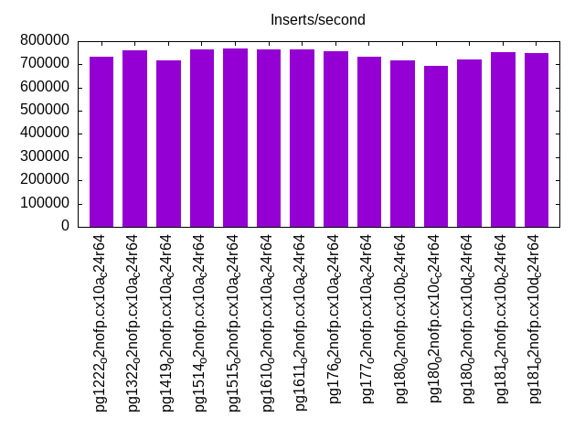
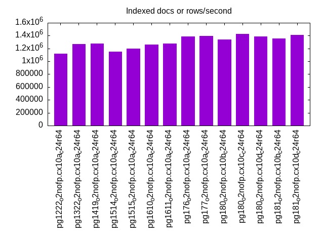
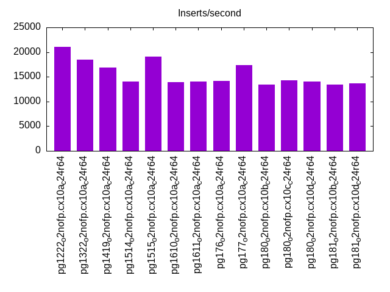
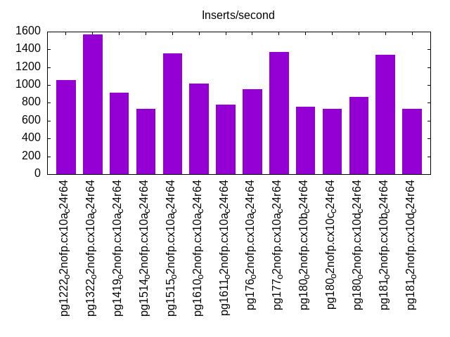
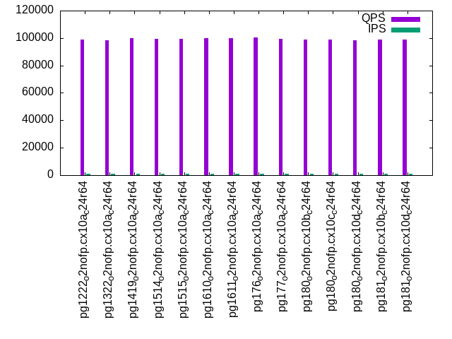
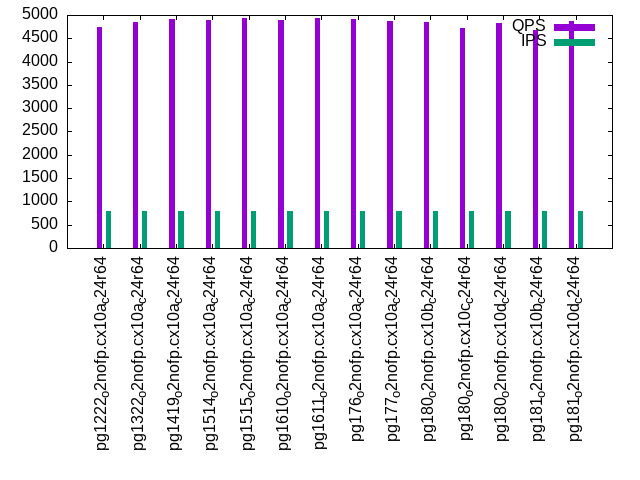
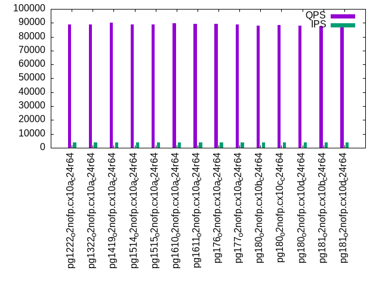
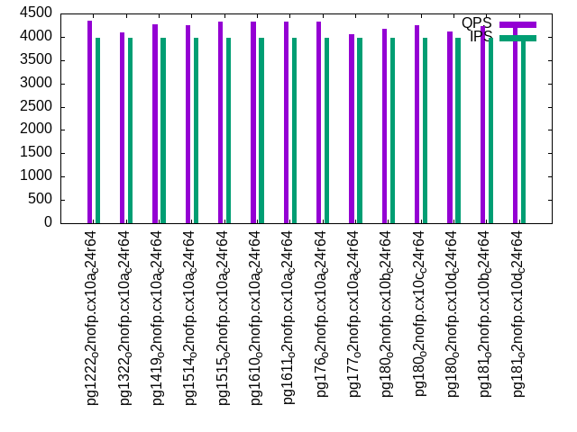
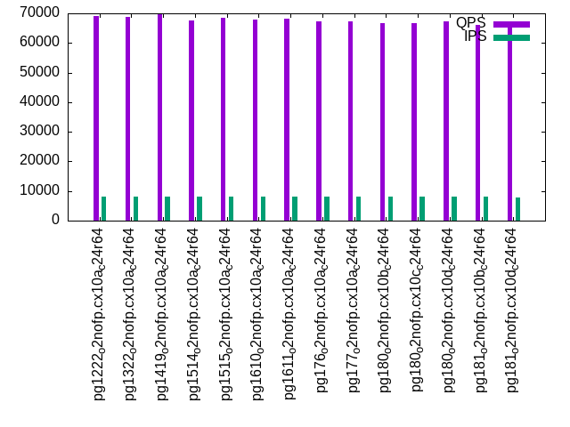
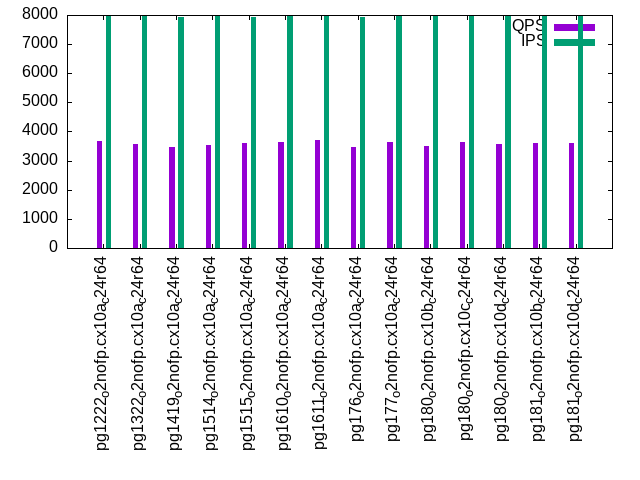

This is a report for the insert benchmark with 2000M docs and 8 client(s). It is generated by scripts (bash, awk, sed) and Tufte might not be impressed. An overview of the insert benchmark is here and a short update is here. Below, by DBMS, I mean DBMS+version.config. An example is my8020.c10b40 where my means MySQL, 8020 is version 8.0.20 and c10b40 is the name for the configuration file.
The test server has 24 cores, 2 sockets, 64G RAM and 1 NVMe devices. The benchmark was run with 8 clients and there were 1 or 3 connections per client (1 for queries or inserts without rate limits, 1+1 for rate limited inserts+deletes). It uses 8 tables with a table per client. It loads 250M rows per table without secondary indexes, creates 3 secondary indexes per table, then inserts 4m+1m rows per table with a delete per insert to avoid growing the table. It then does 6 read+write tests for 1800s each that do queries as fast as possible with 100,100,500,500,1000,1000 inserts/s and the same for deletes/s per client concurrent with the queries. The database is larger than RAM and most tests are IO-bound except for the range query (qr*) tests that frequently have a cached working set. Clients and the DBMS share one server.
The tested DBMS are:
The numbers are inserts/s for l.i0, l.i1 and l.i2, indexed docs (or rows) /s for l.x and queries/s for qr100, qp100 thru qr1000, qp1000" The values are the average rate over the entire test for inserts (IPS) and queries (QPS). The range of values for IPS and QPS is split into 3 parts: bottom 25%, middle 50%, top 25%. Values in the bottom 25% have a red background, values in the top 25% have a green background and values in the middle have no color. A gray background is used for values that can be ignored because the DBMS did not sustain the target insert rate. Red backgrounds are not used when the minimum value is within 80% of the max value.
| dbms | l.i0 | l.x | l.i1 | l.i2 | qr100 | qp100 | qr500 | qp500 | qr1000 | qp1000 |
|---|---|---|---|---|---|---|---|---|---|---|
| pg1222_o2nofp.cx10a_c24r64 | 732869 | 1116695 | 21108 | 1055 | 98999 | 4746 | 88678 | 4346 | 69060 | 3684 |
| pg1322_o2nofp.cx10a_c24r64 | 760746 | 1266624 | 18497 | 1572 | 98413 | 4853 | 88758 | 4088 | 68762 | 3561 |
| pg1419_o2nofp.cx10a_c24r64 | 715308 | 1273074 | 16913 | 911 | 99930 | 4907 | 90005 | 4262 | 69886 | 3462 |
| pg1514_o2nofp.cx10a_c24r64 | 766284 | 1152074 | 14072 | 730 | 99263 | 4898 | 88955 | 4257 | 67630 | 3549 |
| pg1515_o2nofp.cx10a_c24r64 | 766577 | 1201923 | 19150 | 1356 | 99308 | 4938 | 88998 | 4324 | 68585 | 3590 |
| pg1610_o2nofp.cx10a_c24r64 | 762776 | 1260240 | 13974 | 1016 | 100099 | 4902 | 89565 | 4329 | 67896 | 3638 |
| pg1611_o2nofp.cx10a_c24r64 | 763359 | 1280410 | 14072 | 778 | 99811 | 4931 | 89279 | 4325 | 68220 | 3692 |
| pg176_o2nofp.cx10a_c24r64 | 757576 | 1385042 | 14191 | 955 | 100484 | 4916 | 89479 | 4335 | 67280 | 3480 |
| pg177_o2nofp.cx10a_c24r64 | 732601 | 1398601 | 17335 | 1374 | 99508 | 4868 | 88716 | 4055 | 67324 | 3654 |
| pg180_o2nofp.cx10b_c24r64 | 718649 | 1341382 | 13372 | 755 | 98670 | 4842 | 88089 | 4181 | 66626 | 3519 |
| pg180_o2nofp.cx10c_c24r64 | 694927 | 1423488 | 14311 | 736 | 98859 | 4727 | 88223 | 4254 | 66821 | 3644 |
| pg180_o2nofp.cx10d_c24r64 | 722543 | 1387925 | 13986 | 866 | 98319 | 4820 | 87826 | 4106 | 67230 | 3575 |
| pg181_o2nofp.cx10b_c24r64 | 752729 | 1356852 | 13457 | 1338 | 98949 | 4679 | 87743 | 4232 | 66129 | 3599 |
| pg181_o2nofp.cx10d_c24r64 | 749906 | 1409443 | 13611 | 735 | 98674 | 4879 | 88127 | 4310 | 66925 | 3609 |
This table has relative throughput, throughput for the DBMS relative to the DBMS in the first line, using the absolute throughput from the previous table. Values less than 0.95 have a yellow background. Values greater than 1.05 have a blue background.
| dbms | l.i0 | l.x | l.i1 | l.i2 | qr100 | qp100 | qr500 | qp500 | qr1000 | qp1000 |
|---|---|---|---|---|---|---|---|---|---|---|
| pg1222_o2nofp.cx10a_c24r64 | 1.00 | 1.00 | 1.00 | 1.00 | 1.00 | 1.00 | 1.00 | 1.00 | 1.00 | 1.00 |
| pg1322_o2nofp.cx10a_c24r64 | 1.04 | 1.13 | 0.88 | 1.49 | 0.99 | 1.02 | 1.00 | 0.94 | 1.00 | 0.97 |
| pg1419_o2nofp.cx10a_c24r64 | 0.98 | 1.14 | 0.80 | 0.86 | 1.01 | 1.03 | 1.01 | 0.98 | 1.01 | 0.94 |
| pg1514_o2nofp.cx10a_c24r64 | 1.05 | 1.03 | 0.67 | 0.69 | 1.00 | 1.03 | 1.00 | 0.98 | 0.98 | 0.96 |
| pg1515_o2nofp.cx10a_c24r64 | 1.05 | 1.08 | 0.91 | 1.29 | 1.00 | 1.04 | 1.00 | 0.99 | 0.99 | 0.97 |
| pg1610_o2nofp.cx10a_c24r64 | 1.04 | 1.13 | 0.66 | 0.96 | 1.01 | 1.03 | 1.01 | 1.00 | 0.98 | 0.99 |
| pg1611_o2nofp.cx10a_c24r64 | 1.04 | 1.15 | 0.67 | 0.74 | 1.01 | 1.04 | 1.01 | 1.00 | 0.99 | 1.00 |
| pg176_o2nofp.cx10a_c24r64 | 1.03 | 1.24 | 0.67 | 0.91 | 1.02 | 1.04 | 1.01 | 1.00 | 0.97 | 0.94 |
| pg177_o2nofp.cx10a_c24r64 | 1.00 | 1.25 | 0.82 | 1.30 | 1.01 | 1.03 | 1.00 | 0.93 | 0.97 | 0.99 |
| pg180_o2nofp.cx10b_c24r64 | 0.98 | 1.20 | 0.63 | 0.72 | 1.00 | 1.02 | 0.99 | 0.96 | 0.96 | 0.96 |
| pg180_o2nofp.cx10c_c24r64 | 0.95 | 1.27 | 0.68 | 0.70 | 1.00 | 1.00 | 0.99 | 0.98 | 0.97 | 0.99 |
| pg180_o2nofp.cx10d_c24r64 | 0.99 | 1.24 | 0.66 | 0.82 | 0.99 | 1.02 | 0.99 | 0.94 | 0.97 | 0.97 |
| pg181_o2nofp.cx10b_c24r64 | 1.03 | 1.22 | 0.64 | 1.27 | 1.00 | 0.99 | 0.99 | 0.97 | 0.96 | 0.98 |
| pg181_o2nofp.cx10d_c24r64 | 1.02 | 1.26 | 0.64 | 0.70 | 1.00 | 1.03 | 0.99 | 0.99 | 0.97 | 0.98 |
This lists the average rate of inserts/s for the tests that do inserts concurrent with queries. For such tests the query rate is listed in the table above. The read+write tests are setup so that the insert rate should match the target rate every second. Cells that are not at least 95% of the target have a red background to indicate a failure to satisfy the target.
| dbms | qr100.L1 | qp100.L2 | qr500.L3 | qp500.L4 | qr1000.L5 | qp1000.L6 |
|---|---|---|---|---|---|---|
| pg1222_o2nofp.cx10a_c24r64 | 797 | 796 | 3982 | 3982 | 7969 | 7965 |
| pg1322_o2nofp.cx10a_c24r64 | 797 | 796 | 3982 | 3982 | 7965 | 7965 |
| pg1419_o2nofp.cx10a_c24r64 | 797 | 796 | 3982 | 3984 | 7969 | 7925 |
| pg1514_o2nofp.cx10a_c24r64 | 796 | 796 | 3984 | 3984 | 7965 | 7951 |
| pg1515_o2nofp.cx10a_c24r64 | 797 | 796 | 3982 | 3982 | 7965 | 7947 |
| pg1610_o2nofp.cx10a_c24r64 | 796 | 796 | 3984 | 3984 | 7965 | 7960 |
| pg1611_o2nofp.cx10a_c24r64 | 797 | 796 | 3982 | 3982 | 7965 | 7965 |
| pg176_o2nofp.cx10a_c24r64 | 797 | 796 | 3982 | 3984 | 7965 | 7934 |
| pg177_o2nofp.cx10a_c24r64 | 796 | 796 | 3984 | 3984 | 7965 | 7965 |
| pg180_o2nofp.cx10b_c24r64 | 796 | 797 | 3984 | 3982 | 7965 | 7960 |
| pg180_o2nofp.cx10c_c24r64 | 797 | 797 | 3984 | 3984 | 7965 | 7960 |
| pg180_o2nofp.cx10d_c24r64 | 796 | 796 | 3982 | 3982 | 7965 | 7960 |
| pg181_o2nofp.cx10b_c24r64 | 796 | 796 | 3984 | 3984 | 7969 | 7965 |
| pg181_o2nofp.cx10d_c24r64 | 797 | 797 | 3982 | 3982 | 7951 | 7960 |
| target | 800 | 800 | 4000 | 4000 | 8000 | 8000 |
l.i0: load without secondary indexes. Graphs for performance per 1-second interval are here.
Average throughput:
Insert response time histogram: each cell has the percentage of responses that take <= the time in the header and max is the max response time in seconds. For the max column values in the top 25% of the range have a red background and in the bottom 25% of the range have a green background. The red background is not used when the min value is within 80% of the max value.
| dbms | 256us | 1ms | 4ms | 16ms | 64ms | 256ms | 1s | 4s | 16s | gt | max |
|---|---|---|---|---|---|---|---|---|---|---|---|
| pg1222_o2nofp.cx10a_c24r64 | 1.996 | 97.979 | 0.018 | 0.006 | 0.001 | nonzero | 0.853 | ||||
| pg1322_o2nofp.cx10a_c24r64 | 50.802 | 49.146 | 0.038 | 0.013 | 0.001 | nonzero | 0.480 | ||||
| pg1419_o2nofp.cx10a_c24r64 | 1.207 | 98.690 | 0.085 | 0.017 | 0.001 | nonzero | 0.513 | ||||
| pg1514_o2nofp.cx10a_c24r64 | 47.404 | 52.564 | 0.025 | 0.006 | nonzero | nonzero | 0.489 | ||||
| pg1515_o2nofp.cx10a_c24r64 | 50.270 | 49.701 | 0.017 | 0.009 | 0.002 | nonzero | 0.510 | ||||
| pg1610_o2nofp.cx10a_c24r64 | 44.322 | 55.643 | 0.026 | 0.008 | 0.001 | nonzero | 0.437 | ||||
| pg1611_o2nofp.cx10a_c24r64 | 40.486 | 59.483 | 0.023 | 0.007 | nonzero | nonzero | 0.438 | ||||
| pg176_o2nofp.cx10a_c24r64 | 29.778 | 70.186 | 0.028 | 0.008 | nonzero | nonzero | 0.467 | ||||
| pg177_o2nofp.cx10a_c24r64 | 22.625 | 77.254 | 0.082 | 0.037 | 0.002 | nonzero | 0.450 | ||||
| pg180_o2nofp.cx10b_c24r64 | 10.379 | 89.474 | 0.096 | 0.049 | 0.002 | nonzero | 0.454 | ||||
| pg180_o2nofp.cx10c_c24r64 | 10.069 | 89.596 | 0.268 | 0.063 | 0.003 | nonzero | 0.442 | ||||
| pg180_o2nofp.cx10d_c24r64 | 9.472 | 90.401 | 0.093 | 0.032 | 0.001 | nonzero | 0.437 | ||||
| pg181_o2nofp.cx10b_c24r64 | 25.879 | 74.086 | 0.026 | 0.008 | nonzero | nonzero | 0.444 | ||||
| pg181_o2nofp.cx10d_c24r64 | 24.072 | 75.890 | 0.029 | 0.008 | 0.001 | nonzero | 0.445 |
Performance metrics for the DBMS listed above. Some are normalized by throughput, others are not. Legend for results is here.
ips qps rps rmbps wps wmbps rpq rkbpq wpi wkbpi csps cpups cspq cpupq dbgb1 dbgb2 rss maxop p50 p99 tag 732869 0 552 4.6 3306.5 294.0 0.001 0.006 0.005 0.411 83811 52.3 0.114 17 191.4 255.4 48.7 0.853 92689 83089 pg1222_o2nofp.cx10a_c24r64 760746 0 535 4.6 2746.5 304.5 0.001 0.006 0.004 0.410 86721 53.3 0.114 17 191.4 255.4 3.1 0.480 96987 74892 pg1322_o2nofp.cx10a_c24r64 715308 0 505 3.9 2587.8 285.3 0.001 0.006 0.004 0.408 82621 51.4 0.116 17 191.4 255.4 7.7 0.513 92388 54692 pg1419_o2nofp.cx10a_c24r64 766284 0 521 4.1 2758.8 305.9 0.001 0.005 0.004 0.409 86203 53.4 0.112 17 191.4 255.4 11.9 0.489 96788 86790 pg1514_o2nofp.cx10a_c24r64 766577 0 548 4.3 2769.1 307.0 0.001 0.006 0.004 0.410 85692 52.9 0.112 17 191.4 255.4 2.1 0.510 96887 76287 pg1515_o2nofp.cx10a_c24r64 762776 0 547 4.3 2695.9 304.5 0.001 0.006 0.004 0.409 86074 53.3 0.113 17 191.4 255.4 6.5 0.437 96588 82990 pg1610_o2nofp.cx10a_c24r64 763359 0 539 4.2 2712.2 304.4 0.001 0.006 0.004 0.408 85359 52.8 0.112 17 191.4 255.4 4.0 0.438 96487 85490 pg1611_o2nofp.cx10a_c24r64 757576 0 522 4.2 2711.1 304.7 0.001 0.006 0.004 0.412 75205 52.7 0.099 17 191.4 255.4 48.6 0.467 96088 83290 pg176_o2nofp.cx10a_c24r64 732601 0 525 4.2 2642.7 293.8 0.001 0.006 0.004 0.411 73216 51.1 0.100 17 191.4 255.4 48.6 0.450 94689 35694 pg177_o2nofp.cx10a_c24r64 718649 0 524 4.3 2568.4 286.5 0.001 0.006 0.004 0.408 72755 51.0 0.101 17 191.4 255.4 8.8 0.454 93188 48593 pg180_o2nofp.cx10b_c24r64 694927 0 487 3.9 2492.9 278.2 0.001 0.006 0.004 0.410 73034 49.6 0.105 17 191.4 255.4 48.6 0.442 91889 41694 pg180_o2nofp.cx10c_c24r64 722543 0 494 4.0 2587.7 290.1 0.001 0.006 0.004 0.411 74437 51.2 0.103 17 191.4 255.4 9.3 0.437 93189 48492 pg180_o2nofp.cx10d_c24r64 752729 0 543 4.5 2699.7 301.9 0.001 0.006 0.004 0.411 74366 52.2 0.099 17 191.4 255.4 47.5 0.444 95788 83485 pg181_o2nofp.cx10b_c24r64 749906 0 524 4.2 2655.0 298.3 0.001 0.006 0.004 0.407 75750 52.1 0.101 17 191.4 255.4 48.6 0.445 95988 80894 pg181_o2nofp.cx10d_c24r64
Average values from iostat.
r/s rkB/s rrqm/s %rrqm r_await rareq-s w/s wkB/s wrqm/s %wrqm w_await wareq-s d/s dkB/s drqm/s %drqm d_await dareq-s f/s f_await aqu-sz %util 552.2 4749.6 0.037 0.429 0.969 4.987 3306.5 301047 155.0 3.491 3.059 100.1 2.771 214.7 0.000 0.000 0.283 23.86 0.000 0.000 10.13 19.43 pg1222_o2nofp.cx10a_c24r64 535.3 4680.5 0.067 0.502 0.813 4.986 2746.5 311761 161.1 3.848 2.962 117.1 3.022 209.0 0.000 0.000 0.288 21.91 0.000 0.000 8.808 19.51 pg1322_o2nofp.cx10a_c24r64 504.6 4009.6 0.016 0.262 0.678 8.309 2587.8 292177 104.7 3.017 2.687 117.3 3.036 204.0 0.000 0.000 0.279 20.28 0.000 0.000 8.010 15.89 pg1419_o2nofp.cx10a_c24r64 521.2 4157.6 0.018 0.209 0.730 4.241 2758.8 313219 107.3 2.943 2.739 117.7 0.415 218.4 0.000 0.000 0.119 35.47 0.000 0.000 8.519 16.93 pg1514_o2nofp.cx10a_c24r64 548.3 4368.3 0.030 0.283 1.014 3.585 2769.1 314383 104.4 2.791 3.430 117.9 0.475 259.3 0.000 0.000 0.118 30.62 0.000 0.000 10.88 17.01 pg1515_o2nofp.cx10a_c24r64 547.2 4430.5 0.005 0.058 0.870 4.019 2695.9 311768 105.9 2.888 2.714 119.0 0.420 255.2 0.000 0.000 0.086 50.36 0.000 0.000 8.383 17.15 pg1610_o2nofp.cx10a_c24r64 539.1 4300.9 0.000 0.007 0.787 5.461 2712.2 311678 108.7 3.078 2.871 118.4 0.465 245.1 0.000 0.000 0.108 29.64 0.000 0.000 8.880 17.02 pg1611_o2nofp.cx10a_c24r64 522.1 4259.2 0.039 0.382 0.815 3.865 2711.1 311974 104.8 2.931 2.825 118.4 0.350 199.5 0.000 0.000 0.119 56.41 0.000 0.000 8.695 17.06 pg176_o2nofp.cx10a_c24r64 525.2 4305.1 0.167 1.587 0.759 4.345 2642.7 300848 108.8 3.177 2.643 116.9 0.278 229.6 0.000 0.000 0.077 76.93 0.000 0.000 8.141 16.52 pg177_o2nofp.cx10a_c24r64 523.8 4373.3 0.147 1.508 0.767 4.559 2568.4 293402 110.0 3.306 2.825 117.7 0.276 244.8 0.000 0.000 0.079 75.90 0.000 0.000 8.409 16.23 pg180_o2nofp.cx10b_c24r64 487.1 3998.2 0.001 0.012 0.748 4.495 2492.9 284840 105.5 3.315 2.662 117.5 0.311 165.8 0.000 0.000 0.102 41.95 0.000 0.000 7.939 16.08 pg180_o2nofp.cx10c_c24r64 493.8 4100.5 0.030 0.060 0.771 3.942 2587.7 297024 109.5 3.282 2.842 117.3 0.277 217.5 0.000 0.000 0.095 72.04 0.000 0.000 8.660 15.87 pg180_o2nofp.cx10d_c24r64 542.7 4650.1 0.044 0.272 0.807 4.648 2699.7 309127 115.3 3.341 2.814 117.6 0.297 198.8 0.000 0.000 0.082 78.35 0.000 0.000 8.605 16.96 pg181_o2nofp.cx10b_c24r64 524.3 4281.3 0.000 0.000 0.824 4.124 2655.0 305460 106.5 3.027 2.690 118.2 0.281 206.3 0.000 0.000 0.081 66.89 0.000 0.000 8.192 16.21 pg181_o2nofp.cx10d_c24r64
l.x: create secondary indexes.
Average throughput:
Performance metrics for the DBMS listed above. Some are normalized by throughput, others are not. Legend for results is here.
ips qps rps rmbps wps wmbps rpq rkbpq wpi wkbpi csps cpups cspq cpupq dbgb1 dbgb2 rss maxop p50 p99 tag 1116695 0 16532 383.9 5072.9 465.8 0.015 0.352 0.005 0.427 42875 24.5 0.038 5 384.4 448.4 18.6 0.003 NA NA pg1222_o2nofp.cx10a_c24r64 1266624 0 18842 418.3 3090.0 375.8 0.015 0.338 0.002 0.304 24624 26.2 0.019 5 384.2 448.3 39.0 0.003 NA NA pg1322_o2nofp.cx10a_c24r64 1273074 0 8691 379.0 3086.6 378.2 0.007 0.305 0.002 0.304 25395 26.4 0.020 5 384.2 448.3 11.0 0.004 NA NA pg1419_o2nofp.cx10a_c24r64 1152074 0 22111 502.5 3510.4 430.9 0.019 0.447 0.003 0.383 40504 25.1 0.035 5 384.2 448.3 2.4 0.004 NA NA pg1514_o2nofp.cx10a_c24r64 1201923 0 10124 493.4 3659.9 450.2 0.008 0.420 0.003 0.384 36605 25.5 0.030 5 384.2 448.3 38.7 0.003 NA NA pg1515_o2nofp.cx10a_c24r64 1260240 0 16111 437.0 3288.5 404.0 0.013 0.355 0.003 0.328 26702 25.6 0.021 5 384.2 448.3 38.1 0.003 NA NA pg1610_o2nofp.cx10a_c24r64 1280410 0 3475 381.2 3349.4 410.7 0.003 0.305 0.003 0.328 25129 25.8 0.020 5 384.2 448.3 38.3 0.003 NA NA pg1611_o2nofp.cx10a_c24r64 1385042 0 9944 406.2 3189.6 393.8 0.007 0.300 0.002 0.291 19049 26.2 0.014 5 384.2 448.3 34.7 0.003 NA NA pg176_o2nofp.cx10a_c24r64 1398601 0 3297 366.8 3256.9 398.9 0.002 0.269 0.002 0.292 18321 26.4 0.013 5 384.2 448.3 34.5 0.003 NA NA pg177_o2nofp.cx10a_c24r64 1341382 0 7583 370.9 3126.5 382.9 0.006 0.283 0.002 0.292 21686 25.5 0.016 5 384.2 448.3 34.4 0.004 NA NA pg180_o2nofp.cx10b_c24r64 1423488 0 10852 407.3 3319.7 405.9 0.008 0.293 0.002 0.292 23885 27.5 0.017 5 384.2 448.3 37.9 0.004 NA NA pg180_o2nofp.cx10c_c24r64 1387925 0 18280 432.9 3234.8 395.6 0.013 0.319 0.002 0.292 22397 26.7 0.016 5 384.2 448.3 38.1 0.003 NA NA pg180_o2nofp.cx10d_c24r64 1356852 0 7388 380.1 3150.0 385.3 0.005 0.287 0.002 0.291 20692 25.7 0.015 5 384.2 448.3 24.4 0.003 NA NA pg181_o2nofp.cx10b_c24r64 1409443 0 5025 381.6 3285.1 404.1 0.004 0.277 0.002 0.294 23831 26.9 0.017 5 384.2 448.1 31.3 0.003 NA NA pg181_o2nofp.cx10d_c24r64
Average values from iostat.
r/s rkB/s rrqm/s %rrqm r_await rareq-s w/s wkB/s wrqm/s %wrqm w_await wareq-s d/s dkB/s drqm/s %drqm d_await dareq-s f/s f_await aqu-sz %util 16531.6 393134 0.052 0.002 0.209 60.47 5072.9 477029 103.1 1.946 14.67 112.6 4.600 100754 0.000 0.000 0.321 4210.3 0.000 0.000 55.83 66.87 pg1222_o2nofp.cx10a_c24r64 18842.3 428370 0.070 0.122 0.273 54.54 3090.0 384837 89.47 1.838 15.87 125.0 4.881 82838.8 0.000 0.000 0.385 1610.3 0.000 0.000 51.46 60.59 pg1322_o2nofp.cx10a_c24r64 8691.0 388087 0.000 0.000 0.328 65.29 3086.6 387320 59.31 1.211 16.24 125.8 5.256 99952.0 0.000 0.000 0.336 1550.9 0.000 0.000 51.39 57.38 pg1419_o2nofp.cx10a_c24r64 22110.9 514542 0.025 0.000 0.316 53.65 3510.4 441206 51.67 0.932 18.30 126.1 2.798 83530.1 0.000 0.000 0.276 1415.5 0.000 0.000 74.63 63.32 pg1514_o2nofp.cx10a_c24r64 10123.9 505243 0.000 0.000 0.354 78.29 3659.9 460980 52.46 0.990 19.37 126.2 2.942 91718.4 0.000 0.000 0.313 2211.8 0.000 0.000 80.82 61.97 pg1515_o2nofp.cx10a_c24r64 16110.7 447446 0.036 0.000 0.336 63.64 3288.5 413704 56.16 1.252 18.48 126.0 2.628 95807.5 0.000 0.000 0.231 5907.5 0.000 0.000 72.26 59.30 pg1610_o2nofp.cx10a_c24r64 3474.6 390308 0.003 0.000 0.425 105.3 3349.4 420564 58.49 1.361 18.87 125.8 2.885 92896.9 0.000 0.000 0.209 1485.7 0.000 0.000 73.73 53.46 pg1611_o2nofp.cx10a_c24r64 9944.5 415982 0.003 0.000 0.309 67.03 3189.6 403291 58.10 1.181 15.87 126.5 3.199 94533.8 0.000 0.000 0.259 1571.7 0.000 0.000 51.39 57.69 pg176_o2nofp.cx10a_c24r64 3296.7 375652 0.000 0.000 0.361 105.1 3256.9 408523 60.23 1.128 15.63 125.9 3.952 125949 0.000 0.000 0.254 1915.3 0.000 0.000 50.31 53.86 pg177_o2nofp.cx10a_c24r64 7583.4 379817 0.362 0.637 0.391 91.12 3126.5 392116 58.14 1.643 15.06 125.2 3.250 109550 0.000 0.000 0.199 1512.7 0.000 0.000 48.97 54.17 pg180_o2nofp.cx10b_c24r64 10852.4 417079 0.003 0.000 0.386 73.67 3319.7 415600 60.54 1.373 15.99 125.3 3.648 122106 0.000 0.000 0.215 1719.3 0.000 0.000 53.27 59.65 pg180_o2nofp.cx10c_c24r64 18280.5 443240 0.003 0.000 0.291 54.38 3234.8 405059 58.99 1.132 15.86 125.6 3.783 118968 0.000 0.000 0.237 1534.8 0.000 0.000 53.58 61.66 pg180_o2nofp.cx10d_c24r64 7387.9 389271 0.052 0.001 0.279 74.71 3150.0 394535 58.06 2.360 14.70 123.9 3.482 98580.5 0.000 0.000 0.280 1597.2 0.000 0.000 48.64 55.66 pg181_o2nofp.cx10b_c24r64 5025.1 390745 0.030 0.001 0.329 104.7 3285.1 413782 61.13 2.044 15.57 125.6 3.074 116729 0.000 0.000 0.275 10162.5 0.000 0.000 52.18 55.46 pg181_o2nofp.cx10d_c24r64
l.i1: continue load after secondary indexes created with 50 inserts per transaction. Graphs for performance per 1-second interval are here.
Average throughput:
Insert response time histogram: each cell has the percentage of responses that take <= the time in the header and max is the max response time in seconds. For the max column values in the top 25% of the range have a red background and in the bottom 25% of the range have a green background. The red background is not used when the min value is within 80% of the max value.
| dbms | 256us | 1ms | 4ms | 16ms | 64ms | 256ms | 1s | 4s | 16s | gt | max |
|---|---|---|---|---|---|---|---|---|---|---|---|
| pg1222_o2nofp.cx10a_c24r64 | 77.891 | 22.108 | 0.001 | 0.437 | |||||||
| pg1322_o2nofp.cx10a_c24r64 | 74.461 | 25.524 | 0.016 | 0.190 | |||||||
| pg1419_o2nofp.cx10a_c24r64 | 77.030 | 22.955 | 0.015 | 0.131 | |||||||
| pg1514_o2nofp.cx10a_c24r64 | 84.026 | 15.960 | 0.013 | 0.182 | |||||||
| pg1515_o2nofp.cx10a_c24r64 | 78.254 | 21.737 | 0.009 | nonzero | 0.262 | ||||||
| pg1610_o2nofp.cx10a_c24r64 | 83.825 | 16.162 | 0.013 | 0.102 | |||||||
| pg1611_o2nofp.cx10a_c24r64 | 83.109 | 16.878 | 0.012 | nonzero | 0.451 | ||||||
| pg176_o2nofp.cx10a_c24r64 | 83.833 | 16.165 | 0.002 | 0.145 | |||||||
| pg177_o2nofp.cx10a_c24r64 | 82.874 | 17.118 | 0.008 | 0.093 | |||||||
| pg180_o2nofp.cx10b_c24r64 | 77.658 | 22.005 | 0.336 | 0.001 | 0.279 | ||||||
| pg180_o2nofp.cx10c_c24r64 | 82.241 | 17.748 | 0.011 | 0.116 | |||||||
| pg180_o2nofp.cx10d_c24r64 | 81.864 | 18.128 | 0.007 | nonzero | nonzero | 1.584 | |||||
| pg181_o2nofp.cx10b_c24r64 | 78.647 | 21.016 | 0.290 | 0.048 | nonzero | 2.409 | |||||
| pg181_o2nofp.cx10d_c24r64 | 79.364 | 20.485 | 0.148 | 0.003 | 0.795 |
Delete response time histogram: each cell has the percentage of responses that take <= the time in the header and max is the max response time in seconds. For the max column values in the top 25% of the range have a red background and in the bottom 25% of the range have a green background. The red background is not used when the min value is within 80% of the max value.
| dbms | 256us | 1ms | 4ms | 16ms | 64ms | 256ms | 1s | 4s | 16s | gt | max |
|---|---|---|---|---|---|---|---|---|---|---|---|
| pg1222_o2nofp.cx10a_c24r64 | 1.156 | 7.457 | 31.308 | 60.078 | 0.001 | 0.431 | |||||
| pg1322_o2nofp.cx10a_c24r64 | 1.190 | 8.650 | 28.205 | 61.948 | 0.006 | 0.111 | |||||
| pg1419_o2nofp.cx10a_c24r64 | 1.280 | 7.319 | 33.414 | 57.984 | 0.004 | 0.078 | |||||
| pg1514_o2nofp.cx10a_c24r64 | 0.943 | 6.464 | 20.851 | 71.739 | 0.003 | 0.167 | |||||
| pg1515_o2nofp.cx10a_c24r64 | 1.144 | 6.970 | 26.148 | 65.733 | 0.004 | 0.244 | |||||
| pg1610_o2nofp.cx10a_c24r64 | 1.086 | 6.210 | 20.169 | 72.527 | 0.008 | 0.102 | |||||
| pg1611_o2nofp.cx10a_c24r64 | 1.048 | 6.440 | 21.953 | 70.556 | 0.003 | 0.090 | |||||
| pg176_o2nofp.cx10a_c24r64 | 0.985 | 6.452 | 21.981 | 70.583 | 0.053 | ||||||
| pg177_o2nofp.cx10a_c24r64 | 0.989 | 6.390 | 20.822 | 71.795 | 0.004 | 0.085 | |||||
| pg180_o2nofp.cx10b_c24r64 | 0.687 | 6.060 | 21.482 | 71.763 | 0.007 | 0.001 | 0.270 | ||||
| pg180_o2nofp.cx10c_c24r64 | 0.738 | 6.326 | 22.012 | 70.921 | 0.003 | 0.096 | |||||
| pg180_o2nofp.cx10d_c24r64 | 0.859 | 6.287 | 21.775 | 71.073 | 0.005 | 0.100 | |||||
| pg181_o2nofp.cx10b_c24r64 | 0.779 | 6.533 | 19.977 | 72.702 | 0.009 | 0.251 | |||||
| pg181_o2nofp.cx10d_c24r64 | 0.877 | 6.215 | 20.142 | 72.755 | 0.012 | 0.110 |
Performance metrics for the DBMS listed above. Some are normalized by throughput, others are not. Legend for results is here.
ips qps rps rmbps wps wmbps rpq rkbpq wpi wkbpi csps cpups cspq cpupq dbgb1 dbgb2 rss maxop p50 p99 tag 21108 0 27194 213.7 31005.4 525.6 1.288 10.368 1.469 25.497 66369 40.7 3.144 463 389.6 453.7 48.7 0.437 2550 1700 pg1222_o2nofp.cx10a_c24r64 18497 0 24075 209.4 28262.6 474.4 1.302 11.592 1.528 26.262 59504 37.2 3.217 483 389.4 453.5 2.9 0.190 2500 1700 pg1322_o2nofp.cx10a_c24r64 16913 0 21542 171.7 25266.8 424.7 1.274 10.397 1.494 25.714 52698 33.9 3.116 481 389.5 453.5 1.6 0.131 2549 1700 pg1419_o2nofp.cx10a_c24r64 14072 0 17922 141.9 21272.6 350.8 1.274 10.326 1.512 25.525 43662 35.7 3.103 609 389.4 453.5 1.1 0.182 1450 1100 pg1514_o2nofp.cx10a_c24r64 19150 0 24369 194.1 29067.4 482.7 1.272 10.381 1.518 25.809 59893 38.9 3.128 488 389.4 453.5 1.5 0.262 2450 1600 pg1515_o2nofp.cx10a_c24r64 13974 0 17814 141.8 21146.8 349.7 1.275 10.391 1.513 25.628 43124 33.6 3.086 577 389.4 453.5 2.0 0.102 2200 1500 pg1610_o2nofp.cx10a_c24r64 14072 0 17921 142.8 21234.8 351.2 1.274 10.391 1.509 25.560 43360 32.8 3.081 559 389.4 453.5 48.6 0.451 2200 1550 pg1611_o2nofp.cx10a_c24r64 14191 0 18273 152.9 21223.6 349.3 1.288 11.035 1.496 25.204 42923 33.2 3.025 561 389.4 453.5 48.7 0.145 2150 1450 pg176_o2nofp.cx10a_c24r64 17335 0 22134 175.8 26716.9 437.1 1.277 10.384 1.541 25.818 53162 38.1 3.067 527 389.4 453.5 48.6 0.093 2150 1450 pg177_o2nofp.cx10a_c24r64 13372 0 17124 138.4 20504.3 337.4 1.281 10.600 1.533 25.837 42006 30.7 3.141 551 389.5 453.5 48.6 0.279 2200 1100 pg180_o2nofp.cx10b_c24r64 14311 0 18380 146.0 21837.5 358.5 1.284 10.445 1.526 25.652 44019 33.8 3.076 567 389.5 453.5 48.6 0.116 2300 1700 pg180_o2nofp.cx10c_c24r64 13986 0 17922 142.2 20946.5 347.0 1.281 10.411 1.498 25.404 42824 33.2 3.062 570 389.4 453.5 48.6 1.584 2200 1550 pg180_o2nofp.cx10d_c24r64 13457 0 17245 138.6 20272.2 340.2 1.282 10.548 1.506 25.891 42912 31.6 3.189 564 389.4 453.5 48.5 2.409 2050 700 pg181_o2nofp.cx10b_c24r64 13611 0 17413 138.5 20625.1 341.9 1.279 10.423 1.515 25.719 43389 32.2 3.188 568 389.4 453.5 48.6 0.795 2050 1344 pg181_o2nofp.cx10d_c24r64
Average values from iostat.
r/s rkB/s rrqm/s %rrqm r_await rareq-s w/s wkB/s wrqm/s %wrqm w_await wareq-s d/s dkB/s drqm/s %drqm d_await dareq-s f/s f_await aqu-sz %util 27193.5 218855 0.000 0.000 0.149 8.047 31005.4 538203 197.4 1.042 0.857 21.06 2.060 1384.5 0.000 0.000 0.262 266.0 0.000 0.000 33.94 97.76 pg1222_o2nofp.cx10a_c24r64 24075.1 214426 0.025 0.000 0.156 8.971 28262.6 485770 197.4 0.880 0.849 20.46 2.063 324.7 0.000 0.000 0.264 97.12 0.000 0.000 32.12 92.75 pg1322_o2nofp.cx10a_c24r64 21542.0 175847 0.003 0.000 0.142 8.161 25266.8 434912 100.5 0.517 0.751 20.09 2.065 185.8 0.000 0.000 0.261 62.37 0.000 0.000 27.77 85.81 pg1419_o2nofp.cx10a_c24r64 17922.3 145304 0.002 0.000 0.123 8.092 21272.6 359195 81.27 0.476 0.504 19.27 0.029 87.75 0.000 0.000 0.025 85.38 0.000 0.000 16.34 83.70 pg1514_o2nofp.cx10a_c24r64 24368.6 198789 0.001 0.000 0.148 8.165 29067.4 494245 116.1 0.481 0.812 19.92 0.056 258.8 0.000 0.000 0.029 256.5 0.000 0.000 29.93 95.87 pg1515_o2nofp.cx10a_c24r64 17814.5 145194 0.002 0.000 0.124 8.189 21146.8 358122 80.23 0.480 0.517 20.00 0.043 837.6 0.000 0.000 0.028 390.4 0.000 0.000 16.72 81.44 pg1610_o2nofp.cx10a_c24r64 17921.3 146225 0.002 0.000 0.126 8.175 21234.8 359680 80.53 0.499 0.560 19.82 0.037 95.18 0.000 0.000 0.022 120.8 0.000 0.000 18.37 80.80 pg1611_o2nofp.cx10a_c24r64 18272.6 156591 0.000 0.000 0.126 8.501 21223.6 357657 78.46 0.452 0.525 19.12 0.022 88.09 0.000 0.000 0.017 138.5 0.000 0.000 17.43 81.71 pg176_o2nofp.cx10a_c24r64 22133.6 180005 0.002 0.000 0.136 8.146 26716.9 447549 98.81 0.449 0.688 19.74 0.028 143.2 0.000 0.000 0.014 198.2 0.000 0.000 24.12 92.97 pg177_o2nofp.cx10a_c24r64 17123.9 141745 0.008 0.000 0.124 8.250 20504.3 345505 80.76 0.470 0.521 20.08 0.025 96.94 0.000 0.000 0.023 125.2 0.000 0.000 17.23 76.19 pg180_o2nofp.cx10b_c24r64 18380.2 149475 0.009 0.000 0.126 8.132 21837.5 367115 80.57 0.445 0.533 19.54 0.027 103.6 0.000 0.000 0.019 173.2 0.000 0.000 18.06 81.32 pg180_o2nofp.cx10c_c24r64 17922.2 145612 0.007 0.000 0.125 8.130 20946.5 355300 78.65 0.470 0.510 19.73 0.029 86.97 0.000 0.000 0.025 137.4 0.000 0.000 16.76 80.41 pg180_o2nofp.cx10d_c24r64 17245.1 141946 0.208 0.001 0.125 8.258 20272.2 348399 92.38 0.535 0.539 19.82 0.352 4975.5 0.000 0.000 0.021 156.7 0.000 0.000 16.30 77.30 pg181_o2nofp.cx10b_c24r64 17413.0 141866 0.002 0.000 0.127 8.154 20625.1 350066 74.17 0.475 0.535 19.93 0.028 627.9 0.000 0.000 0.016 406.7 0.000 0.000 17.45 77.68 pg181_o2nofp.cx10d_c24r64
l.i2: continue load after secondary indexes created with 5 inserts per transaction. Graphs for performance per 1-second interval are here.
Average throughput:
Insert response time histogram: each cell has the percentage of responses that take <= the time in the header and max is the max response time in seconds. For the max column values in the top 25% of the range have a red background and in the bottom 25% of the range have a green background. The red background is not used when the min value is within 80% of the max value.
| dbms | 256us | 1ms | 4ms | 16ms | 64ms | 256ms | 1s | 4s | 16s | gt | max |
|---|---|---|---|---|---|---|---|---|---|---|---|
| pg1222_o2nofp.cx10a_c24r64 | 16.043 | 83.956 | 0.001 | 0.008 | |||||||
| pg1322_o2nofp.cx10a_c24r64 | 20.713 | 79.278 | 0.009 | 0.014 | |||||||
| pg1419_o2nofp.cx10a_c24r64 | 17.116 | 82.883 | nonzero | 0.004 | |||||||
| pg1514_o2nofp.cx10a_c24r64 | 16.804 | 83.195 | 0.001 | 0.006 | |||||||
| pg1515_o2nofp.cx10a_c24r64 | 12.683 | 87.316 | 0.001 | 0.005 | |||||||
| pg1610_o2nofp.cx10a_c24r64 | 16.238 | 83.759 | 0.002 | nonzero | nonzero | 0.066 | |||||
| pg1611_o2nofp.cx10a_c24r64 | 18.499 | 81.501 | nonzero | 0.007 | |||||||
| pg176_o2nofp.cx10a_c24r64 | 19.264 | 80.735 | 0.001 | 0.013 | |||||||
| pg177_o2nofp.cx10a_c24r64 | 14.263 | 85.538 | 0.113 | 0.070 | 0.016 | 0.146 | |||||
| pg180_o2nofp.cx10b_c24r64 | 16.619 | 83.381 | 0.001 | 0.005 | |||||||
| pg180_o2nofp.cx10c_c24r64 | 13.434 | 86.566 | 0.001 | 0.006 | |||||||
| pg180_o2nofp.cx10d_c24r64 | 14.771 | 85.225 | 0.005 | nonzero | 0.024 | ||||||
| pg181_o2nofp.cx10b_c24r64 | 13.469 | 86.530 | 0.001 | 0.006 | |||||||
| pg181_o2nofp.cx10d_c24r64 | 14.290 | 85.709 | 0.001 | 0.008 |
Delete response time histogram: each cell has the percentage of responses that take <= the time in the header and max is the max response time in seconds. For the max column values in the top 25% of the range have a red background and in the bottom 25% of the range have a green background. The red background is not used when the min value is within 80% of the max value.
| dbms | 256us | 1ms | 4ms | 16ms | 64ms | 256ms | 1s | 4s | 16s | gt | max |
|---|---|---|---|---|---|---|---|---|---|---|---|
| pg1222_o2nofp.cx10a_c24r64 | 99.999 | 0.001 | 0.150 | ||||||||
| pg1322_o2nofp.cx10a_c24r64 | 0.002 | 0.881 | 1.059 | 11.445 | 86.613 | nonzero | 0.152 | ||||
| pg1419_o2nofp.cx10a_c24r64 | 99.999 | 0.001 | 0.191 | ||||||||
| pg1514_o2nofp.cx10a_c24r64 | 99.997 | 0.003 | 0.185 | ||||||||
| pg1515_o2nofp.cx10a_c24r64 | 99.847 | 0.153 | 0.156 | ||||||||
| pg1610_o2nofp.cx10a_c24r64 | 99.997 | 0.003 | 0.180 | ||||||||
| pg1611_o2nofp.cx10a_c24r64 | 99.998 | 0.002 | 0.176 | ||||||||
| pg176_o2nofp.cx10a_c24r64 | 99.999 | 0.001 | 0.177 | ||||||||
| pg177_o2nofp.cx10a_c24r64 | 99.998 | 0.002 | 0.161 | ||||||||
| pg180_o2nofp.cx10b_c24r64 | 99.998 | 0.002 | 0.179 | ||||||||
| pg180_o2nofp.cx10c_c24r64 | 99.995 | 0.005 | 0.179 | ||||||||
| pg180_o2nofp.cx10d_c24r64 | 99.914 | 0.086 | 0.177 | ||||||||
| pg181_o2nofp.cx10b_c24r64 | 99.999 | 0.001 | 0.160 | ||||||||
| pg181_o2nofp.cx10d_c24r64 | 99.999 | 0.001 | 0.188 |
Performance metrics for the DBMS listed above. Some are normalized by throughput, others are not. Legend for results is here.
ips qps rps rmbps wps wmbps rpq rkbpq wpi wkbpi csps cpups cspq cpupq dbgb1 dbgb2 rss maxop p50 p99 tag 1055 0 1330 10.5 1977.8 29.4 1.261 10.188 1.875 28.549 9137 24.4 8.660 5550 391.0 455.0 48.7 0.008 200 180 pg1222_o2nofp.cx10a_c24r64 1572 0 1985 21.2 2779.9 45.5 1.263 13.829 1.769 29.644 13176 30.1 8.383 4596 390.7 454.7 10.8 0.014 200 170 pg1322_o2nofp.cx10a_c24r64 911 0 1130 8.9 1658.6 25.4 1.240 10.029 1.820 28.515 7619 24.1 8.361 6348 390.8 454.4 48.6 0.004 205 185 pg1419_o2nofp.cx10a_c24r64 730 0 898 7.1 1377.7 21.0 1.231 9.988 1.889 29.529 6138 23.0 8.413 7567 390.8 448.9 48.6 0.006 180 105 pg1514_o2nofp.cx10a_c24r64 1356 0 1705 13.6 2376.7 36.5 1.257 10.300 1.752 27.578 10993 30.7 8.105 5432 390.8 454.8 48.6 0.005 180 165 pg1515_o2nofp.cx10a_c24r64 1016 0 1284 10.3 1877.9 28.7 1.265 10.362 1.849 28.974 8315 25.3 8.187 5979 390.8 454.8 48.6 0.066 175 160 pg1610_o2nofp.cx10a_c24r64 778 0 956 7.6 1466.3 22.5 1.230 9.960 1.885 29.664 6562 22.3 8.436 6880 390.8 454.1 48.6 0.007 175 160 pg1611_o2nofp.cx10a_c24r64 955 0 1195 9.5 1816.9 27.2 1.251 10.230 1.902 29.175 7175 24.3 7.510 6105 390.8 454.8 48.7 0.013 175 150 pg176_o2nofp.cx10a_c24r64 1374 0 1719 13.8 2353.0 36.7 1.252 10.281 1.713 27.333 10530 33.3 7.666 5818 390.8 454.8 43.9 0.146 170 155 pg177_o2nofp.cx10a_c24r64 755 0 925 7.4 1421.8 21.6 1.225 10.011 1.882 29.313 5763 21.3 7.629 6767 390.8 449.6 48.6 0.005 175 155 pg180_o2nofp.cx10b_c24r64 736 0 925 7.3 1379.2 21.2 1.257 10.156 1.875 29.470 5693 24.4 7.738 7960 390.8 449.1 48.6 0.006 170 80 pg180_o2nofp.cx10c_c24r64 866 0 1095 8.6 1610.4 24.7 1.264 10.218 1.860 29.183 6594 23.9 7.614 6624 390.8 454.2 48.6 0.024 175 150 pg180_o2nofp.cx10d_c24r64 1338 0 1684 13.5 2314.9 36.0 1.259 10.312 1.730 27.533 9906 32.4 7.405 5813 390.8 454.8 48.5 0.006 170 150 pg181_o2nofp.cx10b_c24r64 735 0 909 7.2 1360.8 21.1 1.237 10.010 1.851 29.455 5757 23.9 7.832 7804 390.8 449.0 48.6 0.008 155 140 pg181_o2nofp.cx10d_c24r64
Average values from iostat.
r/s rkB/s rrqm/s %rrqm r_await rareq-s w/s wkB/s wrqm/s %wrqm w_await wareq-s d/s dkB/s drqm/s %drqm d_await dareq-s f/s f_await aqu-sz %util 1330.5 10749.6 0.005 0.001 0.087 8.108 1977.8 30121.6 16.63 1.058 0.047 15.97 2.031 12.13 0.000 0.000 0.255 5.609 0.000 0.000 0.210 12.78 pg1222_o2nofp.cx10a_c24r64 1984.6 21735.2 0.000 0.000 0.092 9.900 2779.9 46591.6 18.38 0.644 0.102 16.72 2.032 12.51 0.000 0.000 0.252 5.281 0.000 0.000 0.793 19.21 pg1322_o2nofp.cx10a_c24r64 1129.6 9138.8 0.000 0.000 0.085 8.098 1658.6 25982.5 13.98 1.274 0.054 18.89 2.036 68.24 0.000 0.000 0.253 10.19 0.000 0.000 0.175 11.03 pg1419_o2nofp.cx10a_c24r64 898.2 7286.1 0.000 0.000 0.085 8.133 1377.7 21541.7 10.72 1.232 0.050 18.83 0.085 564.9 0.000 0.000 0.033 14.13 0.000 0.000 0.139 8.935 pg1514_o2nofp.cx10a_c24r64 1704.6 13969.9 0.000 0.000 0.089 8.176 2376.7 37404.2 13.46 0.490 0.058 15.67 0.036 2.014 0.000 0.000 0.027 1.464 0.000 0.000 0.317 16.39 pg1515_o2nofp.cx10a_c24r64 1284.2 10523.4 0.000 0.000 0.085 8.145 1877.9 29426.4 12.22 0.829 0.056 16.57 0.027 1.561 0.000 0.000 0.015 0.547 0.000 0.000 0.230 12.36 pg1610_o2nofp.cx10a_c24r64 956.5 7747.5 0.000 0.000 0.084 8.126 1466.3 23075.4 10.66 1.011 0.047 17.56 0.033 76.15 0.000 0.000 0.009 5.012 0.000 0.000 0.149 9.491 pg1611_o2nofp.cx10a_c24r64 1195.3 9773.1 0.000 0.000 0.086 8.171 1816.9 27870.5 10.87 0.678 0.045 15.98 0.014 0.349 0.000 0.000 0.014 0.804 0.000 0.000 0.189 11.59 pg176_o2nofp.cx10a_c24r64 1719.3 14121.8 0.002 0.000 0.085 8.174 2353.0 37544.0 12.27 0.439 0.057 16.13 0.018 0.277 0.000 0.000 0.022 0.611 0.000 0.000 0.312 16.41 pg177_o2nofp.cx10a_c24r64 925.0 7562.4 0.000 0.000 0.085 8.190 1421.8 22143.0 10.55 1.279 0.048 18.98 0.043 521.6 0.000 0.000 0.010 13.98 0.000 0.000 0.145 9.174 pg180_o2nofp.cx10b_c24r64 924.9 7471.8 0.000 0.000 0.084 8.091 1379.2 21680.9 9.576 1.074 0.054 19.34 0.056 553.4 0.000 0.000 0.024 14.36 0.000 0.000 0.143 9.163 pg180_o2nofp.cx10c_c24r64 1094.9 8848.5 0.000 0.000 0.084 8.094 1610.4 25272.8 10.13 0.900 0.051 18.06 0.017 69.43 0.000 0.000 0.013 8.534 0.000 0.000 0.171 10.68 pg180_o2nofp.cx10d_c24r64 1684.1 13794.8 0.001 0.000 0.087 8.181 2314.9 36831.5 12.59 0.470 0.051 16.12 0.015 0.267 0.000 0.000 0.015 0.501 0.000 0.000 0.263 16.08 pg181_o2nofp.cx10b_c24r64 908.9 7357.2 0.000 0.000 0.085 8.103 1360.8 21649.2 10.07 1.227 0.054 19.50 0.060 565.0 0.000 0.000 0.028 14.07 0.000 0.000 0.143 9.175 pg181_o2nofp.cx10d_c24r64
qr100.L1: range queries with 100 insert/s per client. Graphs for performance per 1-second interval are here.
Average throughput:
Query response time histogram: each cell has the percentage of responses that take <= the time in the header and max is the max response time in seconds. For max values in the top 25% of the range have a red background and in the bottom 25% of the range have a green background. The red background is not used when the min value is within 80% of the max value.
| dbms | 256us | 1ms | 4ms | 16ms | 64ms | 256ms | 1s | 4s | 16s | gt | max |
|---|---|---|---|---|---|---|---|---|---|---|---|
| pg1222_o2nofp.cx10a_c24r64 | 99.994 | 0.006 | nonzero | 0.003 | |||||||
| pg1322_o2nofp.cx10a_c24r64 | 99.993 | 0.007 | nonzero | 0.004 | |||||||
| pg1419_o2nofp.cx10a_c24r64 | 99.994 | 0.006 | nonzero | 0.002 | |||||||
| pg1514_o2nofp.cx10a_c24r64 | 99.994 | 0.006 | nonzero | 0.002 | |||||||
| pg1515_o2nofp.cx10a_c24r64 | 99.995 | 0.005 | nonzero | 0.003 | |||||||
| pg1610_o2nofp.cx10a_c24r64 | 99.992 | 0.008 | nonzero | 0.003 | |||||||
| pg1611_o2nofp.cx10a_c24r64 | 99.994 | 0.006 | nonzero | nonzero | 0.006 | ||||||
| pg176_o2nofp.cx10a_c24r64 | 99.995 | 0.004 | nonzero | 0.002 | |||||||
| pg177_o2nofp.cx10a_c24r64 | 99.995 | 0.005 | nonzero | 0.004 | |||||||
| pg180_o2nofp.cx10b_c24r64 | 99.994 | 0.006 | nonzero | 0.003 | |||||||
| pg180_o2nofp.cx10c_c24r64 | 99.994 | 0.006 | nonzero | nonzero | nonzero | 0.048 | |||||
| pg180_o2nofp.cx10d_c24r64 | 99.994 | 0.006 | nonzero | 0.003 | |||||||
| pg181_o2nofp.cx10b_c24r64 | 99.994 | 0.006 | nonzero | 0.003 | |||||||
| pg181_o2nofp.cx10d_c24r64 | 99.994 | 0.006 | nonzero | 0.003 |
Insert response time histogram: each cell has the percentage of responses that take <= the time in the header and max is the max response time in seconds. For max values in the top 25% of the range have a red background and in the bottom 25% of the range have a green background. The red background is not used when the min value is within 80% of the max value.
| dbms | 256us | 1ms | 4ms | 16ms | 64ms | 256ms | 1s | 4s | 16s | gt | max |
|---|---|---|---|---|---|---|---|---|---|---|---|
| pg1222_o2nofp.cx10a_c24r64 | 99.934 | 0.066 | 0.019 | ||||||||
| pg1322_o2nofp.cx10a_c24r64 | 98.681 | 1.319 | 0.023 | ||||||||
| pg1419_o2nofp.cx10a_c24r64 | 99.819 | 0.181 | 0.021 | ||||||||
| pg1514_o2nofp.cx10a_c24r64 | 99.840 | 0.160 | 0.021 | ||||||||
| pg1515_o2nofp.cx10a_c24r64 | 99.868 | 0.132 | 0.021 | ||||||||
| pg1610_o2nofp.cx10a_c24r64 | 99.882 | 0.118 | 0.023 | ||||||||
| pg1611_o2nofp.cx10a_c24r64 | 99.885 | 0.115 | 0.020 | ||||||||
| pg176_o2nofp.cx10a_c24r64 | 99.944 | 0.056 | 0.021 | ||||||||
| pg177_o2nofp.cx10a_c24r64 | 99.924 | 0.076 | 0.020 | ||||||||
| pg180_o2nofp.cx10b_c24r64 | 99.830 | 0.170 | 0.021 | ||||||||
| pg180_o2nofp.cx10c_c24r64 | 99.826 | 0.174 | 0.026 | ||||||||
| pg180_o2nofp.cx10d_c24r64 | 99.837 | 0.163 | 0.022 | ||||||||
| pg181_o2nofp.cx10b_c24r64 | 99.819 | 0.181 | 0.021 | ||||||||
| pg181_o2nofp.cx10d_c24r64 | 99.854 | 0.146 | 0.022 |
Delete response time histogram: each cell has the percentage of responses that take <= the time in the header and max is the max response time in seconds. For max values in the top 25% of the range have a red background and in the bottom 25% of the range have a green background. The red background is not used when the min value is within 80% of the max value.
| dbms | 256us | 1ms | 4ms | 16ms | 64ms | 256ms | 1s | 4s | 16s | gt | max |
|---|---|---|---|---|---|---|---|---|---|---|---|
| pg1222_o2nofp.cx10a_c24r64 | 26.049 | 73.951 | 0.003 | ||||||||
| pg1322_o2nofp.cx10a_c24r64 | 25.247 | 74.740 | 0.014 | 0.005 | |||||||
| pg1419_o2nofp.cx10a_c24r64 | 24.899 | 75.101 | 0.004 | ||||||||
| pg1514_o2nofp.cx10a_c24r64 | 19.944 | 80.052 | 0.003 | 0.004 | |||||||
| pg1515_o2nofp.cx10a_c24r64 | 27.809 | 72.191 | 0.004 | ||||||||
| pg1610_o2nofp.cx10a_c24r64 | 20.868 | 79.122 | 0.010 | 0.004 | |||||||
| pg1611_o2nofp.cx10a_c24r64 | 22.420 | 77.576 | 0.003 | 0.004 | |||||||
| pg176_o2nofp.cx10a_c24r64 | 24.135 | 75.865 | 0.004 | ||||||||
| pg177_o2nofp.cx10a_c24r64 | 24.552 | 75.448 | 0.004 | ||||||||
| pg180_o2nofp.cx10b_c24r64 | 19.743 | 80.253 | 0.003 | 0.004 | |||||||
| pg180_o2nofp.cx10c_c24r64 | 19.361 | 80.625 | 0.014 | 0.004 | |||||||
| pg180_o2nofp.cx10d_c24r64 | 19.194 | 80.799 | 0.007 | 0.004 | |||||||
| pg181_o2nofp.cx10b_c24r64 | 19.719 | 80.260 | 0.021 | 0.005 | |||||||
| pg181_o2nofp.cx10d_c24r64 | 19.806 | 80.188 | 0.007 | 0.004 |
Performance metrics for the DBMS listed above. Some are normalized by throughput, others are not. Legend for results is here.
ips qps rps rmbps wps wmbps rpq rkbpq wpi wkbpi csps cpups cspq cpupq dbgb1 dbgb2 rss maxop p50 p99 tag 797 98999 1057 9.1 389.6 13.8 0.011 0.094 0.489 17.762 380682 33.4 3.845 81 391.1 455.1 48.7 0.003 12478 11870 pg1222_o2nofp.cx10a_c24r64 797 98413 1058 8.8 544.4 15.2 0.011 0.092 0.683 19.537 378467 33.6 3.846 82 390.8 454.8 48.7 0.004 12414 11854 pg1322_o2nofp.cx10a_c24r64 797 99930 1055 8.5 540.7 15.2 0.011 0.087 0.678 19.497 384072 33.3 3.843 80 390.9 454.9 48.6 0.002 12606 11918 pg1419_o2nofp.cx10a_c24r64 796 99263 1064 8.5 535.9 15.1 0.011 0.088 0.673 19.454 381600 33.5 3.844 81 390.9 454.9 48.6 0.002 12462 11902 pg1514_o2nofp.cx10a_c24r64 797 99308 1051 8.5 540.6 15.2 0.011 0.088 0.678 19.470 381749 33.6 3.844 81 390.8 454.9 48.6 0.003 12414 12126 pg1515_o2nofp.cx10a_c24r64 796 100099 1080 8.7 518.6 15.0 0.011 0.089 0.651 19.259 384834 33.4 3.845 80 390.8 454.9 47.5 0.003 12558 11982 pg1610_o2nofp.cx10a_c24r64 797 99811 1079 8.7 532.4 15.1 0.011 0.089 0.668 19.384 383654 33.6 3.844 81 390.8 454.9 48.6 0.006 12574 11983 pg1611_o2nofp.cx10a_c24r64 797 100484 1082 8.7 534.0 15.1 0.011 0.088 0.670 19.405 386123 33.4 3.843 80 390.8 454.9 48.7 0.002 12638 11998 pg176_o2nofp.cx10a_c24r64 796 99508 1083 8.9 538.4 15.1 0.011 0.092 0.676 19.447 382740 33.4 3.846 81 390.8 454.9 48.6 0.004 12446 11886 pg177_o2nofp.cx10a_c24r64 796 98670 1066 8.6 534.1 15.1 0.011 0.089 0.671 19.425 379305 33.5 3.844 81 390.9 454.9 48.6 0.003 12478 11870 pg180_o2nofp.cx10b_c24r64 797 98859 1075 8.9 529.4 15.1 0.011 0.093 0.664 19.340 380190 33.5 3.846 81 390.8 454.9 48.6 0.048 12446 11966 pg180_o2nofp.cx10c_c24r64 796 98319 1070 8.8 534.4 15.1 0.011 0.091 0.671 19.428 377995 33.4 3.845 82 390.9 454.9 48.6 0.003 12398 11774 pg180_o2nofp.cx10d_c24r64 796 98949 1070 8.8 538.6 15.1 0.011 0.091 0.676 19.449 380488 33.5 3.845 81 390.8 454.9 48.6 0.003 12414 11838 pg181_o2nofp.cx10b_c24r64 797 98674 1060 8.5 534.5 15.1 0.011 0.088 0.671 19.422 379220 33.5 3.843 81 390.9 454.9 48.6 0.003 12414 11822 pg181_o2nofp.cx10d_c24r64
Average values from iostat.
r/s rkB/s rrqm/s %rrqm r_await rareq-s w/s wkB/s wrqm/s %wrqm w_await wareq-s d/s dkB/s drqm/s %drqm d_await dareq-s f/s f_await aqu-sz %util 1057.4 9338.6 0.000 0.000 0.091 8.811 389.6 14154.4 10.69 4.980 0.136 62.24 1.998 10.39 0.000 0.000 0.254 5.197 0.000 0.000 0.128 4.473 pg1222_o2nofp.cx10a_c24r64 1058.0 9014.0 0.000 0.000 0.109 8.418 544.4 15569.3 8.785 3.375 0.220 53.85 2.000 10.81 0.000 0.000 0.254 5.403 0.000 0.000 0.187 4.235 pg1322_o2nofp.cx10a_c24r64 1054.8 8696.9 0.000 0.000 0.107 8.169 540.7 15537.4 9.757 3.773 0.248 54.20 2.001 10.79 0.000 0.000 0.253 5.396 0.000 0.000 0.183 4.247 pg1419_o2nofp.cx10a_c24r64 1064.4 8708.3 0.000 0.000 0.101 8.151 535.9 15492.8 6.645 2.609 0.133 55.41 0.001 0.002 0.000 0.000 0.000 0.011 0.000 0.000 0.142 4.862 pg1514_o2nofp.cx10a_c24r64 1051.3 8697.7 0.000 0.000 0.095 8.238 540.6 15515.6 5.929 2.313 0.107 54.61 0.001 0.002 0.000 0.000 0.003 0.011 0.000 0.000 0.131 4.490 pg1515_o2nofp.cx10a_c24r64 1079.9 8957.6 0.000 0.000 0.100 8.229 518.6 15337.5 6.350 2.618 0.131 56.86 0.001 0.002 0.000 0.000 0.003 0.011 0.000 0.000 0.140 4.455 pg1610_o2nofp.cx10a_c24r64 1079.0 8925.8 0.000 0.000 0.099 8.196 532.4 15446.9 6.299 2.519 0.120 55.48 0.001 0.002 0.000 0.000 0.000 0.011 0.000 0.000 0.140 3.968 pg1611_o2nofp.cx10a_c24r64 1081.8 8862.1 0.000 0.000 0.090 8.156 534.0 15463.8 5.347 2.133 0.109 55.41 0.001 0.002 0.000 0.000 0.000 0.011 0.000 0.000 0.129 4.809 pg176_o2nofp.cx10a_c24r64 1082.6 9161.9 0.000 0.000 0.090 8.421 538.4 15487.6 4.353 1.761 0.116 54.80 0.001 0.002 0.000 0.000 0.000 0.011 0.000 0.000 0.132 4.692 pg177_o2nofp.cx10a_c24r64 1065.5 8762.3 0.000 0.000 0.100 8.209 534.1 15469.8 6.018 2.400 0.123 55.61 0.001 0.002 0.000 0.000 0.000 0.011 0.000 0.000 0.139 5.220 pg180_o2nofp.cx10b_c24r64 1074.8 9162.1 0.000 0.000 0.099 8.520 529.4 15412.0 4.817 1.996 0.122 55.87 0.001 0.002 0.000 0.000 0.003 0.011 0.000 0.000 0.140 4.759 pg180_o2nofp.cx10c_c24r64 1069.6 8963.8 0.000 0.000 0.100 8.374 534.4 15472.6 5.384 2.163 0.157 55.31 0.001 0.002 0.000 0.000 0.000 0.011 0.000 0.000 0.145 3.537 pg180_o2nofp.cx10d_c24r64 1069.5 9033.6 0.000 0.000 0.099 8.440 538.6 15489.6 4.613 1.882 0.140 54.77 0.001 0.002 0.000 0.000 0.000 0.011 0.000 0.000 0.146 4.289 pg181_o2nofp.cx10b_c24r64 1060.5 8702.8 0.000 0.000 0.099 8.190 534.5 15477.4 5.213 2.111 0.116 55.70 0.001 0.002 0.000 0.000 0.000 0.011 0.000 0.000 0.137 5.159 pg181_o2nofp.cx10d_c24r64
qp100.L2: point queries with 100 insert/s per client. Graphs for performance per 1-second interval are here.
Average throughput:
Query response time histogram: each cell has the percentage of responses that take <= the time in the header and max is the max response time in seconds. For max values in the top 25% of the range have a red background and in the bottom 25% of the range have a green background. The red background is not used when the min value is within 80% of the max value.
| dbms | 256us | 1ms | 4ms | 16ms | 64ms | 256ms | 1s | 4s | 16s | gt | max |
|---|---|---|---|---|---|---|---|---|---|---|---|
| pg1222_o2nofp.cx10a_c24r64 | 1.540 | 98.031 | 0.394 | 0.025 | 0.011 | 0.228 | |||||
| pg1322_o2nofp.cx10a_c24r64 | 1.485 | 98.475 | 0.040 | 0.010 | |||||||
| pg1419_o2nofp.cx10a_c24r64 | 1.655 | 98.324 | 0.021 | 0.011 | |||||||
| pg1514_o2nofp.cx10a_c24r64 | 1.563 | 98.424 | 0.013 | 0.010 | |||||||
| pg1515_o2nofp.cx10a_c24r64 | 1.714 | 98.266 | 0.020 | 0.010 | |||||||
| pg1610_o2nofp.cx10a_c24r64 | 1.578 | 98.400 | 0.022 | nonzero | 0.049 | ||||||
| pg1611_o2nofp.cx10a_c24r64 | 1.645 | 98.338 | 0.016 | 0.010 | |||||||
| pg176_o2nofp.cx10a_c24r64 | 1.596 | 98.388 | 0.016 | 0.010 | |||||||
| pg177_o2nofp.cx10a_c24r64 | 1.458 | 98.520 | 0.021 | 0.010 | |||||||
| pg180_o2nofp.cx10b_c24r64 | 1.357 | 98.622 | 0.021 | 0.010 | |||||||
| pg180_o2nofp.cx10c_c24r64 | 1.204 | 98.629 | 0.146 | 0.015 | 0.006 | 0.193 | |||||
| pg180_o2nofp.cx10d_c24r64 | 1.306 | 98.673 | 0.020 | 0.010 | |||||||
| pg181_o2nofp.cx10b_c24r64 | 1.205 | 98.488 | 0.275 | 0.024 | 0.008 | nonzero | 0.668 | ||||
| pg181_o2nofp.cx10d_c24r64 | 1.434 | 98.549 | 0.018 | 0.011 |
Insert response time histogram: each cell has the percentage of responses that take <= the time in the header and max is the max response time in seconds. For max values in the top 25% of the range have a red background and in the bottom 25% of the range have a green background. The red background is not used when the min value is within 80% of the max value.
| dbms | 256us | 1ms | 4ms | 16ms | 64ms | 256ms | 1s | 4s | 16s | gt | max |
|---|---|---|---|---|---|---|---|---|---|---|---|
| pg1222_o2nofp.cx10a_c24r64 | 51.028 | 48.111 | 0.799 | 0.062 | 0.354 | ||||||
| pg1322_o2nofp.cx10a_c24r64 | 27.201 | 72.799 | 0.033 | ||||||||
| pg1419_o2nofp.cx10a_c24r64 | 58.153 | 41.847 | 0.032 | ||||||||
| pg1514_o2nofp.cx10a_c24r64 | 82.163 | 17.837 | 0.028 | ||||||||
| pg1515_o2nofp.cx10a_c24r64 | 40.337 | 59.663 | 0.028 | ||||||||
| pg1610_o2nofp.cx10a_c24r64 | 35.170 | 64.830 | 0.029 | ||||||||
| pg1611_o2nofp.cx10a_c24r64 | 50.931 | 49.069 | 0.025 | ||||||||
| pg176_o2nofp.cx10a_c24r64 | 49.569 | 50.431 | 0.027 | ||||||||
| pg177_o2nofp.cx10a_c24r64 | 48.674 | 51.326 | 0.027 | ||||||||
| pg180_o2nofp.cx10b_c24r64 | 42.604 | 57.396 | 0.026 | ||||||||
| pg180_o2nofp.cx10c_c24r64 | 39.816 | 59.861 | 0.312 | 0.010 | 0.295 | ||||||
| pg180_o2nofp.cx10d_c24r64 | 48.833 | 51.167 | 0.028 | ||||||||
| pg181_o2nofp.cx10b_c24r64 | 58.885 | 40.517 | 0.500 | 0.097 | 0.341 | ||||||
| pg181_o2nofp.cx10d_c24r64 | 47.163 | 52.837 | 0.027 |
Delete response time histogram: each cell has the percentage of responses that take <= the time in the header and max is the max response time in seconds. For max values in the top 25% of the range have a red background and in the bottom 25% of the range have a green background. The red background is not used when the min value is within 80% of the max value.
| dbms | 256us | 1ms | 4ms | 16ms | 64ms | 256ms | 1s | 4s | 16s | gt | max |
|---|---|---|---|---|---|---|---|---|---|---|---|
| pg1222_o2nofp.cx10a_c24r64 | 79.191 | 20.729 | 0.080 | 0.051 | |||||||
| pg1322_o2nofp.cx10a_c24r64 | 72.868 | 27.128 | 0.003 | 0.016 | |||||||
| pg1419_o2nofp.cx10a_c24r64 | 81.698 | 18.299 | 0.003 | 0.016 | |||||||
| pg1514_o2nofp.cx10a_c24r64 | 73.444 | 26.556 | 0.015 | ||||||||
| pg1515_o2nofp.cx10a_c24r64 | 78.715 | 21.278 | 0.007 | 0.017 | |||||||
| pg1610_o2nofp.cx10a_c24r64 | 58.174 | 41.826 | 0.015 | ||||||||
| pg1611_o2nofp.cx10a_c24r64 | 68.295 | 31.705 | 0.015 | ||||||||
| pg176_o2nofp.cx10a_c24r64 | 66.212 | 33.788 | 0.015 | ||||||||
| pg177_o2nofp.cx10a_c24r64 | 66.233 | 33.764 | 0.003 | 0.016 | |||||||
| pg180_o2nofp.cx10b_c24r64 | 62.521 | 37.472 | 0.007 | 0.016 | |||||||
| pg180_o2nofp.cx10c_c24r64 | 57.771 | 42.212 | 0.017 | 0.029 | |||||||
| pg180_o2nofp.cx10d_c24r64 | 60.677 | 39.319 | 0.003 | 0.016 | |||||||
| pg181_o2nofp.cx10b_c24r64 | 65.656 | 34.253 | 0.083 | 0.007 | 0.075 | ||||||
| pg181_o2nofp.cx10d_c24r64 | 52.059 | 47.941 | 0.016 |
Performance metrics for the DBMS listed above. Some are normalized by throughput, others are not. Legend for results is here.
ips qps rps rmbps wps wmbps rpq rkbpq wpi wkbpi csps cpups cspq cpupq dbgb1 dbgb2 rss maxop p50 p99 tag 796 4746 65631 514.0 2823.4 32.4 13.828 110.903 3.545 41.709 146721 12.2 30.913 617 391.2 455.3 48.7 0.228 624 224 pg1222_o2nofp.cx10a_c24r64 796 4853 67058 524.5 2681.5 31.3 13.817 110.666 3.367 40.247 148318 11.9 30.560 588 390.9 454.9 48.7 0.010 624 416 pg1322_o2nofp.cx10a_c24r64 796 4907 67707 529.2 2685.7 31.3 13.798 110.442 3.372 40.272 149591 11.6 30.486 567 390.9 452.3 48.6 0.011 624 432 pg1419_o2nofp.cx10a_c24r64 796 4898 67593 528.5 2683.9 31.3 13.799 110.477 3.370 40.247 148978 11.7 30.414 573 390.9 452.6 48.6 0.010 624 432 pg1514_o2nofp.cx10a_c24r64 796 4938 68121 532.0 2680.8 31.3 13.796 110.338 3.366 40.207 150049 11.7 30.389 569 390.9 454.7 48.6 0.010 624 448 pg1515_o2nofp.cx10a_c24r64 796 4902 67615 527.8 2695.2 31.4 13.793 110.245 3.384 40.355 149035 11.8 30.403 578 390.9 454.9 47.8 0.049 624 432 pg1610_o2nofp.cx10a_c24r64 796 4931 68037 531.3 2686.2 31.3 13.797 110.322 3.373 40.258 149782 11.6 30.374 565 390.9 452.7 48.6 0.010 624 448 pg1611_o2nofp.cx10a_c24r64 796 4916 67803 530.1 2684.4 31.3 13.793 110.423 3.371 40.229 149337 11.8 30.379 576 390.9 453.2 48.7 0.010 624 448 pg176_o2nofp.cx10a_c24r64 796 4868 67194 525.5 2680.2 31.3 13.803 110.532 3.365 40.196 147939 12.0 30.389 592 390.9 454.7 48.6 0.010 608 432 pg177_o2nofp.cx10a_c24r64 797 4842 66794 522.3 2682.7 31.3 13.796 110.472 3.366 40.196 147124 11.7 30.388 580 390.9 452.4 48.6 0.010 608 432 pg180_o2nofp.cx10b_c24r64 797 4727 65288 510.4 2684.6 31.3 13.812 110.578 3.369 40.204 144770 12.4 30.627 630 390.9 452.7 48.6 0.193 608 272 pg180_o2nofp.cx10c_c24r64 796 4820 66542 520.4 2683.2 31.3 13.806 110.556 3.369 40.236 146553 11.8 30.407 588 390.9 452.6 48.6 0.010 608 448 pg180_o2nofp.cx10d_c24r64 796 4679 64656 505.5 2677.2 31.2 13.819 110.621 3.362 40.149 144145 12.2 30.807 626 390.9 454.7 48.6 0.668 608 288 pg181_o2nofp.cx10b_c24r64 797 4879 67270 525.9 2684.4 31.3 13.788 110.379 3.369 40.221 148116 11.9 30.360 585 390.9 452.7 48.6 0.011 624 448 pg181_o2nofp.cx10d_c24r64
Average values from iostat.
r/s rkB/s rrqm/s %rrqm r_await rareq-s w/s wkB/s wrqm/s %wrqm w_await wareq-s d/s dkB/s drqm/s %drqm d_await dareq-s f/s f_await aqu-sz %util 65631.0 526368 0.013 0.000 0.081 8.022 2823.4 33217.0 15.77 0.806 0.062 13.69 2.003 10.58 0.000 0.000 0.243 5.257 0.000 0.000 5.644 98.72 pg1222_o2nofp.cx10a_c24r64 67058.4 537094 0.000 0.000 0.081 8.010 2681.5 32052.9 13.63 0.704 0.068 13.61 1.999 10.93 0.000 0.000 0.242 5.017 0.000 0.000 5.939 99.95 pg1322_o2nofp.cx10a_c24r64 67707.3 541927 0.000 0.000 0.081 8.003 2685.7 32073.0 13.63 0.682 0.058 13.60 2.110 1572.2 0.000 0.000 0.243 47.01 0.000 0.000 5.928 99.96 pg1419_o2nofp.cx10a_c24r64 67593.1 541148 0.000 0.000 0.080 8.007 2683.9 32052.6 11.28 0.566 0.026 13.62 0.107 1388.9 0.000 0.000 0.006 81.53 0.000 0.000 5.646 99.96 pg1514_o2nofp.cx10a_c24r64 68121.4 544803 0.000 0.000 0.081 7.999 2680.8 32021.2 9.546 0.482 0.030 13.62 0.012 154.8 0.000 0.000 0.003 38.62 0.000 0.000 5.766 99.96 pg1515_o2nofp.cx10a_c24r64 67615.4 540419 0.000 0.000 0.080 7.993 2695.2 32139.0 10.50 0.533 0.030 13.63 0.002 0.144 0.000 0.000 0.000 0.366 0.000 0.000 5.699 99.96 pg1610_o2nofp.cx10a_c24r64 68037.0 544020 0.000 0.000 0.080 7.996 2686.2 32061.1 10.94 0.552 0.030 13.62 0.089 1270.9 0.000 0.000 0.003 39.98 0.000 0.000 5.765 99.96 pg1611_o2nofp.cx10a_c24r64 67802.9 542816 0.000 0.000 0.080 8.006 2684.4 32038.6 9.461 0.473 0.030 13.62 0.069 998.6 0.000 0.000 0.003 40.61 0.000 0.000 5.657 99.95 pg176_o2nofp.cx10a_c24r64 67193.9 538094 0.000 0.000 0.080 8.010 2680.2 32012.0 8.029 0.406 0.031 13.63 0.011 127.2 0.000 0.000 0.001 35.35 0.000 0.000 5.722 99.95 pg177_o2nofp.cx10a_c24r64 66793.7 534851 0.000 0.000 0.080 8.009 2682.7 32032.2 10.47 0.519 0.030 13.62 0.117 1488.8 0.000 0.000 0.001 35.64 0.000 0.000 5.615 99.96 pg180_o2nofp.cx10b_c24r64 65287.5 522691 0.000 0.000 0.080 8.008 2684.6 32038.7 8.819 0.441 0.030 13.70 0.099 1316.3 0.000 0.000 0.001 37.19 0.000 0.000 5.449 99.33 pg180_o2nofp.cx10c_c24r64 66542.1 532848 0.000 0.000 0.080 8.009 2683.2 32044.2 9.966 0.484 0.032 13.61 0.096 1370.8 0.000 0.000 0.001 39.86 0.000 0.000 5.586 99.95 pg180_o2nofp.cx10d_c24r64 64655.8 517584 0.002 0.000 0.080 8.006 2677.2 31974.3 8.634 0.445 0.031 13.77 0.011 136.3 0.000 0.000 0.001 35.88 0.000 0.000 5.428 98.94 pg181_o2nofp.cx10b_c24r64 67269.9 538508 0.000 0.000 0.080 8.005 2684.4 32052.3 9.920 0.490 0.031 13.62 0.093 1307.2 0.000 0.000 0.003 39.15 0.000 0.000 5.617 99.95 pg181_o2nofp.cx10d_c24r64
qr500.L3: range queries with 500 insert/s per client. Graphs for performance per 1-second interval are here.
Average throughput:
Query response time histogram: each cell has the percentage of responses that take <= the time in the header and max is the max response time in seconds. For max values in the top 25% of the range have a red background and in the bottom 25% of the range have a green background. The red background is not used when the min value is within 80% of the max value.
| dbms | 256us | 1ms | 4ms | 16ms | 64ms | 256ms | 1s | 4s | 16s | gt | max |
|---|---|---|---|---|---|---|---|---|---|---|---|
| pg1222_o2nofp.cx10a_c24r64 | 99.913 | 0.086 | 0.001 | nonzero | nonzero | 0.048 | |||||
| pg1322_o2nofp.cx10a_c24r64 | 99.923 | 0.076 | 0.001 | nonzero | nonzero | 0.056 | |||||
| pg1419_o2nofp.cx10a_c24r64 | 99.928 | 0.071 | 0.001 | nonzero | nonzero | 0.051 | |||||
| pg1514_o2nofp.cx10a_c24r64 | 99.905 | 0.094 | 0.001 | nonzero | nonzero | 0.048 | |||||
| pg1515_o2nofp.cx10a_c24r64 | 99.904 | 0.095 | 0.001 | nonzero | nonzero | 0.039 | |||||
| pg1610_o2nofp.cx10a_c24r64 | 99.914 | 0.085 | nonzero | nonzero | nonzero | 0.051 | |||||
| pg1611_o2nofp.cx10a_c24r64 | 99.906 | 0.093 | 0.001 | nonzero | nonzero | 0.053 | |||||
| pg176_o2nofp.cx10a_c24r64 | 99.920 | 0.079 | 0.001 | nonzero | nonzero | 0.052 | |||||
| pg177_o2nofp.cx10a_c24r64 | 99.906 | 0.094 | 0.001 | nonzero | nonzero | 0.052 | |||||
| pg180_o2nofp.cx10b_c24r64 | 99.908 | 0.091 | 0.001 | nonzero | nonzero | nonzero | 0.295 | ||||
| pg180_o2nofp.cx10c_c24r64 | 99.912 | 0.087 | 0.001 | nonzero | nonzero | 0.053 | |||||
| pg180_o2nofp.cx10d_c24r64 | 99.897 | 0.102 | 0.001 | nonzero | nonzero | 0.051 | |||||
| pg181_o2nofp.cx10b_c24r64 | 99.895 | 0.104 | 0.001 | nonzero | nonzero | 0.048 | |||||
| pg181_o2nofp.cx10d_c24r64 | 99.918 | 0.081 | 0.001 | nonzero | nonzero | 0.050 |
Insert response time histogram: each cell has the percentage of responses that take <= the time in the header and max is the max response time in seconds. For max values in the top 25% of the range have a red background and in the bottom 25% of the range have a green background. The red background is not used when the min value is within 80% of the max value.
| dbms | 256us | 1ms | 4ms | 16ms | 64ms | 256ms | 1s | 4s | 16s | gt | max |
|---|---|---|---|---|---|---|---|---|---|---|---|
| pg1222_o2nofp.cx10a_c24r64 | 67.018 | 32.978 | 0.004 | 0.069 | |||||||
| pg1322_o2nofp.cx10a_c24r64 | 58.610 | 41.348 | 0.033 | 0.008 | 0.281 | ||||||
| pg1419_o2nofp.cx10a_c24r64 | 63.742 | 36.258 | 0.042 | ||||||||
| pg1514_o2nofp.cx10a_c24r64 | 83.370 | 16.630 | 0.062 | ||||||||
| pg1515_o2nofp.cx10a_c24r64 | 85.190 | 14.810 | 0.036 | ||||||||
| pg1610_o2nofp.cx10a_c24r64 | 86.355 | 13.645 | 0.030 | ||||||||
| pg1611_o2nofp.cx10a_c24r64 | 86.536 | 13.460 | 0.003 | 0.071 | |||||||
| pg176_o2nofp.cx10a_c24r64 | 88.388 | 11.611 | 0.001 | 0.067 | |||||||
| pg177_o2nofp.cx10a_c24r64 | 84.474 | 15.519 | 0.001 | 0.006 | 0.317 | ||||||
| pg180_o2nofp.cx10b_c24r64 | 84.169 | 15.825 | 0.006 | 0.328 | |||||||
| pg180_o2nofp.cx10c_c24r64 | 83.651 | 16.344 | 0.005 | 0.123 | |||||||
| pg180_o2nofp.cx10d_c24r64 | 82.119 | 17.881 | 0.045 | ||||||||
| pg181_o2nofp.cx10b_c24r64 | 80.472 | 19.528 | 0.063 | ||||||||
| pg181_o2nofp.cx10d_c24r64 | 86.082 | 13.912 | 0.006 | 0.067 |
Delete response time histogram: each cell has the percentage of responses that take <= the time in the header and max is the max response time in seconds. For max values in the top 25% of the range have a red background and in the bottom 25% of the range have a green background. The red background is not used when the min value is within 80% of the max value.
| dbms | 256us | 1ms | 4ms | 16ms | 64ms | 256ms | 1s | 4s | 16s | gt | max |
|---|---|---|---|---|---|---|---|---|---|---|---|
| pg1222_o2nofp.cx10a_c24r64 | 3.980 | 78.303 | 17.717 | 0.042 | |||||||
| pg1322_o2nofp.cx10a_c24r64 | 3.385 | 88.246 | 8.369 | 0.026 | |||||||
| pg1419_o2nofp.cx10a_c24r64 | 3.444 | 90.542 | 6.015 | 0.026 | |||||||
| pg1514_o2nofp.cx10a_c24r64 | 0.865 | 71.791 | 27.344 | 0.062 | |||||||
| pg1515_o2nofp.cx10a_c24r64 | 2.849 | 74.910 | 22.241 | 0.034 | |||||||
| pg1610_o2nofp.cx10a_c24r64 | 1.003 | 74.113 | 24.883 | 0.027 | |||||||
| pg1611_o2nofp.cx10a_c24r64 | 1.106 | 70.837 | 28.055 | 0.002 | 0.070 | ||||||
| pg176_o2nofp.cx10a_c24r64 | 1.407 | 71.683 | 26.910 | 0.058 | |||||||
| pg177_o2nofp.cx10a_c24r64 | 1.105 | 69.254 | 29.637 | 0.004 | 0.066 | ||||||
| pg180_o2nofp.cx10b_c24r64 | 1.169 | 69.831 | 28.998 | 0.001 | 0.304 | ||||||
| pg180_o2nofp.cx10c_c24r64 | 0.883 | 70.535 | 28.577 | 0.004 | 0.118 | ||||||
| pg180_o2nofp.cx10d_c24r64 | 0.748 | 69.610 | 29.642 | 0.037 | |||||||
| pg181_o2nofp.cx10b_c24r64 | 0.513 | 70.298 | 29.189 | 0.061 | |||||||
| pg181_o2nofp.cx10d_c24r64 | 1.024 | 71.154 | 27.817 | 0.005 | 0.067 |
Performance metrics for the DBMS listed above. Some are normalized by throughput, others are not. Legend for results is here.
ips qps rps rmbps wps wmbps rpq rkbpq wpi wkbpi csps cpups cspq cpupq dbgb1 dbgb2 rss maxop p50 p99 tag 3982 88678 5707 45.7 5279.3 92.0 0.064 0.528 1.326 23.646 346856 39.4 3.911 107 391.9 455.9 43.3 0.048 11149 10398 pg1222_o2nofp.cx10a_c24r64 3982 88758 5857 47.6 5284.9 91.7 0.066 0.549 1.327 23.590 349271 39.1 3.935 106 391.4 455.4 48.0 0.056 11102 10398 pg1322_o2nofp.cx10a_c24r64 3982 90005 5813 46.8 5296.0 93.2 0.065 0.533 1.330 23.961 353645 38.8 3.929 103 391.3 455.4 48.6 0.051 11294 10494 pg1419_o2nofp.cx10a_c24r64 3984 88955 5814 46.5 5286.4 93.0 0.065 0.535 1.327 23.893 348073 39.5 3.913 107 391.3 455.3 48.6 0.048 11150 10462 pg1514_o2nofp.cx10a_c24r64 3982 88998 5726 46.0 5277.6 91.8 0.064 0.529 1.325 23.601 348880 39.4 3.920 106 391.2 455.2 48.6 0.039 11119 10479 pg1515_o2nofp.cx10a_c24r64 3984 89565 5711 46.0 5270.0 90.5 0.064 0.526 1.323 23.246 349210 39.5 3.899 106 391.1 455.1 48.3 0.051 11246 10478 pg1610_o2nofp.cx10a_c24r64 3982 89279 5713 46.0 5288.6 92.9 0.064 0.528 1.328 23.885 349373 39.6 3.913 106 391.1 455.1 48.6 0.053 11214 10511 pg1611_o2nofp.cx10a_c24r64 3982 89479 5708 46.4 5287.5 92.6 0.064 0.531 1.328 23.819 348899 39.4 3.899 106 391.1 455.1 48.7 0.052 11214 10414 pg176_o2nofp.cx10a_c24r64 3984 88716 5736 46.9 5283.3 91.8 0.065 0.542 1.326 23.596 345729 39.7 3.897 107 391.1 455.1 48.6 0.052 11150 10430 pg177_o2nofp.cx10a_c24r64 3984 88089 5730 46.0 5295.3 93.2 0.065 0.535 1.329 23.939 344678 39.6 3.913 108 391.2 455.2 48.6 0.295 11018 10222 pg180_o2nofp.cx10b_c24r64 3984 88223 5743 46.6 5293.8 93.0 0.065 0.541 1.329 23.896 343181 39.6 3.890 108 391.1 455.1 45.4 0.053 11134 10382 pg180_o2nofp.cx10c_c24r64 3982 87826 5818 46.8 5291.2 93.0 0.066 0.546 1.329 23.918 343046 39.8 3.906 109 391.3 455.3 48.6 0.051 11022 10252 pg180_o2nofp.cx10d_c24r64 3984 87743 5751 46.5 5281.4 91.8 0.066 0.543 1.325 23.597 342485 39.9 3.903 109 391.1 455.2 47.8 0.048 10926 10142 pg181_o2nofp.cx10b_c24r64 3982 88127 5703 45.7 5292.3 93.0 0.065 0.531 1.329 23.920 343603 39.5 3.899 108 391.3 455.4 48.6 0.050 11103 10302 pg181_o2nofp.cx10d_c24r64
Average values from iostat.
r/s rkB/s rrqm/s %rrqm r_await rareq-s w/s wkB/s wrqm/s %wrqm w_await wareq-s d/s dkB/s drqm/s %drqm d_await dareq-s f/s f_await aqu-sz %util 5706.9 46847.8 0.000 0.000 0.131 8.192 5279.3 94163.7 29.47 0.820 0.446 30.50 2.054 682.4 0.000 0.000 0.253 38.72 0.000 0.000 3.276 19.48 pg1222_o2nofp.cx10a_c24r64 5857.2 48744.3 0.000 0.000 0.141 8.288 5284.9 93943.6 30.36 0.828 0.532 30.06 2.092 1306.6 0.000 0.000 0.253 45.81 0.000 0.000 3.827 20.17 pg1322_o2nofp.cx10a_c24r64 5812.7 47946.7 0.001 0.000 0.141 8.220 5296.0 95419.9 32.27 0.835 0.591 30.35 2.096 1272.9 0.000 0.000 0.259 41.90 0.000 0.000 4.294 20.17 pg1419_o2nofp.cx10a_c24r64 5813.8 47597.9 0.001 0.000 0.117 8.170 5286.4 95200.7 28.87 0.694 0.333 30.54 0.102 1280.2 0.000 0.000 0.007 36.93 0.000 0.000 2.800 18.23 pg1514_o2nofp.cx10a_c24r64 5726.3 47107.6 0.001 0.000 0.115 8.209 5277.6 93987.3 23.25 0.590 0.381 30.47 0.099 1398.2 0.000 0.000 0.004 41.28 0.000 0.000 3.078 18.41 pg1515_o2nofp.cx10a_c24r64 5711.2 47071.5 0.000 0.000 0.115 8.224 5270.0 92622.8 20.88 0.620 0.288 30.15 0.009 0.357 0.000 0.000 0.002 0.283 0.000 0.000 2.330 17.83 pg1610_o2nofp.cx10a_c24r64 5713.4 47110.3 0.000 0.000 0.114 8.228 5288.6 95117.4 27.84 0.657 0.323 30.50 0.098 1298.4 0.000 0.000 0.007 45.13 0.000 0.000 2.722 18.29 pg1611_o2nofp.cx10a_c24r64 5708.4 47499.1 0.000 0.000 0.113 8.313 5287.5 94854.0 25.39 0.601 0.308 30.37 0.092 1334.5 0.000 0.000 0.004 59.66 0.000 0.000 2.613 17.99 pg176_o2nofp.cx10a_c24r64 5735.6 48076.3 0.000 0.000 0.114 8.379 5283.3 94018.0 22.03 0.554 0.268 30.13 0.098 1404.4 0.000 0.000 0.003 40.91 0.000 0.000 2.319 18.28 pg177_o2nofp.cx10a_c24r64 5730.4 47127.0 0.000 0.000 0.116 8.203 5295.3 95386.3 27.45 0.637 0.312 30.33 0.095 1289.2 0.000 0.000 0.004 56.78 0.000 0.000 2.673 18.60 pg180_o2nofp.cx10b_c24r64 5742.9 47734.7 0.001 0.000 0.114 8.298 5293.8 95214.0 24.39 0.575 0.291 30.34 0.092 1298.2 0.000 0.000 0.004 58.52 0.000 0.000 2.497 18.62 pg180_o2nofp.cx10c_c24r64 5818.0 47930.4 0.000 0.000 0.113 8.213 5291.2 95248.7 26.13 0.622 0.247 30.34 0.094 1289.2 0.000 0.000 0.001 61.81 0.000 0.000 2.217 18.99 pg180_o2nofp.cx10d_c24r64 5750.7 47617.0 0.000 0.000 0.116 8.268 5281.4 94022.9 21.99 0.555 0.308 30.27 0.095 1407.2 0.000 0.000 0.002 57.15 0.000 0.000 2.528 18.95 pg181_o2nofp.cx10b_c24r64 5703.0 46837.8 0.000 0.000 0.116 8.191 5292.3 95254.7 24.81 0.603 0.330 30.40 0.091 1289.2 0.000 0.000 0.002 40.28 0.000 0.000 2.764 18.38 pg181_o2nofp.cx10d_c24r64
qp500.L4: point queries with 500 insert/s per client. Graphs for performance per 1-second interval are here.
Average throughput:
Query response time histogram: each cell has the percentage of responses that take <= the time in the header and max is the max response time in seconds. For max values in the top 25% of the range have a red background and in the bottom 25% of the range have a green background. The red background is not used when the min value is within 80% of the max value.
| dbms | 256us | 1ms | 4ms | 16ms | 64ms | 256ms | 1s | 4s | 16s | gt | max |
|---|---|---|---|---|---|---|---|---|---|---|---|
| pg1222_o2nofp.cx10a_c24r64 | 0.702 | 98.992 | 0.307 | 0.011 | |||||||
| pg1322_o2nofp.cx10a_c24r64 | 0.443 | 98.711 | 0.814 | 0.026 | 0.007 | nonzero | 0.659 | ||||
| pg1419_o2nofp.cx10a_c24r64 | 0.558 | 99.082 | 0.361 | 0.011 | |||||||
| pg1514_o2nofp.cx10a_c24r64 | 0.520 | 99.161 | 0.318 | 0.011 | |||||||
| pg1515_o2nofp.cx10a_c24r64 | 0.641 | 99.086 | 0.273 | 0.012 | |||||||
| pg1610_o2nofp.cx10a_c24r64 | 0.616 | 99.141 | 0.243 | 0.012 | |||||||
| pg1611_o2nofp.cx10a_c24r64 | 0.619 | 99.132 | 0.249 | nonzero | 0.053 | ||||||
| pg176_o2nofp.cx10a_c24r64 | 0.626 | 99.106 | 0.268 | 0.012 | |||||||
| pg177_o2nofp.cx10a_c24r64 | 0.462 | 98.352 | 1.122 | 0.053 | 0.011 | nonzero | 0.308 | ||||
| pg180_o2nofp.cx10b_c24r64 | 0.424 | 99.252 | 0.322 | 0.001 | nonzero | 0.076 | |||||
| pg180_o2nofp.cx10c_c24r64 | 0.508 | 99.201 | 0.291 | 0.011 | |||||||
| pg180_o2nofp.cx10d_c24r64 | 0.388 | 99.133 | 0.463 | 0.012 | 0.005 | 0.229 | |||||
| pg181_o2nofp.cx10b_c24r64 | 0.491 | 99.181 | 0.328 | 0.016 | |||||||
| pg181_o2nofp.cx10d_c24r64 | 0.585 | 99.137 | 0.278 | nonzero | 0.041 |
Insert response time histogram: each cell has the percentage of responses that take <= the time in the header and max is the max response time in seconds. For max values in the top 25% of the range have a red background and in the bottom 25% of the range have a green background. The red background is not used when the min value is within 80% of the max value.
| dbms | 256us | 1ms | 4ms | 16ms | 64ms | 256ms | 1s | 4s | 16s | gt | max |
|---|---|---|---|---|---|---|---|---|---|---|---|
| pg1222_o2nofp.cx10a_c24r64 | 18.604 | 81.394 | 0.001 | 0.076 | |||||||
| pg1322_o2nofp.cx10a_c24r64 | 18.116 | 81.621 | 0.263 | 0.238 | |||||||
| pg1419_o2nofp.cx10a_c24r64 | 18.628 | 81.369 | 0.002 | 0.083 | |||||||
| pg1514_o2nofp.cx10a_c24r64 | 21.074 | 78.924 | 0.001 | 0.067 | |||||||
| pg1515_o2nofp.cx10a_c24r64 | 24.955 | 75.045 | 0.058 | ||||||||
| pg1610_o2nofp.cx10a_c24r64 | 26.074 | 73.924 | 0.001 | 0.071 | |||||||
| pg1611_o2nofp.cx10a_c24r64 | 29.492 | 70.503 | 0.005 | 0.072 | |||||||
| pg176_o2nofp.cx10a_c24r64 | 30.903 | 69.094 | 0.003 | 0.099 | |||||||
| pg177_o2nofp.cx10a_c24r64 | 22.312 | 77.038 | 0.583 | 0.067 | 0.584 | ||||||
| pg180_o2nofp.cx10b_c24r64 | 20.808 | 79.176 | 0.017 | 0.100 | |||||||
| pg180_o2nofp.cx10c_c24r64 | 21.267 | 78.731 | 0.002 | 0.099 | |||||||
| pg180_o2nofp.cx10d_c24r64 | 18.586 | 81.263 | 0.141 | 0.010 | 0.371 | ||||||
| pg181_o2nofp.cx10b_c24r64 | 21.614 | 78.384 | 0.002 | 0.089 | |||||||
| pg181_o2nofp.cx10d_c24r64 | 27.755 | 72.244 | 0.001 | 0.068 |
Delete response time histogram: each cell has the percentage of responses that take <= the time in the header and max is the max response time in seconds. For max values in the top 25% of the range have a red background and in the bottom 25% of the range have a green background. The red background is not used when the min value is within 80% of the max value.
| dbms | 256us | 1ms | 4ms | 16ms | 64ms | 256ms | 1s | 4s | 16s | gt | max |
|---|---|---|---|---|---|---|---|---|---|---|---|
| pg1222_o2nofp.cx10a_c24r64 | 2.003 | 97.991 | 0.006 | 0.079 | |||||||
| pg1322_o2nofp.cx10a_c24r64 | 1.186 | 98.804 | 0.010 | 0.083 | |||||||
| pg1419_o2nofp.cx10a_c24r64 | 5.828 | 94.165 | 0.007 | 0.081 | |||||||
| pg1514_o2nofp.cx10a_c24r64 | 0.377 | 99.617 | 0.006 | 0.089 | |||||||
| pg1515_o2nofp.cx10a_c24r64 | 0.574 | 99.421 | 0.006 | 0.086 | |||||||
| pg1610_o2nofp.cx10a_c24r64 | 0.070 | 99.924 | 0.006 | 0.081 | |||||||
| pg1611_o2nofp.cx10a_c24r64 | 0.090 | 99.903 | 0.007 | 0.081 | |||||||
| pg176_o2nofp.cx10a_c24r64 | 0.059 | 99.934 | 0.007 | 0.093 | |||||||
| pg177_o2nofp.cx10a_c24r64 | 0.353 | 99.606 | 0.041 | 0.174 | |||||||
| pg180_o2nofp.cx10b_c24r64 | 0.272 | 99.721 | 0.007 | 0.083 | |||||||
| pg180_o2nofp.cx10c_c24r64 | 0.031 | 99.961 | 0.008 | 0.104 | |||||||
| pg180_o2nofp.cx10d_c24r64 | 0.032 | 99.958 | 0.010 | 0.092 | |||||||
| pg181_o2nofp.cx10b_c24r64 | 0.060 | 99.934 | 0.006 | 0.084 | |||||||
| pg181_o2nofp.cx10d_c24r64 | 0.030 | 99.965 | 0.006 | 0.079 |
Performance metrics for the DBMS listed above. Some are normalized by throughput, others are not. Legend for results is here.
ips qps rps rmbps wps wmbps rpq rkbpq wpi wkbpi csps cpups cspq cpupq dbgb1 dbgb2 rss maxop p50 p99 tag 3982 4346 68483 535.0 9743.9 125.4 15.759 126.067 2.447 32.245 152180 20.9 35.019 1154 392.5 456.5 48.5 0.011 560 368 pg1222_o2nofp.cx10a_c24r64 3982 4088 65088 510.9 9722.4 125.5 15.921 127.979 2.441 32.274 146033 21.1 35.721 1239 391.9 455.9 47.6 0.659 528 176 pg1322_o2nofp.cx10a_c24r64 3984 4262 67392 527.0 9751.0 125.6 15.811 126.595 2.447 32.274 149211 20.7 35.006 1166 391.7 455.8 48.6 0.011 544 352 pg1419_o2nofp.cx10a_c24r64 3984 4257 67406 528.4 9744.7 125.5 15.834 127.113 2.446 32.266 148886 22.0 34.974 1240 391.7 455.7 48.6 0.011 544 368 pg1514_o2nofp.cx10a_c24r64 3982 4324 68204 533.3 9757.0 125.6 15.773 126.303 2.450 32.292 150752 21.1 34.863 1171 391.4 455.5 48.6 0.012 560 368 pg1515_o2nofp.cx10a_c24r64 3984 4329 68269 532.8 9747.3 125.4 15.771 126.035 2.446 32.237 150413 21.9 34.747 1214 391.4 455.4 48.4 0.012 544 368 pg1610_o2nofp.cx10a_c24r64 3982 4325 68202 533.2 9753.0 125.5 15.770 126.250 2.449 32.268 150138 21.4 34.716 1188 391.3 455.4 48.6 0.053 544 368 pg1611_o2nofp.cx10a_c24r64 3984 4335 68333 534.4 9755.6 125.6 15.762 126.215 2.448 32.267 150207 21.7 34.647 1201 391.3 455.3 48.7 0.012 544 368 pg176_o2nofp.cx10a_c24r64 3984 4055 64653 507.9 9640.2 124.6 15.944 128.268 2.419 32.017 143807 21.9 35.464 1296 391.3 455.4 48.6 0.308 528 144 pg177_o2nofp.cx10a_c24r64 3982 4181 66342 518.5 9727.0 125.3 15.869 127.003 2.443 32.216 145744 22.6 34.862 1297 391.4 455.5 48.7 0.076 528 368 pg180_o2nofp.cx10b_c24r64 3984 4254 67246 526.0 9737.3 125.4 15.808 126.615 2.444 32.215 147801 22.6 34.744 1275 391.4 455.4 48.2 0.011 528 368 pg180_o2nofp.cx10c_c24r64 3982 4106 65356 511.9 9719.8 125.3 15.917 127.655 2.441 32.211 144597 22.7 35.216 1327 391.6 455.6 48.2 0.229 528 320 pg180_o2nofp.cx10d_c24r64 3984 4232 66934 524.6 9733.7 125.4 15.817 126.947 2.443 32.223 146952 22.6 34.726 1282 391.4 455.4 48.0 0.016 528 368 pg181_o2nofp.cx10b_c24r64 3982 4310 68009 531.8 9749.3 125.6 15.781 126.366 2.448 32.291 149302 22.0 34.644 1225 391.7 455.8 48.7 0.041 544 368 pg181_o2nofp.cx10d_c24r64
Average values from iostat.
r/s rkB/s rrqm/s %rrqm r_await rareq-s w/s wkB/s wrqm/s %wrqm w_await wareq-s d/s dkB/s drqm/s %drqm d_await dareq-s f/s f_await aqu-sz %util 68483.0 547839 0.000 0.000 0.092 8.000 9743.9 128411 43.86 0.387 0.100 13.66 2.013 20.02 0.000 0.000 0.245 7.613 0.000 0.000 7.955 99.96 pg1222_o2nofp.cx10a_c24r64 65087.7 523205 0.002 0.000 0.098 8.040 9722.4 128525 47.53 0.380 0.118 13.81 2.014 47.54 0.000 0.000 0.251 15.05 0.000 0.000 8.093 99.25 pg1322_o2nofp.cx10a_c24r64 67391.7 539599 0.000 0.000 0.096 8.007 9751.0 128595 35.06 0.308 0.105 13.65 2.011 29.38 0.000 0.000 0.245 11.06 0.000 0.000 8.076 99.96 pg1419_o2nofp.cx10a_c24r64 67405.7 541121 0.000 0.000 0.094 8.029 9744.7 128562 31.08 0.264 0.107 13.67 0.015 27.68 0.000 0.000 0.007 17.38 0.000 0.000 7.943 99.95 pg1514_o2nofp.cx10a_c24r64 68204.5 546146 0.000 0.000 0.094 8.008 9757.0 128598 31.73 0.264 0.103 13.65 0.013 0.450 0.000 0.000 0.007 0.427 0.000 0.000 7.989 99.96 pg1515_o2nofp.cx10a_c24r64 68269.1 545578 0.000 0.000 0.092 7.991 9747.3 128446 30.19 0.260 0.095 13.67 0.014 9.560 0.000 0.000 0.010 6.899 0.000 0.000 7.926 99.96 pg1610_o2nofp.cx10a_c24r64 68202.3 546007 0.000 0.000 0.094 8.006 9753.0 128502 31.98 0.273 0.090 13.66 0.011 0.454 0.000 0.000 0.009 0.534 0.000 0.000 7.866 99.96 pg1611_o2nofp.cx10a_c24r64 68333.3 547179 0.000 0.000 0.092 8.008 9755.6 128568 28.52 0.239 0.099 13.66 0.008 45.61 0.000 0.000 0.004 57.88 0.000 0.000 7.974 99.96 pg176_o2nofp.cx10a_c24r64 64652.7 520126 0.064 0.000 0.096 8.045 9640.2 127571 27.72 0.245 0.124 14.03 0.006 18.43 0.000 0.000 0.005 23.22 0.000 0.000 7.927 98.59 pg177_o2nofp.cx10a_c24r64 66341.9 530949 0.007 0.000 0.094 8.003 9727.0 128295 29.70 0.256 0.088 13.66 0.005 0.277 0.000 0.000 0.006 0.709 0.000 0.000 7.702 99.94 pg180_o2nofp.cx10b_c24r64 67246.4 538621 0.000 0.000 0.092 8.010 9737.3 128361 28.29 0.241 0.099 13.66 0.006 9.381 0.000 0.000 0.004 15.74 0.000 0.000 7.865 99.96 pg180_o2nofp.cx10c_c24r64 65356.3 524153 0.000 0.000 0.094 8.020 9719.8 128273 29.18 0.246 0.107 13.73 0.007 27.47 0.000 0.000 0.003 38.28 0.000 0.000 7.828 99.53 pg180_o2nofp.cx10d_c24r64 66933.7 537214 0.167 0.000 0.094 8.027 9733.7 128392 30.52 0.256 0.102 13.66 0.007 36.58 0.000 0.000 0.007 45.86 0.000 0.000 7.935 99.94 pg181_o2nofp.cx10b_c24r64 68008.8 544586 0.000 0.000 0.093 8.008 9749.3 128592 30.27 0.260 0.112 13.67 0.007 36.59 0.000 0.000 0.003 53.38 0.000 0.000 8.013 99.96 pg181_o2nofp.cx10d_c24r64
qr1000.L5: range queries with 1000 insert/s per client. Graphs for performance per 1-second interval are here.
Average throughput:
Query response time histogram: each cell has the percentage of responses that take <= the time in the header and max is the max response time in seconds. For max values in the top 25% of the range have a red background and in the bottom 25% of the range have a green background. The red background is not used when the min value is within 80% of the max value.
| dbms | 256us | 1ms | 4ms | 16ms | 64ms | 256ms | 1s | 4s | 16s | gt | max |
|---|---|---|---|---|---|---|---|---|---|---|---|
| pg1222_o2nofp.cx10a_c24r64 | 99.228 | 0.766 | 0.005 | 0.001 | nonzero | nonzero | nonzero | 0.270 | |||
| pg1322_o2nofp.cx10a_c24r64 | 99.338 | 0.657 | 0.005 | 0.001 | nonzero | nonzero | nonzero | 0.258 | |||
| pg1419_o2nofp.cx10a_c24r64 | 99.334 | 0.661 | 0.005 | 0.001 | nonzero | nonzero | nonzero | 0.293 | |||
| pg1514_o2nofp.cx10a_c24r64 | 98.847 | 1.147 | 0.005 | 0.001 | nonzero | nonzero | nonzero | 0.267 | |||
| pg1515_o2nofp.cx10a_c24r64 | 98.794 | 1.200 | 0.005 | 0.001 | nonzero | nonzero | nonzero | 0.257 | |||
| pg1610_o2nofp.cx10a_c24r64 | 99.145 | 0.850 | 0.004 | 0.001 | nonzero | nonzero | nonzero | 0.285 | |||
| pg1611_o2nofp.cx10a_c24r64 | 98.997 | 0.997 | 0.004 | 0.001 | nonzero | nonzero | nonzero | 0.263 | |||
| pg176_o2nofp.cx10a_c24r64 | 99.068 | 0.927 | 0.004 | 0.001 | nonzero | nonzero | nonzero | 0.270 | |||
| pg177_o2nofp.cx10a_c24r64 | 98.755 | 1.240 | 0.005 | 0.001 | nonzero | nonzero | 0.242 | ||||
| pg180_o2nofp.cx10b_c24r64 | 98.706 | 1.289 | 0.005 | 0.001 | nonzero | nonzero | nonzero | 0.260 | |||
| pg180_o2nofp.cx10c_c24r64 | 99.035 | 0.959 | 0.004 | 0.001 | nonzero | nonzero | nonzero | 0.284 | |||
| pg180_o2nofp.cx10d_c24r64 | 98.916 | 1.079 | 0.005 | 0.001 | nonzero | nonzero | nonzero | 0.262 | |||
| pg181_o2nofp.cx10b_c24r64 | 98.662 | 1.333 | 0.004 | 0.001 | nonzero | nonzero | nonzero | 0.280 | |||
| pg181_o2nofp.cx10d_c24r64 | 99.092 | 0.903 | 0.005 | 0.001 | nonzero | nonzero | nonzero | 0.269 |
Insert response time histogram: each cell has the percentage of responses that take <= the time in the header and max is the max response time in seconds. For max values in the top 25% of the range have a red background and in the bottom 25% of the range have a green background. The red background is not used when the min value is within 80% of the max value.
| dbms | 256us | 1ms | 4ms | 16ms | 64ms | 256ms | 1s | 4s | 16s | gt | max |
|---|---|---|---|---|---|---|---|---|---|---|---|
| pg1222_o2nofp.cx10a_c24r64 | 58.753 | 41.247 | 0.036 | ||||||||
| pg1322_o2nofp.cx10a_c24r64 | 56.142 | 43.858 | 0.044 | ||||||||
| pg1419_o2nofp.cx10a_c24r64 | 58.432 | 41.568 | 0.037 | ||||||||
| pg1514_o2nofp.cx10a_c24r64 | 62.525 | 37.473 | 0.002 | 0.082 | |||||||
| pg1515_o2nofp.cx10a_c24r64 | 64.554 | 35.446 | 0.034 | ||||||||
| pg1610_o2nofp.cx10a_c24r64 | 70.538 | 29.462 | 0.040 | ||||||||
| pg1611_o2nofp.cx10a_c24r64 | 70.139 | 29.861 | 0.048 | ||||||||
| pg176_o2nofp.cx10a_c24r64 | 71.785 | 28.215 | 0.045 | ||||||||
| pg177_o2nofp.cx10a_c24r64 | 68.598 | 31.399 | 0.003 | 0.146 | |||||||
| pg180_o2nofp.cx10b_c24r64 | 62.358 | 37.642 | 0.039 | ||||||||
| pg180_o2nofp.cx10c_c24r64 | 67.945 | 32.055 | 0.049 | ||||||||
| pg180_o2nofp.cx10d_c24r64 | 65.125 | 34.873 | 0.002 | 0.120 | |||||||
| pg181_o2nofp.cx10b_c24r64 | 70.907 | 29.091 | 0.002 | 0.072 | |||||||
| pg181_o2nofp.cx10d_c24r64 | 72.605 | 27.150 | 0.204 | 0.041 | 0.596 |
Delete response time histogram: each cell has the percentage of responses that take <= the time in the header and max is the max response time in seconds. For max values in the top 25% of the range have a red background and in the bottom 25% of the range have a green background. The red background is not used when the min value is within 80% of the max value.
| dbms | 256us | 1ms | 4ms | 16ms | 64ms | 256ms | 1s | 4s | 16s | gt | max |
|---|---|---|---|---|---|---|---|---|---|---|---|
| pg1222_o2nofp.cx10a_c24r64 | 0.649 | 99.348 | 0.003 | 0.124 | |||||||
| pg1322_o2nofp.cx10a_c24r64 | 0.702 | 99.295 | 0.003 | 0.121 | |||||||
| pg1419_o2nofp.cx10a_c24r64 | 0.936 | 99.061 | 0.003 | 0.119 | |||||||
| pg1514_o2nofp.cx10a_c24r64 | 0.117 | 99.880 | 0.003 | 0.127 | |||||||
| pg1515_o2nofp.cx10a_c24r64 | 1.289 | 98.708 | 0.003 | 0.131 | |||||||
| pg1610_o2nofp.cx10a_c24r64 | 0.003 | 99.994 | 0.003 | 0.129 | |||||||
| pg1611_o2nofp.cx10a_c24r64 | 0.040 | 99.957 | 0.003 | 0.126 | |||||||
| pg176_o2nofp.cx10a_c24r64 | 0.007 | 99.990 | 0.003 | 0.126 | |||||||
| pg177_o2nofp.cx10a_c24r64 | 0.165 | 99.830 | 0.005 | 0.132 | |||||||
| pg180_o2nofp.cx10b_c24r64 | 0.110 | 99.887 | 0.003 | 0.125 | |||||||
| pg180_o2nofp.cx10c_c24r64 | 0.055 | 99.943 | 0.003 | 0.131 | |||||||
| pg180_o2nofp.cx10d_c24r64 | 0.044 | 99.951 | 0.005 | 0.126 | |||||||
| pg181_o2nofp.cx10b_c24r64 | 0.037 | 99.960 | 0.003 | 0.124 | |||||||
| pg181_o2nofp.cx10d_c24r64 | 0.190 | 99.770 | 0.040 | 0.143 |
Performance metrics for the DBMS listed above. Some are normalized by throughput, others are not. Legend for results is here.
ips qps rps rmbps wps wmbps rpq rkbpq wpi wkbpi csps cpups cspq cpupq dbgb1 dbgb2 rss maxop p50 p99 tag 7969 69060 10802 86.7 12460.3 198.5 0.156 1.286 1.564 25.504 274241 54.3 3.971 189 393.8 457.8 48.7 0.270 8750 7967 pg1222_o2nofp.cx10a_c24r64 7965 68762 10771 86.6 12449.4 198.0 0.157 1.289 1.563 25.453 270889 54.0 3.940 188 393.1 457.1 48.5 0.258 8750 7903 pg1322_o2nofp.cx10a_c24r64 7969 69886 10879 87.1 12449.2 197.9 0.156 1.277 1.562 25.431 277458 54.1 3.970 186 392.9 456.9 48.6 0.293 8863 8095 pg1419_o2nofp.cx10a_c24r64 7965 67630 10950 88.6 12443.1 197.9 0.162 1.342 1.562 25.450 268432 55.9 3.969 198 393.0 457.0 48.6 0.267 8542 7742 pg1514_o2nofp.cx10a_c24r64 7965 68585 10852 87.2 12439.2 197.8 0.158 1.302 1.562 25.429 272593 54.8 3.975 192 392.6 456.6 48.6 0.257 8719 7871 pg1515_o2nofp.cx10a_c24r64 7965 67896 10776 86.5 12443.8 198.0 0.159 1.305 1.562 25.452 265787 55.8 3.915 197 392.6 456.7 48.6 0.285 8590 7790 pg1610_o2nofp.cx10a_c24r64 7965 68220 10798 86.9 12440.3 197.9 0.158 1.304 1.562 25.443 269959 56.4 3.957 198 392.5 456.5 48.6 0.263 8654 7855 pg1611_o2nofp.cx10a_c24r64 7965 67280 10805 89.0 12438.8 197.8 0.161 1.355 1.562 25.431 263072 55.6 3.910 198 392.4 456.5 48.7 0.270 8542 7695 pg176_o2nofp.cx10a_c24r64 7965 67324 10757 86.6 12502.8 198.3 0.160 1.317 1.570 25.500 263897 55.8 3.920 199 392.5 456.5 48.5 0.242 8558 7567 pg177_o2nofp.cx10a_c24r64 7965 66626 10952 88.8 12449.5 197.9 0.164 1.365 1.563 25.445 260957 55.8 3.917 201 392.6 456.6 48.7 0.260 8446 7615 pg180_o2nofp.cx10b_c24r64 7965 66821 10818 87.7 12452.2 197.9 0.162 1.344 1.563 25.447 262094 55.6 3.922 200 392.5 456.5 48.6 0.284 8447 7583 pg180_o2nofp.cx10c_c24r64 7965 67230 10856 87.4 12443.8 197.9 0.161 1.331 1.562 25.438 265751 55.2 3.953 197 392.7 456.8 48.5 0.262 8479 7663 pg180_o2nofp.cx10d_c24r64 7969 66129 10909 89.5 12447.3 197.9 0.165 1.386 1.562 25.427 261421 56.9 3.953 207 392.5 456.6 48.6 0.280 8367 7519 pg181_o2nofp.cx10b_c24r64 7951 66925 10768 87.0 12420.6 197.4 0.161 1.331 1.562 25.421 269625 56.3 4.029 202 392.9 456.9 48.4 0.269 8462 7679 pg181_o2nofp.cx10d_c24r64
Average values from iostat.
r/s rkB/s rrqm/s %rrqm r_await rareq-s w/s wkB/s wrqm/s %wrqm w_await wareq-s d/s dkB/s drqm/s %drqm d_await dareq-s f/s f_await aqu-sz %util 10801.7 88778.2 0.000 0.000 0.136 8.175 12460.3 203238 66.48 0.629 0.495 18.31 2.039 65.91 0.000 0.000 0.259 21.15 0.000 0.000 8.167 37.83 pg1222_o2nofp.cx10a_c24r64 10771.0 88663.5 0.000 0.000 0.144 8.187 12449.4 202721 69.58 0.575 0.505 17.94 2.031 38.97 0.000 0.000 0.268 13.73 0.000 0.000 8.324 38.33 pg1322_o2nofp.cx10a_c24r64 10879.3 89241.0 0.000 0.000 0.138 8.157 12449.2 202656 53.47 0.464 0.514 17.98 2.027 38.94 0.000 0.000 0.266 14.35 0.000 0.000 8.447 37.63 pg1419_o2nofp.cx10a_c24r64 10950.3 90741.9 0.000 0.000 0.126 8.250 12443.1 202695 49.73 0.434 0.423 18.02 0.025 55.19 0.000 0.000 0.017 49.45 0.000 0.000 7.115 38.24 pg1514_o2nofp.cx10a_c24r64 10851.7 89303.8 0.001 0.000 0.126 8.184 12439.2 202535 45.84 0.409 0.458 18.00 0.018 19.00 0.000 0.000 0.010 19.25 0.000 0.000 7.582 37.51 pg1515_o2nofp.cx10a_c24r64 10776.3 88590.8 0.000 0.000 0.125 8.176 12443.8 202718 48.13 0.431 0.469 18.21 0.020 28.01 0.000 0.000 0.015 30.68 0.000 0.000 7.728 37.42 pg1610_o2nofp.cx10a_c24r64 10798.4 88954.7 0.000 0.000 0.125 8.192 12440.3 202640 51.85 0.452 0.462 18.08 0.019 37.01 0.000 0.000 0.009 31.88 0.000 0.000 7.619 38.45 pg1611_o2nofp.cx10a_c24r64 10804.6 91146.4 0.000 0.000 0.128 8.401 12438.8 202551 47.36 0.417 0.486 18.04 0.011 9.491 0.000 0.000 0.011 23.78 0.000 0.000 7.989 37.34 pg176_o2nofp.cx10a_c24r64 10757.4 88641.9 0.012 0.000 0.123 8.195 12502.8 203100 47.74 0.414 0.399 17.83 0.014 36.69 0.000 0.000 0.021 41.77 0.000 0.000 6.706 38.09 pg177_o2nofp.cx10a_c24r64 10952.1 90959.6 0.002 0.000 0.126 8.263 12449.5 202660 49.63 0.437 0.401 18.01 0.018 54.89 0.000 0.000 0.015 64.43 0.000 0.000 6.741 38.17 pg180_o2nofp.cx10b_c24r64 10817.6 89840.7 0.001 0.000 0.126 8.265 12452.2 202672 48.36 0.419 0.437 18.06 0.016 54.90 0.000 0.000 0.010 67.65 0.000 0.000 7.282 38.02 pg180_o2nofp.cx10c_c24r64 10856.1 89513.1 0.000 0.000 0.125 8.202 12443.8 202605 45.90 0.406 0.433 18.01 0.018 27.67 0.000 0.000 0.021 30.75 0.000 0.000 7.228 37.40 pg180_o2nofp.cx10d_c24r64 10908.6 91655.0 0.001 0.000 0.122 8.368 12447.3 202624 47.57 0.409 0.378 18.00 0.013 27.78 0.000 0.000 0.009 38.85 0.000 0.000 6.371 41.32 pg181_o2nofp.cx10b_c24r64 10767.9 89095.6 0.138 0.001 0.114 8.232 12420.6 202134 46.40 0.409 0.322 18.05 0.018 18.60 0.000 0.000 0.017 39.06 0.000 0.000 5.556 47.57 pg181_o2nofp.cx10d_c24r64
qp1000.L6: point queries with 1000 insert/s per client. Graphs for performance per 1-second interval are here.
Average throughput:
Query response time histogram: each cell has the percentage of responses that take <= the time in the header and max is the max response time in seconds. For max values in the top 25% of the range have a red background and in the bottom 25% of the range have a green background. The red background is not used when the min value is within 80% of the max value.
| dbms | 256us | 1ms | 4ms | 16ms | 64ms | 256ms | 1s | 4s | 16s | gt | max |
|---|---|---|---|---|---|---|---|---|---|---|---|
| pg1222_o2nofp.cx10a_c24r64 | 0.164 | 98.294 | 1.541 | nonzero | 0.021 | ||||||
| pg1322_o2nofp.cx10a_c24r64 | 0.125 | 97.509 | 2.367 | 0.015 | |||||||
| pg1419_o2nofp.cx10a_c24r64 | 0.102 | 97.297 | 2.525 | 0.064 | 0.012 | nonzero | 0.337 | ||||
| pg1514_o2nofp.cx10a_c24r64 | 0.097 | 98.126 | 1.759 | 0.015 | 0.003 | nonzero | 0.306 | ||||
| pg1515_o2nofp.cx10a_c24r64 | 0.094 | 98.611 | 1.270 | 0.018 | 0.007 | nonzero | 0.324 | ||||
| pg1610_o2nofp.cx10a_c24r64 | 0.110 | 98.636 | 1.254 | nonzero | 0.031 | ||||||
| pg1611_o2nofp.cx10a_c24r64 | 0.139 | 98.535 | 1.326 | nonzero | 0.018 | ||||||
| pg176_o2nofp.cx10a_c24r64 | 0.099 | 97.452 | 2.363 | 0.080 | 0.006 | nonzero | 0.277 | ||||
| pg177_o2nofp.cx10a_c24r64 | 0.123 | 98.517 | 1.360 | nonzero | 0.022 | ||||||
| pg180_o2nofp.cx10b_c24r64 | 0.076 | 98.132 | 1.791 | nonzero | 0.020 | ||||||
| pg180_o2nofp.cx10c_c24r64 | 0.115 | 98.538 | 1.347 | nonzero | 0.027 | ||||||
| pg180_o2nofp.cx10d_c24r64 | 0.096 | 98.271 | 1.633 | 0.012 | |||||||
| pg181_o2nofp.cx10b_c24r64 | 0.097 | 98.439 | 1.464 | 0.014 | |||||||
| pg181_o2nofp.cx10d_c24r64 | 0.097 | 98.502 | 1.402 | nonzero | 0.019 |
Insert response time histogram: each cell has the percentage of responses that take <= the time in the header and max is the max response time in seconds. For max values in the top 25% of the range have a red background and in the bottom 25% of the range have a green background. The red background is not used when the min value is within 80% of the max value.
| dbms | 256us | 1ms | 4ms | 16ms | 64ms | 256ms | 1s | 4s | 16s | gt | max |
|---|---|---|---|---|---|---|---|---|---|---|---|
| pg1222_o2nofp.cx10a_c24r64 | 19.860 | 80.140 | 0.053 | ||||||||
| pg1322_o2nofp.cx10a_c24r64 | 14.507 | 85.493 | 0.054 | ||||||||
| pg1419_o2nofp.cx10a_c24r64 | 24.945 | 74.441 | 0.568 | 0.046 | 0.516 | ||||||
| pg1514_o2nofp.cx10a_c24r64 | 31.501 | 68.370 | 0.118 | 0.011 | 0.904 | ||||||
| pg1515_o2nofp.cx10a_c24r64 | 52.728 | 47.121 | 0.125 | 0.026 | 0.568 | ||||||
| pg1610_o2nofp.cx10a_c24r64 | 26.392 | 73.608 | 0.054 | ||||||||
| pg1611_o2nofp.cx10a_c24r64 | 29.976 | 70.024 | 0.044 | ||||||||
| pg176_o2nofp.cx10a_c24r64 | 30.289 | 68.925 | 0.778 | 0.008 | 0.308 | ||||||
| pg177_o2nofp.cx10a_c24r64 | 30.391 | 69.609 | 0.039 | ||||||||
| pg180_o2nofp.cx10b_c24r64 | 22.475 | 77.523 | 0.002 | 0.081 | |||||||
| pg180_o2nofp.cx10c_c24r64 | 26.908 | 73.092 | 0.043 | ||||||||
| pg180_o2nofp.cx10d_c24r64 | 23.269 | 76.731 | 0.039 | ||||||||
| pg181_o2nofp.cx10b_c24r64 | 26.950 | 73.050 | 0.051 | ||||||||
| pg181_o2nofp.cx10d_c24r64 | 29.410 | 70.590 | 0.040 |
Delete response time histogram: each cell has the percentage of responses that take <= the time in the header and max is the max response time in seconds. For max values in the top 25% of the range have a red background and in the bottom 25% of the range have a green background. The red background is not used when the min value is within 80% of the max value.
| dbms | 256us | 1ms | 4ms | 16ms | 64ms | 256ms | 1s | 4s | 16s | gt | max |
|---|---|---|---|---|---|---|---|---|---|---|---|
| pg1222_o2nofp.cx10a_c24r64 | 99.997 | 0.003 | 0.170 | ||||||||
| pg1322_o2nofp.cx10a_c24r64 | 99.997 | 0.003 | 0.165 | ||||||||
| pg1419_o2nofp.cx10a_c24r64 | 99.963 | 0.037 | 0.168 | ||||||||
| pg1514_o2nofp.cx10a_c24r64 | 99.994 | 0.006 | 0.168 | ||||||||
| pg1515_o2nofp.cx10a_c24r64 | 99.980 | 0.020 | 0.179 | ||||||||
| pg1610_o2nofp.cx10a_c24r64 | 99.997 | 0.003 | 0.166 | ||||||||
| pg1611_o2nofp.cx10a_c24r64 | 99.996 | 0.004 | 0.175 | ||||||||
| pg176_o2nofp.cx10a_c24r64 | 99.980 | 0.020 | 0.161 | ||||||||
| pg177_o2nofp.cx10a_c24r64 | 99.997 | 0.003 | 0.161 | ||||||||
| pg180_o2nofp.cx10b_c24r64 | 99.997 | 0.003 | 0.168 | ||||||||
| pg180_o2nofp.cx10c_c24r64 | 99.997 | 0.003 | 0.163 | ||||||||
| pg180_o2nofp.cx10d_c24r64 | 99.997 | 0.003 | 0.171 | ||||||||
| pg181_o2nofp.cx10b_c24r64 | 99.997 | 0.003 | 0.170 | ||||||||
| pg181_o2nofp.cx10d_c24r64 | 99.997 | 0.003 | 0.165 |
Performance metrics for the DBMS listed above. Some are normalized by throughput, others are not. Legend for results is here.
ips qps rps rmbps wps wmbps rpq rkbpq wpi wkbpi csps cpups cspq cpupq dbgb1 dbgb2 rss maxop p50 p99 tag 7965 3684 68835 538.8 17205.5 236.4 18.685 149.761 2.160 30.393 155515 36.5 42.215 2378 395.5 459.5 48.7 0.021 464 320 pg1222_o2nofp.cx10a_c24r64 7965 3561 67051 525.2 17156.0 236.4 18.828 151.032 2.154 30.399 152134 36.7 42.720 2473 394.8 458.9 48.5 0.015 464 288 pg1322_o2nofp.cx10a_c24r64 7925 3462 65688 514.6 17028.7 234.5 18.977 152.241 2.149 30.306 149845 36.3 43.289 2517 394.6 458.7 48.6 0.337 448 80 pg1419_o2nofp.cx10a_c24r64 7951 3549 67109 530.3 17108.1 235.6 18.909 153.002 2.152 30.336 151415 39.9 42.664 2698 394.7 458.7 48.6 0.306 448 240 pg1514_o2nofp.cx10a_c24r64 7947 3590 67346 528.2 17148.0 235.8 18.758 150.643 2.158 30.380 151662 37.3 42.243 2493 394.3 458.4 48.6 0.324 464 176 pg1515_o2nofp.cx10a_c24r64 7960 3638 68206 534.2 17182.5 236.3 18.746 150.340 2.159 30.398 152283 40.4 41.853 2665 394.3 458.4 48.6 0.031 464 336 pg1610_o2nofp.cx10a_c24r64 7965 3692 68924 539.3 17212.3 236.6 18.671 149.606 2.161 30.425 153042 39.5 41.458 2568 394.2 458.2 48.6 0.018 464 336 pg1611_o2nofp.cx10a_c24r64 7934 3480 65894 517.6 17041.9 234.7 18.937 152.329 2.148 30.288 148375 40.0 42.640 2759 394.2 458.2 48.7 0.277 464 80 pg176_o2nofp.cx10a_c24r64 7965 3654 68303 535.3 17200.4 236.5 18.690 149.990 2.160 30.401 151466 39.9 41.447 2620 394.2 458.3 48.5 0.022 464 304 pg177_o2nofp.cx10a_c24r64 7960 3519 66783 526.1 17115.9 235.8 18.978 153.097 2.150 30.329 147758 41.1 41.989 2803 394.3 458.4 48.7 0.020 448 288 pg180_o2nofp.cx10b_c24r64 7960 3644 68345 534.9 17195.6 236.5 18.756 150.317 2.160 30.422 151315 40.2 41.526 2648 394.2 458.2 48.6 0.027 464 320 pg180_o2nofp.cx10c_c24r64 7960 3575 67440 528.7 17153.1 236.1 18.865 151.454 2.155 30.376 149490 40.4 41.816 2712 394.5 458.5 48.5 0.012 464 288 pg180_o2nofp.cx10d_c24r64 7965 3599 67735 533.0 17164.0 236.2 18.819 151.638 2.155 30.372 149852 40.8 41.635 2721 394.3 458.3 48.6 0.014 448 320 pg181_o2nofp.cx10b_c24r64 7960 3609 67892 535.3 17169.5 236.2 18.810 151.876 2.157 30.392 150164 41.1 41.605 2733 394.6 458.7 48.5 0.019 464 320 pg181_o2nofp.cx10d_c24r64
Average values from iostat.
r/s rkB/s rrqm/s %rrqm r_await rareq-s w/s wkB/s wrqm/s %wrqm w_await wareq-s d/s dkB/s drqm/s %drqm d_await dareq-s f/s f_await aqu-sz %util 68834.7 551704 0.000 0.000 0.113 8.015 17205.5 242070 112.0 0.529 0.274 14.24 2.024 102.1 0.000 0.000 0.256 29.83 0.000 0.000 13.00 99.97 pg1222_o2nofp.cx10a_c24r64 67050.6 537854 0.000 0.000 0.117 8.022 17156.0 242118 107.7 0.521 0.335 14.29 2.037 93.46 0.000 0.000 0.253 28.95 0.000 0.000 14.40 99.97 pg1322_o2nofp.cx10a_c24r64 65687.7 526982 0.005 0.000 0.114 8.023 17028.7 240175 65.69 0.322 0.302 14.50 2.027 111.0 0.000 0.000 0.251 33.47 0.000 0.000 13.55 98.93 pg1419_o2nofp.cx10a_c24r64 67109.0 543006 0.076 0.000 0.112 8.090 17108.1 241214 58.48 0.294 0.267 14.36 0.035 109.7 0.000 0.000 0.021 67.05 0.000 0.000 12.95 99.62 pg1514_o2nofp.cx10a_c24r64 67345.6 540837 0.070 0.000 0.109 8.032 17148.0 241430 56.74 0.292 0.203 14.33 0.024 28.18 0.000 0.000 0.015 23.52 0.000 0.000 11.47 99.36 pg1515_o2nofp.cx10a_c24r64 68205.8 547013 0.042 0.000 0.111 8.020 17182.5 241969 61.03 0.296 0.277 14.30 0.038 55.96 0.000 0.000 0.027 45.81 0.000 0.000 13.21 99.96 pg1610_o2nofp.cx10a_c24r64 68923.8 552270 0.000 0.000 0.112 8.013 17212.3 242323 62.88 0.311 0.271 14.26 0.032 82.71 0.000 0.000 0.016 58.88 0.000 0.000 13.12 99.97 pg1611_o2nofp.cx10a_c24r64 65893.7 530061 0.172 0.000 0.111 8.044 17041.9 240300 58.96 0.282 0.284 14.58 0.020 90.86 0.000 0.000 0.012 88.44 0.000 0.000 13.14 98.88 pg176_o2nofp.cx10a_c24r64 68303.1 548140 0.000 0.000 0.112 8.025 17200.4 242134 57.09 0.275 0.290 14.27 0.018 18.81 0.000 0.000 0.017 24.23 0.000 0.000 13.42 99.97 pg177_o2nofp.cx10a_c24r64 66783.3 538748 0.007 0.000 0.113 8.066 17115.9 241422 62.46 0.305 0.279 14.31 0.016 55.14 0.000 0.000 0.015 79.97 0.000 0.000 13.20 99.96 pg180_o2nofp.cx10b_c24r64 68345.4 547739 0.000 0.000 0.112 8.014 17195.6 242165 59.36 0.281 0.270 14.27 0.022 100.4 0.000 0.000 0.017 127.3 0.000 0.000 13.01 99.97 pg180_o2nofp.cx10c_c24r64 67439.6 541433 0.000 0.000 0.112 8.029 17153.1 241797 56.45 0.279 0.296 14.31 0.016 64.20 0.000 0.000 0.013 95.19 0.000 0.000 13.50 99.96 pg180_o2nofp.cx10d_c24r64 67734.9 545775 0.000 0.000 0.112 8.057 17164.0 241898 59.99 0.299 0.280 14.28 0.024 64.29 0.000 0.000 0.017 65.63 0.000 0.000 13.13 99.96 pg181_o2nofp.cx10b_c24r64 67892.2 548165 0.019 0.000 0.112 8.073 17169.5 241920 60.61 0.305 0.284 14.28 0.016 73.26 0.000 0.000 0.014 83.66 0.000 0.000 13.27 99.96 pg181_o2nofp.cx10d_c24r64
l.i0: load without secondary indexes
Performance metrics for all DBMS, not just the ones listed above. Some are normalized by throughput, others are not. Legend for results is here.
ips qps rps rmbps wps wmbps rpq rkbpq wpi wkbpi csps cpups cspq cpupq dbgb1 dbgb2 rss maxop p50 p99 tag 732869 0 552 4.6 3306.5 294.0 0.001 0.006 0.005 0.411 83811 52.3 0.114 17 191.4 255.4 48.7 0.853 92689 83089 pg1222_o2nofp.cx10a_c24r64 760746 0 535 4.6 2746.5 304.5 0.001 0.006 0.004 0.410 86721 53.3 0.114 17 191.4 255.4 3.1 0.480 96987 74892 pg1322_o2nofp.cx10a_c24r64 715308 0 505 3.9 2587.8 285.3 0.001 0.006 0.004 0.408 82621 51.4 0.116 17 191.4 255.4 7.7 0.513 92388 54692 pg1419_o2nofp.cx10a_c24r64 766284 0 521 4.1 2758.8 305.9 0.001 0.005 0.004 0.409 86203 53.4 0.112 17 191.4 255.4 11.9 0.489 96788 86790 pg1514_o2nofp.cx10a_c24r64 766577 0 548 4.3 2769.1 307.0 0.001 0.006 0.004 0.410 85692 52.9 0.112 17 191.4 255.4 2.1 0.510 96887 76287 pg1515_o2nofp.cx10a_c24r64 762776 0 547 4.3 2695.9 304.5 0.001 0.006 0.004 0.409 86074 53.3 0.113 17 191.4 255.4 6.5 0.437 96588 82990 pg1610_o2nofp.cx10a_c24r64 763359 0 539 4.2 2712.2 304.4 0.001 0.006 0.004 0.408 85359 52.8 0.112 17 191.4 255.4 4.0 0.438 96487 85490 pg1611_o2nofp.cx10a_c24r64 757576 0 522 4.2 2711.1 304.7 0.001 0.006 0.004 0.412 75205 52.7 0.099 17 191.4 255.4 48.6 0.467 96088 83290 pg176_o2nofp.cx10a_c24r64 732601 0 525 4.2 2642.7 293.8 0.001 0.006 0.004 0.411 73216 51.1 0.100 17 191.4 255.4 48.6 0.450 94689 35694 pg177_o2nofp.cx10a_c24r64 718649 0 524 4.3 2568.4 286.5 0.001 0.006 0.004 0.408 72755 51.0 0.101 17 191.4 255.4 8.8 0.454 93188 48593 pg180_o2nofp.cx10b_c24r64 694927 0 487 3.9 2492.9 278.2 0.001 0.006 0.004 0.410 73034 49.6 0.105 17 191.4 255.4 48.6 0.442 91889 41694 pg180_o2nofp.cx10c_c24r64 722543 0 494 4.0 2587.7 290.1 0.001 0.006 0.004 0.411 74437 51.2 0.103 17 191.4 255.4 9.3 0.437 93189 48492 pg180_o2nofp.cx10d_c24r64 752729 0 543 4.5 2699.7 301.9 0.001 0.006 0.004 0.411 74366 52.2 0.099 17 191.4 255.4 47.5 0.444 95788 83485 pg181_o2nofp.cx10b_c24r64 749906 0 524 4.2 2655.0 298.3 0.001 0.006 0.004 0.407 75750 52.1 0.101 17 191.4 255.4 48.6 0.445 95988 80894 pg181_o2nofp.cx10d_c24r64
l.x: create secondary indexes
Performance metrics for all DBMS, not just the ones listed above. Some are normalized by throughput, others are not. Legend for results is here.
ips qps rps rmbps wps wmbps rpq rkbpq wpi wkbpi csps cpups cspq cpupq dbgb1 dbgb2 rss maxop p50 p99 tag 1116695 0 16532 383.9 5072.9 465.8 0.015 0.352 0.005 0.427 42875 24.5 0.038 5 384.4 448.4 18.6 0.003 NA NA pg1222_o2nofp.cx10a_c24r64 1266624 0 18842 418.3 3090.0 375.8 0.015 0.338 0.002 0.304 24624 26.2 0.019 5 384.2 448.3 39.0 0.003 NA NA pg1322_o2nofp.cx10a_c24r64 1273074 0 8691 379.0 3086.6 378.2 0.007 0.305 0.002 0.304 25395 26.4 0.020 5 384.2 448.3 11.0 0.004 NA NA pg1419_o2nofp.cx10a_c24r64 1152074 0 22111 502.5 3510.4 430.9 0.019 0.447 0.003 0.383 40504 25.1 0.035 5 384.2 448.3 2.4 0.004 NA NA pg1514_o2nofp.cx10a_c24r64 1201923 0 10124 493.4 3659.9 450.2 0.008 0.420 0.003 0.384 36605 25.5 0.030 5 384.2 448.3 38.7 0.003 NA NA pg1515_o2nofp.cx10a_c24r64 1260240 0 16111 437.0 3288.5 404.0 0.013 0.355 0.003 0.328 26702 25.6 0.021 5 384.2 448.3 38.1 0.003 NA NA pg1610_o2nofp.cx10a_c24r64 1280410 0 3475 381.2 3349.4 410.7 0.003 0.305 0.003 0.328 25129 25.8 0.020 5 384.2 448.3 38.3 0.003 NA NA pg1611_o2nofp.cx10a_c24r64 1385042 0 9944 406.2 3189.6 393.8 0.007 0.300 0.002 0.291 19049 26.2 0.014 5 384.2 448.3 34.7 0.003 NA NA pg176_o2nofp.cx10a_c24r64 1398601 0 3297 366.8 3256.9 398.9 0.002 0.269 0.002 0.292 18321 26.4 0.013 5 384.2 448.3 34.5 0.003 NA NA pg177_o2nofp.cx10a_c24r64 1341382 0 7583 370.9 3126.5 382.9 0.006 0.283 0.002 0.292 21686 25.5 0.016 5 384.2 448.3 34.4 0.004 NA NA pg180_o2nofp.cx10b_c24r64 1423488 0 10852 407.3 3319.7 405.9 0.008 0.293 0.002 0.292 23885 27.5 0.017 5 384.2 448.3 37.9 0.004 NA NA pg180_o2nofp.cx10c_c24r64 1387925 0 18280 432.9 3234.8 395.6 0.013 0.319 0.002 0.292 22397 26.7 0.016 5 384.2 448.3 38.1 0.003 NA NA pg180_o2nofp.cx10d_c24r64 1356852 0 7388 380.1 3150.0 385.3 0.005 0.287 0.002 0.291 20692 25.7 0.015 5 384.2 448.3 24.4 0.003 NA NA pg181_o2nofp.cx10b_c24r64 1409443 0 5025 381.6 3285.1 404.1 0.004 0.277 0.002 0.294 23831 26.9 0.017 5 384.2 448.1 31.3 0.003 NA NA pg181_o2nofp.cx10d_c24r64
l.i1: continue load after secondary indexes created with 50 inserts per transaction
Performance metrics for all DBMS, not just the ones listed above. Some are normalized by throughput, others are not. Legend for results is here.
ips qps rps rmbps wps wmbps rpq rkbpq wpi wkbpi csps cpups cspq cpupq dbgb1 dbgb2 rss maxop p50 p99 tag 21108 0 27194 213.7 31005.4 525.6 1.288 10.368 1.469 25.497 66369 40.7 3.144 463 389.6 453.7 48.7 0.437 2550 1700 pg1222_o2nofp.cx10a_c24r64 18497 0 24075 209.4 28262.6 474.4 1.302 11.592 1.528 26.262 59504 37.2 3.217 483 389.4 453.5 2.9 0.190 2500 1700 pg1322_o2nofp.cx10a_c24r64 16913 0 21542 171.7 25266.8 424.7 1.274 10.397 1.494 25.714 52698 33.9 3.116 481 389.5 453.5 1.6 0.131 2549 1700 pg1419_o2nofp.cx10a_c24r64 14072 0 17922 141.9 21272.6 350.8 1.274 10.326 1.512 25.525 43662 35.7 3.103 609 389.4 453.5 1.1 0.182 1450 1100 pg1514_o2nofp.cx10a_c24r64 19150 0 24369 194.1 29067.4 482.7 1.272 10.381 1.518 25.809 59893 38.9 3.128 488 389.4 453.5 1.5 0.262 2450 1600 pg1515_o2nofp.cx10a_c24r64 13974 0 17814 141.8 21146.8 349.7 1.275 10.391 1.513 25.628 43124 33.6 3.086 577 389.4 453.5 2.0 0.102 2200 1500 pg1610_o2nofp.cx10a_c24r64 14072 0 17921 142.8 21234.8 351.2 1.274 10.391 1.509 25.560 43360 32.8 3.081 559 389.4 453.5 48.6 0.451 2200 1550 pg1611_o2nofp.cx10a_c24r64 14191 0 18273 152.9 21223.6 349.3 1.288 11.035 1.496 25.204 42923 33.2 3.025 561 389.4 453.5 48.7 0.145 2150 1450 pg176_o2nofp.cx10a_c24r64 17335 0 22134 175.8 26716.9 437.1 1.277 10.384 1.541 25.818 53162 38.1 3.067 527 389.4 453.5 48.6 0.093 2150 1450 pg177_o2nofp.cx10a_c24r64 13372 0 17124 138.4 20504.3 337.4 1.281 10.600 1.533 25.837 42006 30.7 3.141 551 389.5 453.5 48.6 0.279 2200 1100 pg180_o2nofp.cx10b_c24r64 14311 0 18380 146.0 21837.5 358.5 1.284 10.445 1.526 25.652 44019 33.8 3.076 567 389.5 453.5 48.6 0.116 2300 1700 pg180_o2nofp.cx10c_c24r64 13986 0 17922 142.2 20946.5 347.0 1.281 10.411 1.498 25.404 42824 33.2 3.062 570 389.4 453.5 48.6 1.584 2200 1550 pg180_o2nofp.cx10d_c24r64 13457 0 17245 138.6 20272.2 340.2 1.282 10.548 1.506 25.891 42912 31.6 3.189 564 389.4 453.5 48.5 2.409 2050 700 pg181_o2nofp.cx10b_c24r64 13611 0 17413 138.5 20625.1 341.9 1.279 10.423 1.515 25.719 43389 32.2 3.188 568 389.4 453.5 48.6 0.795 2050 1344 pg181_o2nofp.cx10d_c24r64
l.i2: continue load after secondary indexes created with 5 inserts per transaction
Performance metrics for all DBMS, not just the ones listed above. Some are normalized by throughput, others are not. Legend for results is here.
ips qps rps rmbps wps wmbps rpq rkbpq wpi wkbpi csps cpups cspq cpupq dbgb1 dbgb2 rss maxop p50 p99 tag 1055 0 1330 10.5 1977.8 29.4 1.261 10.188 1.875 28.549 9137 24.4 8.660 5550 391.0 455.0 48.7 0.008 200 180 pg1222_o2nofp.cx10a_c24r64 1572 0 1985 21.2 2779.9 45.5 1.263 13.829 1.769 29.644 13176 30.1 8.383 4596 390.7 454.7 10.8 0.014 200 170 pg1322_o2nofp.cx10a_c24r64 911 0 1130 8.9 1658.6 25.4 1.240 10.029 1.820 28.515 7619 24.1 8.361 6348 390.8 454.4 48.6 0.004 205 185 pg1419_o2nofp.cx10a_c24r64 730 0 898 7.1 1377.7 21.0 1.231 9.988 1.889 29.529 6138 23.0 8.413 7567 390.8 448.9 48.6 0.006 180 105 pg1514_o2nofp.cx10a_c24r64 1356 0 1705 13.6 2376.7 36.5 1.257 10.300 1.752 27.578 10993 30.7 8.105 5432 390.8 454.8 48.6 0.005 180 165 pg1515_o2nofp.cx10a_c24r64 1016 0 1284 10.3 1877.9 28.7 1.265 10.362 1.849 28.974 8315 25.3 8.187 5979 390.8 454.8 48.6 0.066 175 160 pg1610_o2nofp.cx10a_c24r64 778 0 956 7.6 1466.3 22.5 1.230 9.960 1.885 29.664 6562 22.3 8.436 6880 390.8 454.1 48.6 0.007 175 160 pg1611_o2nofp.cx10a_c24r64 955 0 1195 9.5 1816.9 27.2 1.251 10.230 1.902 29.175 7175 24.3 7.510 6105 390.8 454.8 48.7 0.013 175 150 pg176_o2nofp.cx10a_c24r64 1374 0 1719 13.8 2353.0 36.7 1.252 10.281 1.713 27.333 10530 33.3 7.666 5818 390.8 454.8 43.9 0.146 170 155 pg177_o2nofp.cx10a_c24r64 755 0 925 7.4 1421.8 21.6 1.225 10.011 1.882 29.313 5763 21.3 7.629 6767 390.8 449.6 48.6 0.005 175 155 pg180_o2nofp.cx10b_c24r64 736 0 925 7.3 1379.2 21.2 1.257 10.156 1.875 29.470 5693 24.4 7.738 7960 390.8 449.1 48.6 0.006 170 80 pg180_o2nofp.cx10c_c24r64 866 0 1095 8.6 1610.4 24.7 1.264 10.218 1.860 29.183 6594 23.9 7.614 6624 390.8 454.2 48.6 0.024 175 150 pg180_o2nofp.cx10d_c24r64 1338 0 1684 13.5 2314.9 36.0 1.259 10.312 1.730 27.533 9906 32.4 7.405 5813 390.8 454.8 48.5 0.006 170 150 pg181_o2nofp.cx10b_c24r64 735 0 909 7.2 1360.8 21.1 1.237 10.010 1.851 29.455 5757 23.9 7.832 7804 390.8 449.0 48.6 0.008 155 140 pg181_o2nofp.cx10d_c24r64
qr100.L1: range queries with 100 insert/s per client
Performance metrics for all DBMS, not just the ones listed above. Some are normalized by throughput, others are not. Legend for results is here.
ips qps rps rmbps wps wmbps rpq rkbpq wpi wkbpi csps cpups cspq cpupq dbgb1 dbgb2 rss maxop p50 p99 tag 797 98999 1057 9.1 389.6 13.8 0.011 0.094 0.489 17.762 380682 33.4 3.845 81 391.1 455.1 48.7 0.003 12478 11870 pg1222_o2nofp.cx10a_c24r64 797 98413 1058 8.8 544.4 15.2 0.011 0.092 0.683 19.537 378467 33.6 3.846 82 390.8 454.8 48.7 0.004 12414 11854 pg1322_o2nofp.cx10a_c24r64 797 99930 1055 8.5 540.7 15.2 0.011 0.087 0.678 19.497 384072 33.3 3.843 80 390.9 454.9 48.6 0.002 12606 11918 pg1419_o2nofp.cx10a_c24r64 796 99263 1064 8.5 535.9 15.1 0.011 0.088 0.673 19.454 381600 33.5 3.844 81 390.9 454.9 48.6 0.002 12462 11902 pg1514_o2nofp.cx10a_c24r64 797 99308 1051 8.5 540.6 15.2 0.011 0.088 0.678 19.470 381749 33.6 3.844 81 390.8 454.9 48.6 0.003 12414 12126 pg1515_o2nofp.cx10a_c24r64 796 100099 1080 8.7 518.6 15.0 0.011 0.089 0.651 19.259 384834 33.4 3.845 80 390.8 454.9 47.5 0.003 12558 11982 pg1610_o2nofp.cx10a_c24r64 797 99811 1079 8.7 532.4 15.1 0.011 0.089 0.668 19.384 383654 33.6 3.844 81 390.8 454.9 48.6 0.006 12574 11983 pg1611_o2nofp.cx10a_c24r64 797 100484 1082 8.7 534.0 15.1 0.011 0.088 0.670 19.405 386123 33.4 3.843 80 390.8 454.9 48.7 0.002 12638 11998 pg176_o2nofp.cx10a_c24r64 796 99508 1083 8.9 538.4 15.1 0.011 0.092 0.676 19.447 382740 33.4 3.846 81 390.8 454.9 48.6 0.004 12446 11886 pg177_o2nofp.cx10a_c24r64 796 98670 1066 8.6 534.1 15.1 0.011 0.089 0.671 19.425 379305 33.5 3.844 81 390.9 454.9 48.6 0.003 12478 11870 pg180_o2nofp.cx10b_c24r64 797 98859 1075 8.9 529.4 15.1 0.011 0.093 0.664 19.340 380190 33.5 3.846 81 390.8 454.9 48.6 0.048 12446 11966 pg180_o2nofp.cx10c_c24r64 796 98319 1070 8.8 534.4 15.1 0.011 0.091 0.671 19.428 377995 33.4 3.845 82 390.9 454.9 48.6 0.003 12398 11774 pg180_o2nofp.cx10d_c24r64 796 98949 1070 8.8 538.6 15.1 0.011 0.091 0.676 19.449 380488 33.5 3.845 81 390.8 454.9 48.6 0.003 12414 11838 pg181_o2nofp.cx10b_c24r64 797 98674 1060 8.5 534.5 15.1 0.011 0.088 0.671 19.422 379220 33.5 3.843 81 390.9 454.9 48.6 0.003 12414 11822 pg181_o2nofp.cx10d_c24r64
qp100.L2: point queries with 100 insert/s per client
Performance metrics for all DBMS, not just the ones listed above. Some are normalized by throughput, others are not. Legend for results is here.
ips qps rps rmbps wps wmbps rpq rkbpq wpi wkbpi csps cpups cspq cpupq dbgb1 dbgb2 rss maxop p50 p99 tag 796 4746 65631 514.0 2823.4 32.4 13.828 110.903 3.545 41.709 146721 12.2 30.913 617 391.2 455.3 48.7 0.228 624 224 pg1222_o2nofp.cx10a_c24r64 796 4853 67058 524.5 2681.5 31.3 13.817 110.666 3.367 40.247 148318 11.9 30.560 588 390.9 454.9 48.7 0.010 624 416 pg1322_o2nofp.cx10a_c24r64 796 4907 67707 529.2 2685.7 31.3 13.798 110.442 3.372 40.272 149591 11.6 30.486 567 390.9 452.3 48.6 0.011 624 432 pg1419_o2nofp.cx10a_c24r64 796 4898 67593 528.5 2683.9 31.3 13.799 110.477 3.370 40.247 148978 11.7 30.414 573 390.9 452.6 48.6 0.010 624 432 pg1514_o2nofp.cx10a_c24r64 796 4938 68121 532.0 2680.8 31.3 13.796 110.338 3.366 40.207 150049 11.7 30.389 569 390.9 454.7 48.6 0.010 624 448 pg1515_o2nofp.cx10a_c24r64 796 4902 67615 527.8 2695.2 31.4 13.793 110.245 3.384 40.355 149035 11.8 30.403 578 390.9 454.9 47.8 0.049 624 432 pg1610_o2nofp.cx10a_c24r64 796 4931 68037 531.3 2686.2 31.3 13.797 110.322 3.373 40.258 149782 11.6 30.374 565 390.9 452.7 48.6 0.010 624 448 pg1611_o2nofp.cx10a_c24r64 796 4916 67803 530.1 2684.4 31.3 13.793 110.423 3.371 40.229 149337 11.8 30.379 576 390.9 453.2 48.7 0.010 624 448 pg176_o2nofp.cx10a_c24r64 796 4868 67194 525.5 2680.2 31.3 13.803 110.532 3.365 40.196 147939 12.0 30.389 592 390.9 454.7 48.6 0.010 608 432 pg177_o2nofp.cx10a_c24r64 797 4842 66794 522.3 2682.7 31.3 13.796 110.472 3.366 40.196 147124 11.7 30.388 580 390.9 452.4 48.6 0.010 608 432 pg180_o2nofp.cx10b_c24r64 797 4727 65288 510.4 2684.6 31.3 13.812 110.578 3.369 40.204 144770 12.4 30.627 630 390.9 452.7 48.6 0.193 608 272 pg180_o2nofp.cx10c_c24r64 796 4820 66542 520.4 2683.2 31.3 13.806 110.556 3.369 40.236 146553 11.8 30.407 588 390.9 452.6 48.6 0.010 608 448 pg180_o2nofp.cx10d_c24r64 796 4679 64656 505.5 2677.2 31.2 13.819 110.621 3.362 40.149 144145 12.2 30.807 626 390.9 454.7 48.6 0.668 608 288 pg181_o2nofp.cx10b_c24r64 797 4879 67270 525.9 2684.4 31.3 13.788 110.379 3.369 40.221 148116 11.9 30.360 585 390.9 452.7 48.6 0.011 624 448 pg181_o2nofp.cx10d_c24r64
qr500.L3: range queries with 500 insert/s per client
Performance metrics for all DBMS, not just the ones listed above. Some are normalized by throughput, others are not. Legend for results is here.
ips qps rps rmbps wps wmbps rpq rkbpq wpi wkbpi csps cpups cspq cpupq dbgb1 dbgb2 rss maxop p50 p99 tag 3982 88678 5707 45.7 5279.3 92.0 0.064 0.528 1.326 23.646 346856 39.4 3.911 107 391.9 455.9 43.3 0.048 11149 10398 pg1222_o2nofp.cx10a_c24r64 3982 88758 5857 47.6 5284.9 91.7 0.066 0.549 1.327 23.590 349271 39.1 3.935 106 391.4 455.4 48.0 0.056 11102 10398 pg1322_o2nofp.cx10a_c24r64 3982 90005 5813 46.8 5296.0 93.2 0.065 0.533 1.330 23.961 353645 38.8 3.929 103 391.3 455.4 48.6 0.051 11294 10494 pg1419_o2nofp.cx10a_c24r64 3984 88955 5814 46.5 5286.4 93.0 0.065 0.535 1.327 23.893 348073 39.5 3.913 107 391.3 455.3 48.6 0.048 11150 10462 pg1514_o2nofp.cx10a_c24r64 3982 88998 5726 46.0 5277.6 91.8 0.064 0.529 1.325 23.601 348880 39.4 3.920 106 391.2 455.2 48.6 0.039 11119 10479 pg1515_o2nofp.cx10a_c24r64 3984 89565 5711 46.0 5270.0 90.5 0.064 0.526 1.323 23.246 349210 39.5 3.899 106 391.1 455.1 48.3 0.051 11246 10478 pg1610_o2nofp.cx10a_c24r64 3982 89279 5713 46.0 5288.6 92.9 0.064 0.528 1.328 23.885 349373 39.6 3.913 106 391.1 455.1 48.6 0.053 11214 10511 pg1611_o2nofp.cx10a_c24r64 3982 89479 5708 46.4 5287.5 92.6 0.064 0.531 1.328 23.819 348899 39.4 3.899 106 391.1 455.1 48.7 0.052 11214 10414 pg176_o2nofp.cx10a_c24r64 3984 88716 5736 46.9 5283.3 91.8 0.065 0.542 1.326 23.596 345729 39.7 3.897 107 391.1 455.1 48.6 0.052 11150 10430 pg177_o2nofp.cx10a_c24r64 3984 88089 5730 46.0 5295.3 93.2 0.065 0.535 1.329 23.939 344678 39.6 3.913 108 391.2 455.2 48.6 0.295 11018 10222 pg180_o2nofp.cx10b_c24r64 3984 88223 5743 46.6 5293.8 93.0 0.065 0.541 1.329 23.896 343181 39.6 3.890 108 391.1 455.1 45.4 0.053 11134 10382 pg180_o2nofp.cx10c_c24r64 3982 87826 5818 46.8 5291.2 93.0 0.066 0.546 1.329 23.918 343046 39.8 3.906 109 391.3 455.3 48.6 0.051 11022 10252 pg180_o2nofp.cx10d_c24r64 3984 87743 5751 46.5 5281.4 91.8 0.066 0.543 1.325 23.597 342485 39.9 3.903 109 391.1 455.2 47.8 0.048 10926 10142 pg181_o2nofp.cx10b_c24r64 3982 88127 5703 45.7 5292.3 93.0 0.065 0.531 1.329 23.920 343603 39.5 3.899 108 391.3 455.4 48.6 0.050 11103 10302 pg181_o2nofp.cx10d_c24r64
qp500.L4: point queries with 500 insert/s per client
Performance metrics for all DBMS, not just the ones listed above. Some are normalized by throughput, others are not. Legend for results is here.
ips qps rps rmbps wps wmbps rpq rkbpq wpi wkbpi csps cpups cspq cpupq dbgb1 dbgb2 rss maxop p50 p99 tag 3982 4346 68483 535.0 9743.9 125.4 15.759 126.067 2.447 32.245 152180 20.9 35.019 1154 392.5 456.5 48.5 0.011 560 368 pg1222_o2nofp.cx10a_c24r64 3982 4088 65088 510.9 9722.4 125.5 15.921 127.979 2.441 32.274 146033 21.1 35.721 1239 391.9 455.9 47.6 0.659 528 176 pg1322_o2nofp.cx10a_c24r64 3984 4262 67392 527.0 9751.0 125.6 15.811 126.595 2.447 32.274 149211 20.7 35.006 1166 391.7 455.8 48.6 0.011 544 352 pg1419_o2nofp.cx10a_c24r64 3984 4257 67406 528.4 9744.7 125.5 15.834 127.113 2.446 32.266 148886 22.0 34.974 1240 391.7 455.7 48.6 0.011 544 368 pg1514_o2nofp.cx10a_c24r64 3982 4324 68204 533.3 9757.0 125.6 15.773 126.303 2.450 32.292 150752 21.1 34.863 1171 391.4 455.5 48.6 0.012 560 368 pg1515_o2nofp.cx10a_c24r64 3984 4329 68269 532.8 9747.3 125.4 15.771 126.035 2.446 32.237 150413 21.9 34.747 1214 391.4 455.4 48.4 0.012 544 368 pg1610_o2nofp.cx10a_c24r64 3982 4325 68202 533.2 9753.0 125.5 15.770 126.250 2.449 32.268 150138 21.4 34.716 1188 391.3 455.4 48.6 0.053 544 368 pg1611_o2nofp.cx10a_c24r64 3984 4335 68333 534.4 9755.6 125.6 15.762 126.215 2.448 32.267 150207 21.7 34.647 1201 391.3 455.3 48.7 0.012 544 368 pg176_o2nofp.cx10a_c24r64 3984 4055 64653 507.9 9640.2 124.6 15.944 128.268 2.419 32.017 143807 21.9 35.464 1296 391.3 455.4 48.6 0.308 528 144 pg177_o2nofp.cx10a_c24r64 3982 4181 66342 518.5 9727.0 125.3 15.869 127.003 2.443 32.216 145744 22.6 34.862 1297 391.4 455.5 48.7 0.076 528 368 pg180_o2nofp.cx10b_c24r64 3984 4254 67246 526.0 9737.3 125.4 15.808 126.615 2.444 32.215 147801 22.6 34.744 1275 391.4 455.4 48.2 0.011 528 368 pg180_o2nofp.cx10c_c24r64 3982 4106 65356 511.9 9719.8 125.3 15.917 127.655 2.441 32.211 144597 22.7 35.216 1327 391.6 455.6 48.2 0.229 528 320 pg180_o2nofp.cx10d_c24r64 3984 4232 66934 524.6 9733.7 125.4 15.817 126.947 2.443 32.223 146952 22.6 34.726 1282 391.4 455.4 48.0 0.016 528 368 pg181_o2nofp.cx10b_c24r64 3982 4310 68009 531.8 9749.3 125.6 15.781 126.366 2.448 32.291 149302 22.0 34.644 1225 391.7 455.8 48.7 0.041 544 368 pg181_o2nofp.cx10d_c24r64
qr1000.L5: range queries with 1000 insert/s per client
Performance metrics for all DBMS, not just the ones listed above. Some are normalized by throughput, others are not. Legend for results is here.
ips qps rps rmbps wps wmbps rpq rkbpq wpi wkbpi csps cpups cspq cpupq dbgb1 dbgb2 rss maxop p50 p99 tag 7969 69060 10802 86.7 12460.3 198.5 0.156 1.286 1.564 25.504 274241 54.3 3.971 189 393.8 457.8 48.7 0.270 8750 7967 pg1222_o2nofp.cx10a_c24r64 7965 68762 10771 86.6 12449.4 198.0 0.157 1.289 1.563 25.453 270889 54.0 3.940 188 393.1 457.1 48.5 0.258 8750 7903 pg1322_o2nofp.cx10a_c24r64 7969 69886 10879 87.1 12449.2 197.9 0.156 1.277 1.562 25.431 277458 54.1 3.970 186 392.9 456.9 48.6 0.293 8863 8095 pg1419_o2nofp.cx10a_c24r64 7965 67630 10950 88.6 12443.1 197.9 0.162 1.342 1.562 25.450 268432 55.9 3.969 198 393.0 457.0 48.6 0.267 8542 7742 pg1514_o2nofp.cx10a_c24r64 7965 68585 10852 87.2 12439.2 197.8 0.158 1.302 1.562 25.429 272593 54.8 3.975 192 392.6 456.6 48.6 0.257 8719 7871 pg1515_o2nofp.cx10a_c24r64 7965 67896 10776 86.5 12443.8 198.0 0.159 1.305 1.562 25.452 265787 55.8 3.915 197 392.6 456.7 48.6 0.285 8590 7790 pg1610_o2nofp.cx10a_c24r64 7965 68220 10798 86.9 12440.3 197.9 0.158 1.304 1.562 25.443 269959 56.4 3.957 198 392.5 456.5 48.6 0.263 8654 7855 pg1611_o2nofp.cx10a_c24r64 7965 67280 10805 89.0 12438.8 197.8 0.161 1.355 1.562 25.431 263072 55.6 3.910 198 392.4 456.5 48.7 0.270 8542 7695 pg176_o2nofp.cx10a_c24r64 7965 67324 10757 86.6 12502.8 198.3 0.160 1.317 1.570 25.500 263897 55.8 3.920 199 392.5 456.5 48.5 0.242 8558 7567 pg177_o2nofp.cx10a_c24r64 7965 66626 10952 88.8 12449.5 197.9 0.164 1.365 1.563 25.445 260957 55.8 3.917 201 392.6 456.6 48.7 0.260 8446 7615 pg180_o2nofp.cx10b_c24r64 7965 66821 10818 87.7 12452.2 197.9 0.162 1.344 1.563 25.447 262094 55.6 3.922 200 392.5 456.5 48.6 0.284 8447 7583 pg180_o2nofp.cx10c_c24r64 7965 67230 10856 87.4 12443.8 197.9 0.161 1.331 1.562 25.438 265751 55.2 3.953 197 392.7 456.8 48.5 0.262 8479 7663 pg180_o2nofp.cx10d_c24r64 7969 66129 10909 89.5 12447.3 197.9 0.165 1.386 1.562 25.427 261421 56.9 3.953 207 392.5 456.6 48.6 0.280 8367 7519 pg181_o2nofp.cx10b_c24r64 7951 66925 10768 87.0 12420.6 197.4 0.161 1.331 1.562 25.421 269625 56.3 4.029 202 392.9 456.9 48.4 0.269 8462 7679 pg181_o2nofp.cx10d_c24r64
qp1000.L6: point queries with 1000 insert/s per client
Performance metrics for all DBMS, not just the ones listed above. Some are normalized by throughput, others are not. Legend for results is here.
ips qps rps rmbps wps wmbps rpq rkbpq wpi wkbpi csps cpups cspq cpupq dbgb1 dbgb2 rss maxop p50 p99 tag 7965 3684 68835 538.8 17205.5 236.4 18.685 149.761 2.160 30.393 155515 36.5 42.215 2378 395.5 459.5 48.7 0.021 464 320 pg1222_o2nofp.cx10a_c24r64 7965 3561 67051 525.2 17156.0 236.4 18.828 151.032 2.154 30.399 152134 36.7 42.720 2473 394.8 458.9 48.5 0.015 464 288 pg1322_o2nofp.cx10a_c24r64 7925 3462 65688 514.6 17028.7 234.5 18.977 152.241 2.149 30.306 149845 36.3 43.289 2517 394.6 458.7 48.6 0.337 448 80 pg1419_o2nofp.cx10a_c24r64 7951 3549 67109 530.3 17108.1 235.6 18.909 153.002 2.152 30.336 151415 39.9 42.664 2698 394.7 458.7 48.6 0.306 448 240 pg1514_o2nofp.cx10a_c24r64 7947 3590 67346 528.2 17148.0 235.8 18.758 150.643 2.158 30.380 151662 37.3 42.243 2493 394.3 458.4 48.6 0.324 464 176 pg1515_o2nofp.cx10a_c24r64 7960 3638 68206 534.2 17182.5 236.3 18.746 150.340 2.159 30.398 152283 40.4 41.853 2665 394.3 458.4 48.6 0.031 464 336 pg1610_o2nofp.cx10a_c24r64 7965 3692 68924 539.3 17212.3 236.6 18.671 149.606 2.161 30.425 153042 39.5 41.458 2568 394.2 458.2 48.6 0.018 464 336 pg1611_o2nofp.cx10a_c24r64 7934 3480 65894 517.6 17041.9 234.7 18.937 152.329 2.148 30.288 148375 40.0 42.640 2759 394.2 458.2 48.7 0.277 464 80 pg176_o2nofp.cx10a_c24r64 7965 3654 68303 535.3 17200.4 236.5 18.690 149.990 2.160 30.401 151466 39.9 41.447 2620 394.2 458.3 48.5 0.022 464 304 pg177_o2nofp.cx10a_c24r64 7960 3519 66783 526.1 17115.9 235.8 18.978 153.097 2.150 30.329 147758 41.1 41.989 2803 394.3 458.4 48.7 0.020 448 288 pg180_o2nofp.cx10b_c24r64 7960 3644 68345 534.9 17195.6 236.5 18.756 150.317 2.160 30.422 151315 40.2 41.526 2648 394.2 458.2 48.6 0.027 464 320 pg180_o2nofp.cx10c_c24r64 7960 3575 67440 528.7 17153.1 236.1 18.865 151.454 2.155 30.376 149490 40.4 41.816 2712 394.5 458.5 48.5 0.012 464 288 pg180_o2nofp.cx10d_c24r64 7965 3599 67735 533.0 17164.0 236.2 18.819 151.638 2.155 30.372 149852 40.8 41.635 2721 394.3 458.3 48.6 0.014 448 320 pg181_o2nofp.cx10b_c24r64 7960 3609 67892 535.3 17169.5 236.2 18.810 151.876 2.157 30.392 150164 41.1 41.605 2733 394.6 458.7 48.5 0.019 464 320 pg181_o2nofp.cx10d_c24r64
Insert response time histogram
256us 1ms 4ms 16ms 64ms 256ms 1s 4s 16s gt max tag 0.000 1.996 97.979 0.018 0.006 0.001 nonzero 0.000 0.000 0.000 0.853 pg1222_o2nofp.cx10a_c24r64 0.000 50.802 49.146 0.038 0.013 0.001 nonzero 0.000 0.000 0.000 0.480 pg1322_o2nofp.cx10a_c24r64 0.000 1.207 98.690 0.085 0.017 0.001 nonzero 0.000 0.000 0.000 0.513 pg1419_o2nofp.cx10a_c24r64 0.000 47.404 52.564 0.025 0.006 nonzero nonzero 0.000 0.000 0.000 0.489 pg1514_o2nofp.cx10a_c24r64 0.000 50.270 49.701 0.017 0.009 0.002 nonzero 0.000 0.000 0.000 0.510 pg1515_o2nofp.cx10a_c24r64 0.000 44.322 55.643 0.026 0.008 0.001 nonzero 0.000 0.000 0.000 0.437 pg1610_o2nofp.cx10a_c24r64 0.000 40.486 59.483 0.023 0.007 nonzero nonzero 0.000 0.000 0.000 0.438 pg1611_o2nofp.cx10a_c24r64 0.000 29.778 70.186 0.028 0.008 nonzero nonzero 0.000 0.000 0.000 0.467 pg176_o2nofp.cx10a_c24r64 0.000 22.625 77.254 0.082 0.037 0.002 nonzero 0.000 0.000 0.000 0.450 pg177_o2nofp.cx10a_c24r64 0.000 10.379 89.474 0.096 0.049 0.002 nonzero 0.000 0.000 0.000 0.454 pg180_o2nofp.cx10b_c24r64 0.000 10.069 89.596 0.268 0.063 0.003 nonzero 0.000 0.000 0.000 0.442 pg180_o2nofp.cx10c_c24r64 0.000 9.472 90.401 0.093 0.032 0.001 nonzero 0.000 0.000 0.000 0.437 pg180_o2nofp.cx10d_c24r64 0.000 25.879 74.086 0.026 0.008 nonzero nonzero 0.000 0.000 0.000 0.444 pg181_o2nofp.cx10b_c24r64 0.000 24.072 75.890 0.029 0.008 0.001 nonzero 0.000 0.000 0.000 0.445 pg181_o2nofp.cx10d_c24r64
TODO - determine whether there is data for create index response time
Insert response time histogram
256us 1ms 4ms 16ms 64ms 256ms 1s 4s 16s gt max tag 0.000 0.000 0.000 77.891 22.108 0.000 0.001 0.000 0.000 0.000 0.437 pg1222_o2nofp.cx10a_c24r64 0.000 0.000 0.000 74.461 25.524 0.016 0.000 0.000 0.000 0.000 0.190 pg1322_o2nofp.cx10a_c24r64 0.000 0.000 0.000 77.030 22.955 0.015 0.000 0.000 0.000 0.000 0.131 pg1419_o2nofp.cx10a_c24r64 0.000 0.000 0.000 84.026 15.960 0.013 0.000 0.000 0.000 0.000 0.182 pg1514_o2nofp.cx10a_c24r64 0.000 0.000 0.000 78.254 21.737 0.009 nonzero 0.000 0.000 0.000 0.262 pg1515_o2nofp.cx10a_c24r64 0.000 0.000 0.000 83.825 16.162 0.013 0.000 0.000 0.000 0.000 0.102 pg1610_o2nofp.cx10a_c24r64 0.000 0.000 0.000 83.109 16.878 0.012 nonzero 0.000 0.000 0.000 0.451 pg1611_o2nofp.cx10a_c24r64 0.000 0.000 0.000 83.833 16.165 0.002 0.000 0.000 0.000 0.000 0.145 pg176_o2nofp.cx10a_c24r64 0.000 0.000 0.000 82.874 17.118 0.008 0.000 0.000 0.000 0.000 0.093 pg177_o2nofp.cx10a_c24r64 0.000 0.000 0.000 77.658 22.005 0.336 0.001 0.000 0.000 0.000 0.279 pg180_o2nofp.cx10b_c24r64 0.000 0.000 0.000 82.241 17.748 0.011 0.000 0.000 0.000 0.000 0.116 pg180_o2nofp.cx10c_c24r64 0.000 0.000 0.000 81.864 18.128 0.007 nonzero nonzero 0.000 0.000 1.584 pg180_o2nofp.cx10d_c24r64 0.000 0.000 0.000 78.647 21.016 0.290 0.048 nonzero 0.000 0.000 2.409 pg181_o2nofp.cx10b_c24r64 0.000 0.000 0.000 79.364 20.485 0.148 0.003 0.000 0.000 0.000 0.795 pg181_o2nofp.cx10d_c24r64
Delete response time histogram
256us 1ms 4ms 16ms 64ms 256ms 1s 4s 16s gt max tag 0.000 1.156 7.457 31.308 60.078 0.000 0.001 0.000 0.000 0.000 0.431 pg1222_o2nofp.cx10a_c24r64 0.000 1.190 8.650 28.205 61.948 0.006 0.000 0.000 0.000 0.000 0.111 pg1322_o2nofp.cx10a_c24r64 0.000 1.280 7.319 33.414 57.984 0.004 0.000 0.000 0.000 0.000 0.078 pg1419_o2nofp.cx10a_c24r64 0.000 0.943 6.464 20.851 71.739 0.003 0.000 0.000 0.000 0.000 0.167 pg1514_o2nofp.cx10a_c24r64 0.000 1.144 6.970 26.148 65.733 0.004 0.000 0.000 0.000 0.000 0.244 pg1515_o2nofp.cx10a_c24r64 0.000 1.086 6.210 20.169 72.527 0.008 0.000 0.000 0.000 0.000 0.102 pg1610_o2nofp.cx10a_c24r64 0.000 1.048 6.440 21.953 70.556 0.003 0.000 0.000 0.000 0.000 0.090 pg1611_o2nofp.cx10a_c24r64 0.000 0.985 6.452 21.981 70.583 0.000 0.000 0.000 0.000 0.000 0.053 pg176_o2nofp.cx10a_c24r64 0.000 0.989 6.390 20.822 71.795 0.004 0.000 0.000 0.000 0.000 0.085 pg177_o2nofp.cx10a_c24r64 0.000 0.687 6.060 21.482 71.763 0.007 0.001 0.000 0.000 0.000 0.270 pg180_o2nofp.cx10b_c24r64 0.000 0.738 6.326 22.012 70.921 0.003 0.000 0.000 0.000 0.000 0.096 pg180_o2nofp.cx10c_c24r64 0.000 0.859 6.287 21.775 71.073 0.005 0.000 0.000 0.000 0.000 0.100 pg180_o2nofp.cx10d_c24r64 0.000 0.779 6.533 19.977 72.702 0.009 0.000 0.000 0.000 0.000 0.251 pg181_o2nofp.cx10b_c24r64 0.000 0.877 6.215 20.142 72.755 0.012 0.000 0.000 0.000 0.000 0.110 pg181_o2nofp.cx10d_c24r64
Insert response time histogram
256us 1ms 4ms 16ms 64ms 256ms 1s 4s 16s gt max tag 0.000 16.043 83.956 0.001 0.000 0.000 0.000 0.000 0.000 0.000 0.008 pg1222_o2nofp.cx10a_c24r64 0.000 20.713 79.278 0.009 0.000 0.000 0.000 0.000 0.000 0.000 0.014 pg1322_o2nofp.cx10a_c24r64 0.000 17.116 82.883 nonzero 0.000 0.000 0.000 0.000 0.000 0.000 0.004 pg1419_o2nofp.cx10a_c24r64 0.000 16.804 83.195 0.001 0.000 0.000 0.000 0.000 0.000 0.000 0.006 pg1514_o2nofp.cx10a_c24r64 0.000 12.683 87.316 0.001 0.000 0.000 0.000 0.000 0.000 0.000 0.005 pg1515_o2nofp.cx10a_c24r64 0.000 16.238 83.759 0.002 nonzero nonzero 0.000 0.000 0.000 0.000 0.066 pg1610_o2nofp.cx10a_c24r64 0.000 18.499 81.501 nonzero 0.000 0.000 0.000 0.000 0.000 0.000 0.007 pg1611_o2nofp.cx10a_c24r64 0.000 19.264 80.735 0.001 0.000 0.000 0.000 0.000 0.000 0.000 0.013 pg176_o2nofp.cx10a_c24r64 0.000 14.263 85.538 0.113 0.070 0.016 0.000 0.000 0.000 0.000 0.146 pg177_o2nofp.cx10a_c24r64 0.000 16.619 83.381 0.001 0.000 0.000 0.000 0.000 0.000 0.000 0.005 pg180_o2nofp.cx10b_c24r64 0.000 13.434 86.566 0.001 0.000 0.000 0.000 0.000 0.000 0.000 0.006 pg180_o2nofp.cx10c_c24r64 0.000 14.771 85.225 0.005 nonzero 0.000 0.000 0.000 0.000 0.000 0.024 pg180_o2nofp.cx10d_c24r64 0.000 13.469 86.530 0.001 0.000 0.000 0.000 0.000 0.000 0.000 0.006 pg181_o2nofp.cx10b_c24r64 0.000 14.290 85.709 0.001 0.000 0.000 0.000 0.000 0.000 0.000 0.008 pg181_o2nofp.cx10d_c24r64
Delete response time histogram
256us 1ms 4ms 16ms 64ms 256ms 1s 4s 16s gt max tag 0.000 0.000 0.000 0.000 99.999 0.001 0.000 0.000 0.000 0.000 0.150 pg1222_o2nofp.cx10a_c24r64 0.002 0.881 1.059 11.445 86.613 nonzero 0.000 0.000 0.000 0.000 0.152 pg1322_o2nofp.cx10a_c24r64 0.000 0.000 0.000 0.000 99.999 0.001 0.000 0.000 0.000 0.000 0.191 pg1419_o2nofp.cx10a_c24r64 0.000 0.000 0.000 0.000 99.997 0.003 0.000 0.000 0.000 0.000 0.185 pg1514_o2nofp.cx10a_c24r64 0.000 0.000 0.000 0.000 99.847 0.153 0.000 0.000 0.000 0.000 0.156 pg1515_o2nofp.cx10a_c24r64 0.000 0.000 0.000 0.000 99.997 0.003 0.000 0.000 0.000 0.000 0.180 pg1610_o2nofp.cx10a_c24r64 0.000 0.000 0.000 0.000 99.998 0.002 0.000 0.000 0.000 0.000 0.176 pg1611_o2nofp.cx10a_c24r64 0.000 0.000 0.000 0.000 99.999 0.001 0.000 0.000 0.000 0.000 0.177 pg176_o2nofp.cx10a_c24r64 0.000 0.000 0.000 0.000 99.998 0.002 0.000 0.000 0.000 0.000 0.161 pg177_o2nofp.cx10a_c24r64 0.000 0.000 0.000 0.000 99.998 0.002 0.000 0.000 0.000 0.000 0.179 pg180_o2nofp.cx10b_c24r64 0.000 0.000 0.000 0.000 99.995 0.005 0.000 0.000 0.000 0.000 0.179 pg180_o2nofp.cx10c_c24r64 0.000 0.000 0.000 0.000 99.914 0.086 0.000 0.000 0.000 0.000 0.177 pg180_o2nofp.cx10d_c24r64 0.000 0.000 0.000 0.000 99.999 0.001 0.000 0.000 0.000 0.000 0.160 pg181_o2nofp.cx10b_c24r64 0.000 0.000 0.000 0.000 99.999 0.001 0.000 0.000 0.000 0.000 0.188 pg181_o2nofp.cx10d_c24r64
Query response time histogram
256us 1ms 4ms 16ms 64ms 256ms 1s 4s 16s gt max tag 99.994 0.006 nonzero 0.000 0.000 0.000 0.000 0.000 0.000 0.000 0.003 pg1222_o2nofp.cx10a_c24r64 99.993 0.007 nonzero 0.000 0.000 0.000 0.000 0.000 0.000 0.000 0.004 pg1322_o2nofp.cx10a_c24r64 99.994 0.006 nonzero 0.000 0.000 0.000 0.000 0.000 0.000 0.000 0.002 pg1419_o2nofp.cx10a_c24r64 99.994 0.006 nonzero 0.000 0.000 0.000 0.000 0.000 0.000 0.000 0.002 pg1514_o2nofp.cx10a_c24r64 99.995 0.005 nonzero 0.000 0.000 0.000 0.000 0.000 0.000 0.000 0.003 pg1515_o2nofp.cx10a_c24r64 99.992 0.008 nonzero 0.000 0.000 0.000 0.000 0.000 0.000 0.000 0.003 pg1610_o2nofp.cx10a_c24r64 99.994 0.006 nonzero nonzero 0.000 0.000 0.000 0.000 0.000 0.000 0.006 pg1611_o2nofp.cx10a_c24r64 99.995 0.004 nonzero 0.000 0.000 0.000 0.000 0.000 0.000 0.000 0.002 pg176_o2nofp.cx10a_c24r64 99.995 0.005 nonzero 0.000 0.000 0.000 0.000 0.000 0.000 0.000 0.004 pg177_o2nofp.cx10a_c24r64 99.994 0.006 nonzero 0.000 0.000 0.000 0.000 0.000 0.000 0.000 0.003 pg180_o2nofp.cx10b_c24r64 99.994 0.006 nonzero nonzero nonzero 0.000 0.000 0.000 0.000 0.000 0.048 pg180_o2nofp.cx10c_c24r64 99.994 0.006 nonzero 0.000 0.000 0.000 0.000 0.000 0.000 0.000 0.003 pg180_o2nofp.cx10d_c24r64 99.994 0.006 nonzero 0.000 0.000 0.000 0.000 0.000 0.000 0.000 0.003 pg181_o2nofp.cx10b_c24r64 99.994 0.006 nonzero 0.000 0.000 0.000 0.000 0.000 0.000 0.000 0.003 pg181_o2nofp.cx10d_c24r64
Insert response time histogram
256us 1ms 4ms 16ms 64ms 256ms 1s 4s 16s gt max tag 0.000 0.000 0.000 99.934 0.066 0.000 0.000 0.000 0.000 0.000 0.019 pg1222_o2nofp.cx10a_c24r64 0.000 0.000 0.000 98.681 1.319 0.000 0.000 0.000 0.000 0.000 0.023 pg1322_o2nofp.cx10a_c24r64 0.000 0.000 0.000 99.819 0.181 0.000 0.000 0.000 0.000 0.000 0.021 pg1419_o2nofp.cx10a_c24r64 0.000 0.000 0.000 99.840 0.160 0.000 0.000 0.000 0.000 0.000 0.021 pg1514_o2nofp.cx10a_c24r64 0.000 0.000 0.000 99.868 0.132 0.000 0.000 0.000 0.000 0.000 0.021 pg1515_o2nofp.cx10a_c24r64 0.000 0.000 0.000 99.882 0.118 0.000 0.000 0.000 0.000 0.000 0.023 pg1610_o2nofp.cx10a_c24r64 0.000 0.000 0.000 99.885 0.115 0.000 0.000 0.000 0.000 0.000 0.020 pg1611_o2nofp.cx10a_c24r64 0.000 0.000 0.000 99.944 0.056 0.000 0.000 0.000 0.000 0.000 0.021 pg176_o2nofp.cx10a_c24r64 0.000 0.000 0.000 99.924 0.076 0.000 0.000 0.000 0.000 0.000 0.020 pg177_o2nofp.cx10a_c24r64 0.000 0.000 0.000 99.830 0.170 0.000 0.000 0.000 0.000 0.000 0.021 pg180_o2nofp.cx10b_c24r64 0.000 0.000 0.000 99.826 0.174 0.000 0.000 0.000 0.000 0.000 0.026 pg180_o2nofp.cx10c_c24r64 0.000 0.000 0.000 99.837 0.163 0.000 0.000 0.000 0.000 0.000 0.022 pg180_o2nofp.cx10d_c24r64 0.000 0.000 0.000 99.819 0.181 0.000 0.000 0.000 0.000 0.000 0.021 pg181_o2nofp.cx10b_c24r64 0.000 0.000 0.000 99.854 0.146 0.000 0.000 0.000 0.000 0.000 0.022 pg181_o2nofp.cx10d_c24r64
Delete response time histogram
256us 1ms 4ms 16ms 64ms 256ms 1s 4s 16s gt max tag 0.000 26.049 73.951 0.000 0.000 0.000 0.000 0.000 0.000 0.000 0.003 pg1222_o2nofp.cx10a_c24r64 0.000 25.247 74.740 0.014 0.000 0.000 0.000 0.000 0.000 0.000 0.005 pg1322_o2nofp.cx10a_c24r64 0.000 24.899 75.101 0.000 0.000 0.000 0.000 0.000 0.000 0.000 0.004 pg1419_o2nofp.cx10a_c24r64 0.000 19.944 80.052 0.003 0.000 0.000 0.000 0.000 0.000 0.000 0.004 pg1514_o2nofp.cx10a_c24r64 0.000 27.809 72.191 0.000 0.000 0.000 0.000 0.000 0.000 0.000 0.004 pg1515_o2nofp.cx10a_c24r64 0.000 20.868 79.122 0.010 0.000 0.000 0.000 0.000 0.000 0.000 0.004 pg1610_o2nofp.cx10a_c24r64 0.000 22.420 77.576 0.003 0.000 0.000 0.000 0.000 0.000 0.000 0.004 pg1611_o2nofp.cx10a_c24r64 0.000 24.135 75.865 0.000 0.000 0.000 0.000 0.000 0.000 0.000 0.004 pg176_o2nofp.cx10a_c24r64 0.000 24.552 75.448 0.000 0.000 0.000 0.000 0.000 0.000 0.000 0.004 pg177_o2nofp.cx10a_c24r64 0.000 19.743 80.253 0.003 0.000 0.000 0.000 0.000 0.000 0.000 0.004 pg180_o2nofp.cx10b_c24r64 0.000 19.361 80.625 0.014 0.000 0.000 0.000 0.000 0.000 0.000 0.004 pg180_o2nofp.cx10c_c24r64 0.000 19.194 80.799 0.007 0.000 0.000 0.000 0.000 0.000 0.000 0.004 pg180_o2nofp.cx10d_c24r64 0.000 19.719 80.260 0.021 0.000 0.000 0.000 0.000 0.000 0.000 0.005 pg181_o2nofp.cx10b_c24r64 0.000 19.806 80.188 0.007 0.000 0.000 0.000 0.000 0.000 0.000 0.004 pg181_o2nofp.cx10d_c24r64
Query response time histogram
256us 1ms 4ms 16ms 64ms 256ms 1s 4s 16s gt max tag 0.000 1.540 98.031 0.394 0.025 0.011 0.000 0.000 0.000 0.000 0.228 pg1222_o2nofp.cx10a_c24r64 0.000 1.485 98.475 0.040 0.000 0.000 0.000 0.000 0.000 0.000 0.010 pg1322_o2nofp.cx10a_c24r64 0.000 1.655 98.324 0.021 0.000 0.000 0.000 0.000 0.000 0.000 0.011 pg1419_o2nofp.cx10a_c24r64 0.000 1.563 98.424 0.013 0.000 0.000 0.000 0.000 0.000 0.000 0.010 pg1514_o2nofp.cx10a_c24r64 0.000 1.714 98.266 0.020 0.000 0.000 0.000 0.000 0.000 0.000 0.010 pg1515_o2nofp.cx10a_c24r64 0.000 1.578 98.400 0.022 nonzero 0.000 0.000 0.000 0.000 0.000 0.049 pg1610_o2nofp.cx10a_c24r64 0.000 1.645 98.338 0.016 0.000 0.000 0.000 0.000 0.000 0.000 0.010 pg1611_o2nofp.cx10a_c24r64 0.000 1.596 98.388 0.016 0.000 0.000 0.000 0.000 0.000 0.000 0.010 pg176_o2nofp.cx10a_c24r64 0.000 1.458 98.520 0.021 0.000 0.000 0.000 0.000 0.000 0.000 0.010 pg177_o2nofp.cx10a_c24r64 0.000 1.357 98.622 0.021 0.000 0.000 0.000 0.000 0.000 0.000 0.010 pg180_o2nofp.cx10b_c24r64 0.000 1.204 98.629 0.146 0.015 0.006 0.000 0.000 0.000 0.000 0.193 pg180_o2nofp.cx10c_c24r64 0.000 1.306 98.673 0.020 0.000 0.000 0.000 0.000 0.000 0.000 0.010 pg180_o2nofp.cx10d_c24r64 0.000 1.205 98.488 0.275 0.024 0.008 nonzero 0.000 0.000 0.000 0.668 pg181_o2nofp.cx10b_c24r64 0.000 1.434 98.549 0.018 0.000 0.000 0.000 0.000 0.000 0.000 0.011 pg181_o2nofp.cx10d_c24r64
Insert response time histogram
256us 1ms 4ms 16ms 64ms 256ms 1s 4s 16s gt max tag 0.000 0.000 0.000 51.028 48.111 0.799 0.062 0.000 0.000 0.000 0.354 pg1222_o2nofp.cx10a_c24r64 0.000 0.000 0.000 27.201 72.799 0.000 0.000 0.000 0.000 0.000 0.033 pg1322_o2nofp.cx10a_c24r64 0.000 0.000 0.000 58.153 41.847 0.000 0.000 0.000 0.000 0.000 0.032 pg1419_o2nofp.cx10a_c24r64 0.000 0.000 0.000 82.163 17.837 0.000 0.000 0.000 0.000 0.000 0.028 pg1514_o2nofp.cx10a_c24r64 0.000 0.000 0.000 40.337 59.663 0.000 0.000 0.000 0.000 0.000 0.028 pg1515_o2nofp.cx10a_c24r64 0.000 0.000 0.000 35.170 64.830 0.000 0.000 0.000 0.000 0.000 0.029 pg1610_o2nofp.cx10a_c24r64 0.000 0.000 0.000 50.931 49.069 0.000 0.000 0.000 0.000 0.000 0.025 pg1611_o2nofp.cx10a_c24r64 0.000 0.000 0.000 49.569 50.431 0.000 0.000 0.000 0.000 0.000 0.027 pg176_o2nofp.cx10a_c24r64 0.000 0.000 0.000 48.674 51.326 0.000 0.000 0.000 0.000 0.000 0.027 pg177_o2nofp.cx10a_c24r64 0.000 0.000 0.000 42.604 57.396 0.000 0.000 0.000 0.000 0.000 0.026 pg180_o2nofp.cx10b_c24r64 0.000 0.000 0.000 39.816 59.861 0.312 0.010 0.000 0.000 0.000 0.295 pg180_o2nofp.cx10c_c24r64 0.000 0.000 0.000 48.833 51.167 0.000 0.000 0.000 0.000 0.000 0.028 pg180_o2nofp.cx10d_c24r64 0.000 0.000 0.000 58.885 40.517 0.500 0.097 0.000 0.000 0.000 0.341 pg181_o2nofp.cx10b_c24r64 0.000 0.000 0.000 47.163 52.837 0.000 0.000 0.000 0.000 0.000 0.027 pg181_o2nofp.cx10d_c24r64
Delete response time histogram
256us 1ms 4ms 16ms 64ms 256ms 1s 4s 16s gt max tag 0.000 0.000 79.191 20.729 0.080 0.000 0.000 0.000 0.000 0.000 0.051 pg1222_o2nofp.cx10a_c24r64 0.000 0.000 72.868 27.128 0.003 0.000 0.000 0.000 0.000 0.000 0.016 pg1322_o2nofp.cx10a_c24r64 0.000 0.000 81.698 18.299 0.003 0.000 0.000 0.000 0.000 0.000 0.016 pg1419_o2nofp.cx10a_c24r64 0.000 0.000 73.444 26.556 0.000 0.000 0.000 0.000 0.000 0.000 0.015 pg1514_o2nofp.cx10a_c24r64 0.000 0.000 78.715 21.278 0.007 0.000 0.000 0.000 0.000 0.000 0.017 pg1515_o2nofp.cx10a_c24r64 0.000 0.000 58.174 41.826 0.000 0.000 0.000 0.000 0.000 0.000 0.015 pg1610_o2nofp.cx10a_c24r64 0.000 0.000 68.295 31.705 0.000 0.000 0.000 0.000 0.000 0.000 0.015 pg1611_o2nofp.cx10a_c24r64 0.000 0.000 66.212 33.788 0.000 0.000 0.000 0.000 0.000 0.000 0.015 pg176_o2nofp.cx10a_c24r64 0.000 0.000 66.233 33.764 0.003 0.000 0.000 0.000 0.000 0.000 0.016 pg177_o2nofp.cx10a_c24r64 0.000 0.000 62.521 37.472 0.007 0.000 0.000 0.000 0.000 0.000 0.016 pg180_o2nofp.cx10b_c24r64 0.000 0.000 57.771 42.212 0.017 0.000 0.000 0.000 0.000 0.000 0.029 pg180_o2nofp.cx10c_c24r64 0.000 0.000 60.677 39.319 0.003 0.000 0.000 0.000 0.000 0.000 0.016 pg180_o2nofp.cx10d_c24r64 0.000 0.000 65.656 34.253 0.083 0.007 0.000 0.000 0.000 0.000 0.075 pg181_o2nofp.cx10b_c24r64 0.000 0.000 52.059 47.941 0.000 0.000 0.000 0.000 0.000 0.000 0.016 pg181_o2nofp.cx10d_c24r64
Query response time histogram
256us 1ms 4ms 16ms 64ms 256ms 1s 4s 16s gt max tag 99.913 0.086 0.001 nonzero nonzero 0.000 0.000 0.000 0.000 0.000 0.048 pg1222_o2nofp.cx10a_c24r64 99.923 0.076 0.001 nonzero nonzero 0.000 0.000 0.000 0.000 0.000 0.056 pg1322_o2nofp.cx10a_c24r64 99.928 0.071 0.001 nonzero nonzero 0.000 0.000 0.000 0.000 0.000 0.051 pg1419_o2nofp.cx10a_c24r64 99.905 0.094 0.001 nonzero nonzero 0.000 0.000 0.000 0.000 0.000 0.048 pg1514_o2nofp.cx10a_c24r64 99.904 0.095 0.001 nonzero nonzero 0.000 0.000 0.000 0.000 0.000 0.039 pg1515_o2nofp.cx10a_c24r64 99.914 0.085 nonzero nonzero nonzero 0.000 0.000 0.000 0.000 0.000 0.051 pg1610_o2nofp.cx10a_c24r64 99.906 0.093 0.001 nonzero nonzero 0.000 0.000 0.000 0.000 0.000 0.053 pg1611_o2nofp.cx10a_c24r64 99.920 0.079 0.001 nonzero nonzero 0.000 0.000 0.000 0.000 0.000 0.052 pg176_o2nofp.cx10a_c24r64 99.906 0.094 0.001 nonzero nonzero 0.000 0.000 0.000 0.000 0.000 0.052 pg177_o2nofp.cx10a_c24r64 99.908 0.091 0.001 nonzero nonzero 0.000 nonzero 0.000 0.000 0.000 0.295 pg180_o2nofp.cx10b_c24r64 99.912 0.087 0.001 nonzero nonzero 0.000 0.000 0.000 0.000 0.000 0.053 pg180_o2nofp.cx10c_c24r64 99.897 0.102 0.001 nonzero nonzero 0.000 0.000 0.000 0.000 0.000 0.051 pg180_o2nofp.cx10d_c24r64 99.895 0.104 0.001 nonzero nonzero 0.000 0.000 0.000 0.000 0.000 0.048 pg181_o2nofp.cx10b_c24r64 99.918 0.081 0.001 nonzero nonzero 0.000 0.000 0.000 0.000 0.000 0.050 pg181_o2nofp.cx10d_c24r64
Insert response time histogram
256us 1ms 4ms 16ms 64ms 256ms 1s 4s 16s gt max tag 0.000 0.000 0.000 67.018 32.978 0.004 0.000 0.000 0.000 0.000 0.069 pg1222_o2nofp.cx10a_c24r64 0.000 0.000 0.000 58.610 41.348 0.033 0.008 0.000 0.000 0.000 0.281 pg1322_o2nofp.cx10a_c24r64 0.000 0.000 0.000 63.742 36.258 0.000 0.000 0.000 0.000 0.000 0.042 pg1419_o2nofp.cx10a_c24r64 0.000 0.000 0.000 83.370 16.630 0.000 0.000 0.000 0.000 0.000 0.062 pg1514_o2nofp.cx10a_c24r64 0.000 0.000 0.000 85.190 14.810 0.000 0.000 0.000 0.000 0.000 0.036 pg1515_o2nofp.cx10a_c24r64 0.000 0.000 0.000 86.355 13.645 0.000 0.000 0.000 0.000 0.000 0.030 pg1610_o2nofp.cx10a_c24r64 0.000 0.000 0.000 86.536 13.460 0.003 0.000 0.000 0.000 0.000 0.071 pg1611_o2nofp.cx10a_c24r64 0.000 0.000 0.000 88.388 11.611 0.001 0.000 0.000 0.000 0.000 0.067 pg176_o2nofp.cx10a_c24r64 0.000 0.000 0.000 84.474 15.519 0.001 0.006 0.000 0.000 0.000 0.317 pg177_o2nofp.cx10a_c24r64 0.000 0.000 0.000 84.169 15.825 0.000 0.006 0.000 0.000 0.000 0.328 pg180_o2nofp.cx10b_c24r64 0.000 0.000 0.000 83.651 16.344 0.005 0.000 0.000 0.000 0.000 0.123 pg180_o2nofp.cx10c_c24r64 0.000 0.000 0.000 82.119 17.881 0.000 0.000 0.000 0.000 0.000 0.045 pg180_o2nofp.cx10d_c24r64 0.000 0.000 0.000 80.472 19.528 0.000 0.000 0.000 0.000 0.000 0.063 pg181_o2nofp.cx10b_c24r64 0.000 0.000 0.000 86.082 13.912 0.006 0.000 0.000 0.000 0.000 0.067 pg181_o2nofp.cx10d_c24r64
Delete response time histogram
256us 1ms 4ms 16ms 64ms 256ms 1s 4s 16s gt max tag 0.000 0.000 3.980 78.303 17.717 0.000 0.000 0.000 0.000 0.000 0.042 pg1222_o2nofp.cx10a_c24r64 0.000 0.000 3.385 88.246 8.369 0.000 0.000 0.000 0.000 0.000 0.026 pg1322_o2nofp.cx10a_c24r64 0.000 0.000 3.444 90.542 6.015 0.000 0.000 0.000 0.000 0.000 0.026 pg1419_o2nofp.cx10a_c24r64 0.000 0.000 0.865 71.791 27.344 0.000 0.000 0.000 0.000 0.000 0.062 pg1514_o2nofp.cx10a_c24r64 0.000 0.000 2.849 74.910 22.241 0.000 0.000 0.000 0.000 0.000 0.034 pg1515_o2nofp.cx10a_c24r64 0.000 0.000 1.003 74.113 24.883 0.000 0.000 0.000 0.000 0.000 0.027 pg1610_o2nofp.cx10a_c24r64 0.000 0.000 1.106 70.837 28.055 0.002 0.000 0.000 0.000 0.000 0.070 pg1611_o2nofp.cx10a_c24r64 0.000 0.000 1.407 71.683 26.910 0.000 0.000 0.000 0.000 0.000 0.058 pg176_o2nofp.cx10a_c24r64 0.000 0.000 1.105 69.254 29.637 0.004 0.000 0.000 0.000 0.000 0.066 pg177_o2nofp.cx10a_c24r64 0.000 0.000 1.169 69.831 28.998 0.000 0.001 0.000 0.000 0.000 0.304 pg180_o2nofp.cx10b_c24r64 0.000 0.000 0.883 70.535 28.577 0.004 0.000 0.000 0.000 0.000 0.118 pg180_o2nofp.cx10c_c24r64 0.000 0.000 0.748 69.610 29.642 0.000 0.000 0.000 0.000 0.000 0.037 pg180_o2nofp.cx10d_c24r64 0.000 0.000 0.513 70.298 29.189 0.000 0.000 0.000 0.000 0.000 0.061 pg181_o2nofp.cx10b_c24r64 0.000 0.000 1.024 71.154 27.817 0.005 0.000 0.000 0.000 0.000 0.067 pg181_o2nofp.cx10d_c24r64
Query response time histogram
256us 1ms 4ms 16ms 64ms 256ms 1s 4s 16s gt max tag 0.000 0.702 98.992 0.307 0.000 0.000 0.000 0.000 0.000 0.000 0.011 pg1222_o2nofp.cx10a_c24r64 0.000 0.443 98.711 0.814 0.026 0.007 nonzero 0.000 0.000 0.000 0.659 pg1322_o2nofp.cx10a_c24r64 0.000 0.558 99.082 0.361 0.000 0.000 0.000 0.000 0.000 0.000 0.011 pg1419_o2nofp.cx10a_c24r64 0.000 0.520 99.161 0.318 0.000 0.000 0.000 0.000 0.000 0.000 0.011 pg1514_o2nofp.cx10a_c24r64 0.000 0.641 99.086 0.273 0.000 0.000 0.000 0.000 0.000 0.000 0.012 pg1515_o2nofp.cx10a_c24r64 0.000 0.616 99.141 0.243 0.000 0.000 0.000 0.000 0.000 0.000 0.012 pg1610_o2nofp.cx10a_c24r64 0.000 0.619 99.132 0.249 nonzero 0.000 0.000 0.000 0.000 0.000 0.053 pg1611_o2nofp.cx10a_c24r64 0.000 0.626 99.106 0.268 0.000 0.000 0.000 0.000 0.000 0.000 0.012 pg176_o2nofp.cx10a_c24r64 0.000 0.462 98.352 1.122 0.053 0.011 nonzero 0.000 0.000 0.000 0.308 pg177_o2nofp.cx10a_c24r64 0.000 0.424 99.252 0.322 0.001 nonzero 0.000 0.000 0.000 0.000 0.076 pg180_o2nofp.cx10b_c24r64 0.000 0.508 99.201 0.291 0.000 0.000 0.000 0.000 0.000 0.000 0.011 pg180_o2nofp.cx10c_c24r64 0.000 0.388 99.133 0.463 0.012 0.005 0.000 0.000 0.000 0.000 0.229 pg180_o2nofp.cx10d_c24r64 0.000 0.491 99.181 0.328 0.000 0.000 0.000 0.000 0.000 0.000 0.016 pg181_o2nofp.cx10b_c24r64 0.000 0.585 99.137 0.278 nonzero 0.000 0.000 0.000 0.000 0.000 0.041 pg181_o2nofp.cx10d_c24r64
Insert response time histogram
256us 1ms 4ms 16ms 64ms 256ms 1s 4s 16s gt max tag 0.000 0.000 0.000 18.604 81.394 0.001 0.000 0.000 0.000 0.000 0.076 pg1222_o2nofp.cx10a_c24r64 0.000 0.000 0.000 18.116 81.621 0.263 0.000 0.000 0.000 0.000 0.238 pg1322_o2nofp.cx10a_c24r64 0.000 0.000 0.000 18.628 81.369 0.002 0.000 0.000 0.000 0.000 0.083 pg1419_o2nofp.cx10a_c24r64 0.000 0.000 0.000 21.074 78.924 0.001 0.000 0.000 0.000 0.000 0.067 pg1514_o2nofp.cx10a_c24r64 0.000 0.000 0.000 24.955 75.045 0.000 0.000 0.000 0.000 0.000 0.058 pg1515_o2nofp.cx10a_c24r64 0.000 0.000 0.000 26.074 73.924 0.001 0.000 0.000 0.000 0.000 0.071 pg1610_o2nofp.cx10a_c24r64 0.000 0.000 0.000 29.492 70.503 0.005 0.000 0.000 0.000 0.000 0.072 pg1611_o2nofp.cx10a_c24r64 0.000 0.000 0.000 30.903 69.094 0.003 0.000 0.000 0.000 0.000 0.099 pg176_o2nofp.cx10a_c24r64 0.000 0.000 0.000 22.312 77.038 0.583 0.067 0.000 0.000 0.000 0.584 pg177_o2nofp.cx10a_c24r64 0.000 0.000 0.000 20.808 79.176 0.017 0.000 0.000 0.000 0.000 0.100 pg180_o2nofp.cx10b_c24r64 0.000 0.000 0.000 21.267 78.731 0.002 0.000 0.000 0.000 0.000 0.099 pg180_o2nofp.cx10c_c24r64 0.000 0.000 0.000 18.586 81.263 0.141 0.010 0.000 0.000 0.000 0.371 pg180_o2nofp.cx10d_c24r64 0.000 0.000 0.000 21.614 78.384 0.002 0.000 0.000 0.000 0.000 0.089 pg181_o2nofp.cx10b_c24r64 0.000 0.000 0.000 27.755 72.244 0.001 0.000 0.000 0.000 0.000 0.068 pg181_o2nofp.cx10d_c24r64
Delete response time histogram
256us 1ms 4ms 16ms 64ms 256ms 1s 4s 16s gt max tag 0.000 0.000 0.000 2.003 97.991 0.006 0.000 0.000 0.000 0.000 0.079 pg1222_o2nofp.cx10a_c24r64 0.000 0.000 0.000 1.186 98.804 0.010 0.000 0.000 0.000 0.000 0.083 pg1322_o2nofp.cx10a_c24r64 0.000 0.000 0.000 5.828 94.165 0.007 0.000 0.000 0.000 0.000 0.081 pg1419_o2nofp.cx10a_c24r64 0.000 0.000 0.000 0.377 99.617 0.006 0.000 0.000 0.000 0.000 0.089 pg1514_o2nofp.cx10a_c24r64 0.000 0.000 0.000 0.574 99.421 0.006 0.000 0.000 0.000 0.000 0.086 pg1515_o2nofp.cx10a_c24r64 0.000 0.000 0.000 0.070 99.924 0.006 0.000 0.000 0.000 0.000 0.081 pg1610_o2nofp.cx10a_c24r64 0.000 0.000 0.000 0.090 99.903 0.007 0.000 0.000 0.000 0.000 0.081 pg1611_o2nofp.cx10a_c24r64 0.000 0.000 0.000 0.059 99.934 0.007 0.000 0.000 0.000 0.000 0.093 pg176_o2nofp.cx10a_c24r64 0.000 0.000 0.000 0.353 99.606 0.041 0.000 0.000 0.000 0.000 0.174 pg177_o2nofp.cx10a_c24r64 0.000 0.000 0.000 0.272 99.721 0.007 0.000 0.000 0.000 0.000 0.083 pg180_o2nofp.cx10b_c24r64 0.000 0.000 0.000 0.031 99.961 0.008 0.000 0.000 0.000 0.000 0.104 pg180_o2nofp.cx10c_c24r64 0.000 0.000 0.000 0.032 99.958 0.010 0.000 0.000 0.000 0.000 0.092 pg180_o2nofp.cx10d_c24r64 0.000 0.000 0.000 0.060 99.934 0.006 0.000 0.000 0.000 0.000 0.084 pg181_o2nofp.cx10b_c24r64 0.000 0.000 0.000 0.030 99.965 0.006 0.000 0.000 0.000 0.000 0.079 pg181_o2nofp.cx10d_c24r64
Query response time histogram
256us 1ms 4ms 16ms 64ms 256ms 1s 4s 16s gt max tag 99.228 0.766 0.005 0.001 nonzero nonzero nonzero 0.000 0.000 0.000 0.270 pg1222_o2nofp.cx10a_c24r64 99.338 0.657 0.005 0.001 nonzero nonzero nonzero 0.000 0.000 0.000 0.258 pg1322_o2nofp.cx10a_c24r64 99.334 0.661 0.005 0.001 nonzero nonzero nonzero 0.000 0.000 0.000 0.293 pg1419_o2nofp.cx10a_c24r64 98.847 1.147 0.005 0.001 nonzero nonzero nonzero 0.000 0.000 0.000 0.267 pg1514_o2nofp.cx10a_c24r64 98.794 1.200 0.005 0.001 nonzero nonzero nonzero 0.000 0.000 0.000 0.257 pg1515_o2nofp.cx10a_c24r64 99.145 0.850 0.004 0.001 nonzero nonzero nonzero 0.000 0.000 0.000 0.285 pg1610_o2nofp.cx10a_c24r64 98.997 0.997 0.004 0.001 nonzero nonzero nonzero 0.000 0.000 0.000 0.263 pg1611_o2nofp.cx10a_c24r64 99.068 0.927 0.004 0.001 nonzero nonzero nonzero 0.000 0.000 0.000 0.270 pg176_o2nofp.cx10a_c24r64 98.755 1.240 0.005 0.001 nonzero nonzero 0.000 0.000 0.000 0.000 0.242 pg177_o2nofp.cx10a_c24r64 98.706 1.289 0.005 0.001 nonzero nonzero nonzero 0.000 0.000 0.000 0.260 pg180_o2nofp.cx10b_c24r64 99.035 0.959 0.004 0.001 nonzero nonzero nonzero 0.000 0.000 0.000 0.284 pg180_o2nofp.cx10c_c24r64 98.916 1.079 0.005 0.001 nonzero nonzero nonzero 0.000 0.000 0.000 0.262 pg180_o2nofp.cx10d_c24r64 98.662 1.333 0.004 0.001 nonzero nonzero nonzero 0.000 0.000 0.000 0.280 pg181_o2nofp.cx10b_c24r64 99.092 0.903 0.005 0.001 nonzero nonzero nonzero 0.000 0.000 0.000 0.269 pg181_o2nofp.cx10d_c24r64
Insert response time histogram
256us 1ms 4ms 16ms 64ms 256ms 1s 4s 16s gt max tag 0.000 0.000 0.000 58.753 41.247 0.000 0.000 0.000 0.000 0.000 0.036 pg1222_o2nofp.cx10a_c24r64 0.000 0.000 0.000 56.142 43.858 0.000 0.000 0.000 0.000 0.000 0.044 pg1322_o2nofp.cx10a_c24r64 0.000 0.000 0.000 58.432 41.568 0.000 0.000 0.000 0.000 0.000 0.037 pg1419_o2nofp.cx10a_c24r64 0.000 0.000 0.000 62.525 37.473 0.002 0.000 0.000 0.000 0.000 0.082 pg1514_o2nofp.cx10a_c24r64 0.000 0.000 0.000 64.554 35.446 0.000 0.000 0.000 0.000 0.000 0.034 pg1515_o2nofp.cx10a_c24r64 0.000 0.000 0.000 70.538 29.462 0.000 0.000 0.000 0.000 0.000 0.040 pg1610_o2nofp.cx10a_c24r64 0.000 0.000 0.000 70.139 29.861 0.000 0.000 0.000 0.000 0.000 0.048 pg1611_o2nofp.cx10a_c24r64 0.000 0.000 0.000 71.785 28.215 0.000 0.000 0.000 0.000 0.000 0.045 pg176_o2nofp.cx10a_c24r64 0.000 0.000 0.000 68.598 31.399 0.003 0.000 0.000 0.000 0.000 0.146 pg177_o2nofp.cx10a_c24r64 0.000 0.000 0.000 62.358 37.642 0.000 0.000 0.000 0.000 0.000 0.039 pg180_o2nofp.cx10b_c24r64 0.000 0.000 0.000 67.945 32.055 0.000 0.000 0.000 0.000 0.000 0.049 pg180_o2nofp.cx10c_c24r64 0.000 0.000 0.000 65.125 34.873 0.002 0.000 0.000 0.000 0.000 0.120 pg180_o2nofp.cx10d_c24r64 0.000 0.000 0.000 70.907 29.091 0.002 0.000 0.000 0.000 0.000 0.072 pg181_o2nofp.cx10b_c24r64 0.000 0.000 0.000 72.605 27.150 0.204 0.041 0.000 0.000 0.000 0.596 pg181_o2nofp.cx10d_c24r64
Delete response time histogram
256us 1ms 4ms 16ms 64ms 256ms 1s 4s 16s gt max tag 0.000 0.000 0.000 0.649 99.348 0.003 0.000 0.000 0.000 0.000 0.124 pg1222_o2nofp.cx10a_c24r64 0.000 0.000 0.000 0.702 99.295 0.003 0.000 0.000 0.000 0.000 0.121 pg1322_o2nofp.cx10a_c24r64 0.000 0.000 0.000 0.936 99.061 0.003 0.000 0.000 0.000 0.000 0.119 pg1419_o2nofp.cx10a_c24r64 0.000 0.000 0.000 0.117 99.880 0.003 0.000 0.000 0.000 0.000 0.127 pg1514_o2nofp.cx10a_c24r64 0.000 0.000 0.000 1.289 98.708 0.003 0.000 0.000 0.000 0.000 0.131 pg1515_o2nofp.cx10a_c24r64 0.000 0.000 0.000 0.003 99.994 0.003 0.000 0.000 0.000 0.000 0.129 pg1610_o2nofp.cx10a_c24r64 0.000 0.000 0.000 0.040 99.957 0.003 0.000 0.000 0.000 0.000 0.126 pg1611_o2nofp.cx10a_c24r64 0.000 0.000 0.000 0.007 99.990 0.003 0.000 0.000 0.000 0.000 0.126 pg176_o2nofp.cx10a_c24r64 0.000 0.000 0.000 0.165 99.830 0.005 0.000 0.000 0.000 0.000 0.132 pg177_o2nofp.cx10a_c24r64 0.000 0.000 0.000 0.110 99.887 0.003 0.000 0.000 0.000 0.000 0.125 pg180_o2nofp.cx10b_c24r64 0.000 0.000 0.000 0.055 99.943 0.003 0.000 0.000 0.000 0.000 0.131 pg180_o2nofp.cx10c_c24r64 0.000 0.000 0.000 0.044 99.951 0.005 0.000 0.000 0.000 0.000 0.126 pg180_o2nofp.cx10d_c24r64 0.000 0.000 0.000 0.037 99.960 0.003 0.000 0.000 0.000 0.000 0.124 pg181_o2nofp.cx10b_c24r64 0.000 0.000 0.000 0.190 99.770 0.040 0.000 0.000 0.000 0.000 0.143 pg181_o2nofp.cx10d_c24r64
Query response time histogram
256us 1ms 4ms 16ms 64ms 256ms 1s 4s 16s gt max tag 0.000 0.164 98.294 1.541 nonzero 0.000 0.000 0.000 0.000 0.000 0.021 pg1222_o2nofp.cx10a_c24r64 0.000 0.125 97.509 2.367 0.000 0.000 0.000 0.000 0.000 0.000 0.015 pg1322_o2nofp.cx10a_c24r64 0.000 0.102 97.297 2.525 0.064 0.012 nonzero 0.000 0.000 0.000 0.337 pg1419_o2nofp.cx10a_c24r64 0.000 0.097 98.126 1.759 0.015 0.003 nonzero 0.000 0.000 0.000 0.306 pg1514_o2nofp.cx10a_c24r64 0.000 0.094 98.611 1.270 0.018 0.007 nonzero 0.000 0.000 0.000 0.324 pg1515_o2nofp.cx10a_c24r64 0.000 0.110 98.636 1.254 nonzero 0.000 0.000 0.000 0.000 0.000 0.031 pg1610_o2nofp.cx10a_c24r64 0.000 0.139 98.535 1.326 nonzero 0.000 0.000 0.000 0.000 0.000 0.018 pg1611_o2nofp.cx10a_c24r64 0.000 0.099 97.452 2.363 0.080 0.006 nonzero 0.000 0.000 0.000 0.277 pg176_o2nofp.cx10a_c24r64 0.000 0.123 98.517 1.360 nonzero 0.000 0.000 0.000 0.000 0.000 0.022 pg177_o2nofp.cx10a_c24r64 0.000 0.076 98.132 1.791 nonzero 0.000 0.000 0.000 0.000 0.000 0.020 pg180_o2nofp.cx10b_c24r64 0.000 0.115 98.538 1.347 nonzero 0.000 0.000 0.000 0.000 0.000 0.027 pg180_o2nofp.cx10c_c24r64 0.000 0.096 98.271 1.633 0.000 0.000 0.000 0.000 0.000 0.000 0.012 pg180_o2nofp.cx10d_c24r64 0.000 0.097 98.439 1.464 0.000 0.000 0.000 0.000 0.000 0.000 0.014 pg181_o2nofp.cx10b_c24r64 0.000 0.097 98.502 1.402 nonzero 0.000 0.000 0.000 0.000 0.000 0.019 pg181_o2nofp.cx10d_c24r64
Insert response time histogram
256us 1ms 4ms 16ms 64ms 256ms 1s 4s 16s gt max tag 0.000 0.000 0.000 19.860 80.140 0.000 0.000 0.000 0.000 0.000 0.053 pg1222_o2nofp.cx10a_c24r64 0.000 0.000 0.000 14.507 85.493 0.000 0.000 0.000 0.000 0.000 0.054 pg1322_o2nofp.cx10a_c24r64 0.000 0.000 0.000 24.945 74.441 0.568 0.046 0.000 0.000 0.000 0.516 pg1419_o2nofp.cx10a_c24r64 0.000 0.000 0.000 31.501 68.370 0.118 0.011 0.000 0.000 0.000 0.904 pg1514_o2nofp.cx10a_c24r64 0.000 0.000 0.000 52.728 47.121 0.125 0.026 0.000 0.000 0.000 0.568 pg1515_o2nofp.cx10a_c24r64 0.000 0.000 0.000 26.392 73.608 0.000 0.000 0.000 0.000 0.000 0.054 pg1610_o2nofp.cx10a_c24r64 0.000 0.000 0.000 29.976 70.024 0.000 0.000 0.000 0.000 0.000 0.044 pg1611_o2nofp.cx10a_c24r64 0.000 0.000 0.000 30.289 68.925 0.778 0.008 0.000 0.000 0.000 0.308 pg176_o2nofp.cx10a_c24r64 0.000 0.000 0.000 30.391 69.609 0.000 0.000 0.000 0.000 0.000 0.039 pg177_o2nofp.cx10a_c24r64 0.000 0.000 0.000 22.475 77.523 0.002 0.000 0.000 0.000 0.000 0.081 pg180_o2nofp.cx10b_c24r64 0.000 0.000 0.000 26.908 73.092 0.000 0.000 0.000 0.000 0.000 0.043 pg180_o2nofp.cx10c_c24r64 0.000 0.000 0.000 23.269 76.731 0.000 0.000 0.000 0.000 0.000 0.039 pg180_o2nofp.cx10d_c24r64 0.000 0.000 0.000 26.950 73.050 0.000 0.000 0.000 0.000 0.000 0.051 pg181_o2nofp.cx10b_c24r64 0.000 0.000 0.000 29.410 70.590 0.000 0.000 0.000 0.000 0.000 0.040 pg181_o2nofp.cx10d_c24r64
Delete response time histogram
256us 1ms 4ms 16ms 64ms 256ms 1s 4s 16s gt max tag 0.000 0.000 0.000 0.000 99.997 0.003 0.000 0.000 0.000 0.000 0.170 pg1222_o2nofp.cx10a_c24r64 0.000 0.000 0.000 0.000 99.997 0.003 0.000 0.000 0.000 0.000 0.165 pg1322_o2nofp.cx10a_c24r64 0.000 0.000 0.000 0.000 99.963 0.037 0.000 0.000 0.000 0.000 0.168 pg1419_o2nofp.cx10a_c24r64 0.000 0.000 0.000 0.000 99.994 0.006 0.000 0.000 0.000 0.000 0.168 pg1514_o2nofp.cx10a_c24r64 0.000 0.000 0.000 0.000 99.980 0.020 0.000 0.000 0.000 0.000 0.179 pg1515_o2nofp.cx10a_c24r64 0.000 0.000 0.000 0.000 99.997 0.003 0.000 0.000 0.000 0.000 0.166 pg1610_o2nofp.cx10a_c24r64 0.000 0.000 0.000 0.000 99.996 0.004 0.000 0.000 0.000 0.000 0.175 pg1611_o2nofp.cx10a_c24r64 0.000 0.000 0.000 0.000 99.980 0.020 0.000 0.000 0.000 0.000 0.161 pg176_o2nofp.cx10a_c24r64 0.000 0.000 0.000 0.000 99.997 0.003 0.000 0.000 0.000 0.000 0.161 pg177_o2nofp.cx10a_c24r64 0.000 0.000 0.000 0.000 99.997 0.003 0.000 0.000 0.000 0.000 0.168 pg180_o2nofp.cx10b_c24r64 0.000 0.000 0.000 0.000 99.997 0.003 0.000 0.000 0.000 0.000 0.163 pg180_o2nofp.cx10c_c24r64 0.000 0.000 0.000 0.000 99.997 0.003 0.000 0.000 0.000 0.000 0.171 pg180_o2nofp.cx10d_c24r64 0.000 0.000 0.000 0.000 99.997 0.003 0.000 0.000 0.000 0.000 0.170 pg181_o2nofp.cx10b_c24r64 0.000 0.000 0.000 0.000 99.997 0.003 0.000 0.000 0.000 0.000 0.165 pg181_o2nofp.cx10d_c24r64